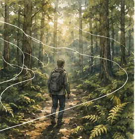
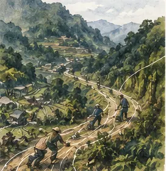
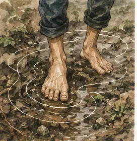
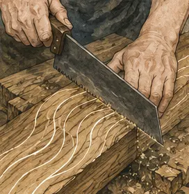
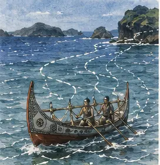
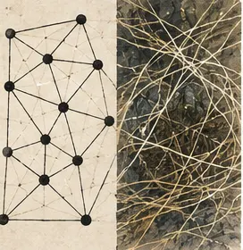
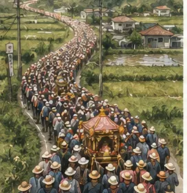
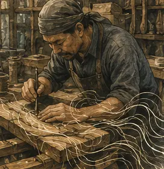
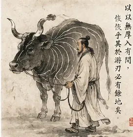
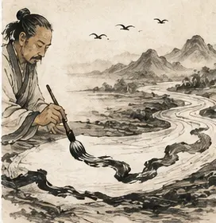

Tim Ingold 與台灣學術本土化：研究資源地圖
從生命、地面、技藝、網結到天氣—世界的跨領域文獻導航｜原始出處連結與書目提要
本地圖整理自五篇研究底稿，供有意進行學術本土化的台灣學者作為文獻探勘起點。每條附原始出處連結與書目提要。
各條目標示「接收層級」：直接接收／可對話／推論性連結——僅「直接接收」表示該文獻實際徵引 Ingold；標「研究判斷」者為本計畫對文獻的整理與推論，引用前請回到原典 。
快速入門
研究路徑
來源索引
逐章對話
方法與聲明
頁內目錄
快速入門
五條路徑
概念蜘蛛網
來源索引
T1 生命×STS
T2 接收史
T3 地面行走
T4 技藝材料
T5 天氣環境
漢語身體
批判視角
逐章對話
└ 章節地圖
方法聲明
如何使用這張地圖
想認識 Ingold ：先看「入口一 快速入門」。想依主題探索 ：看「入口二 研究路徑」的五條對話線（生命×STS、接收史、地面行走、技藝材料、天氣環境）；或用「入口三 來源索引」上方的搜尋框與「路徑」按鈕，依作者／關鍵詞篩選。想依章節查延伸文獻 ：到「入口五 逐章對話 › 全書章節導覽地圖」，依《Being Alive》五部展開，點任一章即跳到該章的延伸文獻、四維對話與可發展論文題目。看懂標記 ：可信度 A–D（A 最可查證）；接收層級分「直接接收／可對話／推論性連結」，僅「直接接收」表示該文獻實際徵引 Ingold；標「研究判斷」者為本計畫的整理與推論——正式引用前一律回到原典 。
入口一 快速入門Tim Ingold（1948–，亞伯丁大學榮退教授）主張人類學是「對人類生命之條件與潛能持續而嚴謹的探究」。《Being Alive: Essays on Movement, Knowledge and Description》（Routledge, 2011）以 meshwork（網結）、wayfaring（行旅）、enskilment（技能習得）、weather-world（天氣—世界）、correspondence（對應）等概念，把生命放回人類學核心。本系列研究逐章探勘其與台灣／漢語學界的對話接軌處；本地圖把五場對話整理為可查證的文獻路徑。
系列的統攝命題：Ingold 的 knowing from the inside（由內而知）與漢語的「體知／踐形／工夫」共享「由身體實踐而知、生命浸沒於流動介質」的存有論；但漢語傳統以「感應」與「道」賦予倫理—宇宙論的方向性，Ingold 則保留反目的、開放的生成。本土化的任務不是證明兩者相同，而是讓張力持續生產問題——並以台灣經驗（殖民史、勞動體制、毒物暴露、原住民法政主體性）反向迫使 Ingold 更政治、更歷史。
「學術本土化」的定義 ：本頁所謂學術本土化，不是將 Ingold 概念直接套用於台灣案例，而是考察台灣 STS、人類學、身體感、原住民研究、宗教行走、文資技藝與勞動研究如何與 Ingold 形成雙向對話 ——一方面借用其概念重新描述台灣經驗，另一方面以台灣經驗修正其現象學、去政治化或感官抽象化的侷限。
十篇核心必讀
Ingold, Being Alive (2011) ——系列基準文本，緒論與第3、4、7、9章為台灣對話錨點。Ingold, "Culture on the Ground" (2004) ——腳是知覺器官；台灣「腳的現代性」對話的起點。Ingold, "Walking the Plank" (2006/2011) ——以鋸木板推翻形質論；技藝即沿線前行的對應。Ingold, "When ANT meets SPIDER" (2008) ——meshwork 對抗 network，介入台灣 ANT 在地化之辯的樞紐。李威宜（2021）導言 ——台灣 Ingold 接收的策展框架：把 Ingold 當「說出微妙知覺」的方法論工具。林益仁（2021） ——台灣最明確以 Ingold 為核心對話對象的田野研究之一；TEK 從知識論問題變成生命實作問題。林文源（2007） ——ANT 行動本體論；與 meshwork 對讀是文獻最厚、張力最大的理論接點。余舜德（2006／2013） ——「身體感」是台灣理論地基，能把 enskilment 感官化、在地化並回應 Howes 批判。張思菁（2018） ——白沙屯進香的身體感知：與第三章最直接呼應的台灣文獻。鄭肇祺（2021）或謝嘉心（2021） ——「生死網結」與「被抽取的技藝」：台灣反向修正 Ingold 的兩個原創方向。
台灣反向修正 Ingold 的概念前沿
整合各章審查回饋，本系列最具原創潛力的概念提案：毒物天氣—世界 （toxic weather-world，大林蒲空污使 weather-world 政治化）、生死網結 （life-death mesh，養殖漁業迫使 meshwork 面對死亡與商品化）、囚腳之物的全球工廠 （台灣製鞋業作為「腳感現代性」的物質基礎）、活技藝 vs 被抽取的技藝 （文資保存、技職競賽、外包體制如何抽取 correspondence）、解放腳也是治理術 （日治放足顯示「解放」同時是殖民身體治理）。每一個概念都同時是一篇可投稿論文的種子。
入口二 研究路徑：五條對話線接收地形為「四圈交織＋STS 橫貫」：環境人類學圈、原住民／TEK 圈、地理／環境治理圈、藝術／策展圈；STS 與批判視角橫向貫穿。每張路徑卡以四個問題開頭：Ingold 的問題是什麼？台灣的接點在哪裡？台灣如何補充或反駁 Ingold？下一步研究可以怎麼做？

路徑一｜生命與人類學：meshwork 對抗 network
Ingold 問 ：生命如何被理論驅逐，又如何放回？台灣接點 ：林文源位移理論、楊弘任文化轉譯、傅大為的「拿來主義」診斷。反向修正 ：林文源批判 ANT 看不見弱勢者的能動，Ingold 批判 ANT 的能動概念本身——兩種批判互相照亮。下一步 ：以「位移理論 vs meshwork」寫理論對話論文，回應「東亞如何建立自己的 STS 立場」。

路徑二｜台灣人類學接收史：一次集中而非偶然的接收
Ingold 問 ：如何描述無形介質與微妙知覺？台灣接點 ：《臺灣人類學刊》19(2) 專題、南藝大四講、《藝術觀點ACT》89 期。反向修正 ：接收分三種模式——方法論借用、本體論重排、批判性反向修正；Ingold 在台灣的接收本身就是一種 mediated correspondence（期刊、口譯、策展而非駐留）。下一步 ：辨明「直接接收／可對話／推論性連結」三層，寫台灣接收史。

路徑三｜地面與行走：腳的台灣現代性
Ingold 問 ：為何思想史獨尊腦與手而貶抑雙腳？台灣接點 ：身體感研究群（理論地基）、日治放足、媽祖徒步進香、原住民山林行走、製鞋王國。反向修正 ：三條線——被規訓的腳（放足＝解放也是治理）、神聖化與技能化的腳（鑽轎底翻轉貼地姿態的卑賤）、商品化與病理化的腳（囚腳之物的全球工廠、糖尿病足）。下一步 ：「放足＋進香＋製鞋」三案例構成歷史—宗教—資本主義三重分析。

路徑四｜技藝與材料：活技藝與被抽取的技藝
Ingold 問 ：技藝是設計的執行，還是與材料的對應？台灣接點 ：人間國寶傳習、達悟拼板舟、黑手師傅、製茶身體感。反向修正 ：技藝的 correspondence 不只發生在工匠—工具—材料之間，也發生在制度、族群、階級、國家與資本之間——文資制度具「支撐傳承／項目化展示」雙重效果，工業體制抽取並貶低技藝。下一步 ：「凍結還是行旅？」介入文資政策方法論；「黑手的線」補 Ingold 階級盲點。

路徑五｜天氣、空氣與環境政治：毒物天氣—世界
Ingold 問 ：居住於開放世界，就是被捲入天氣—世界的轉化之中？台灣接點 ：大林蒲空污與「保衛西南風」、彭保羅的毒物暴露批判、氣論與風水的漢語宇宙論。反向修正 ：在台灣，風不是抽象介質，而是被工業、都市計畫、監測、抗爭、遷村政策共同構成的政治性介質——「毒物天氣—世界」。下一步 ：接 Bufe & Hovius 台灣侵蝕—碳循環資料，把 weather-world 與 Latour 臨界區並讀。
兩條橫貫帶 ：
漢語身體—宇宙論（整合脊椎） ——體知、氣論、莊子技藝、書論線條，貫穿五條路徑的漢語對手文本；
批判視角 ——Howes 的多感官批判、Hicks 的「網結疲勞」、性別／障礙／政治經濟，防止任何一條路徑落入去政治化與浪漫化。
概念層 概念蜘蛛網：沿 Ingold 的線進入台灣文獻以 Ingold 原文核心概念為節點的網結圖——每個概念都是一條可以走的線，點擊節點進入對應的文獻路徑。排程任務將以 Consensus 學術搜尋與 TOAJ 持續為每個概念補入國際與台灣文獻。
生命 life 網結 meshwork 行旅 wayfaring 棲居 dwelling 對應 correspondence 技能習得 enskilment 天氣—世界 weather-world 編織性 textility 由內而知×體知 knowing from inside
Ingold 晚期與導讀文獻（Consensus 學術搜尋查得，連結為論文頁）：Ingold (2017). "On human correspondence." JRAI 23(1)。；Ingold (2022). "On not knowing and paying attention: How to walk in a possible world." Irish Journal of Sociology 。；Ingold (2024). "How to imagine a sustainable world." Acta Borealia 。；Ingold (2006). "Rethinking the animate, re-animating thought." Ethnos 。；Conversations with Tim Ingold (2024)。
概念蜘蛛網的擴充節點：「對應」的理論宣言（lifelines 以習慣、agencing、注意性相互回應）；〈On not knowing〉與〈How to imagine a sustainable world〉分別是南藝大第三講「論非知與關注」、第四講「萬物的永續性」的論文版——查證講座內容時可直接對引；〈Rethinking the animate〉是 weather-world 的概念源頭之一；《Conversations》是 2024 年出版的訪談導讀書，適合課程入門。
【概念節點：meshwork（網結）】Klenk, N. (2018). "From network to meshwork." Environmental Science & Policy （41 引用）。；Muñoz, S. (2021). "Un diálogo entre la red de Bruno Latour y la malla de Tim Ingold." Cinta de Moebio 。；Munter, K. et al. (2024). "Correspondence and troubled meshworks of life." Anuac 。
Consensus 擴充（研究判斷 ）：Klenk 把「網絡→網結」轉換用於跨領域環境研究的方法論（與 T1「位移理論 vs meshwork」直接相關）；Muñoz 是 Latour 網絡與 Ingold 網結的正面對勘；Munter 等以安地斯原住民田野提出「受擾的網結」——與 T2 林益仁的 TEK 路線及「生死網結」修正方向共振。
【概念節點：wayfaring（行旅）×dwelling（棲居）】Hackett, A. (2016). "Young children as wayfarers." Children & Society （46 引用）。；Cunliffe, A. (2018). "Wayfaring: A scholarship of possibilities"（32 引用）。；Cheng, E. S.-k. (2024). "The mobile spatialization of agriculture in Hong Kong." Journal of Rural Studies 。｜Ingold, T. (1993). "The temporality of the landscape." World Archaeology 25(2): 152–174（1384 引用，dwelling／taskscape 原典）。；Cloke, P. & Jones, O. (2001). EPA 33（255 引用）。；Cooke, B. et al. (2016). "Dwelling in the biosphere." Sustainability Science （90 引用）。
Consensus 擴充（研究判斷 ）：Cheng 2024 以香港「行村、行田」民族誌應用 wayfaring——華語語境的直接先例，T3 台灣行走研究的最近參照；Hackett（幼兒）與 Cunliffe（學術生涯）顯示概念輻射幅度。dwelling 組以 1993 原典為錨（地景即世代棲居的見證），Cooke 等將其接上韌性研究——與 T2 原住民韌性（小米方舟）可對讀。
【概念節點：enskilment（技能習得）×education of attention（注意力的教育）】Woods, C. et al. (2021). "Enskilment." Sports Medicine – Open （42 引用）。；Churchill, E. (2022). "The education of attention in enskillment." Journal of Pragmatics 。｜Ingold, T. (2001). "From the transmission of representations to the education of attention." In The Debated Mind , pp. 113–153（91 引用，概念原典）。；Gieser, T. (2008). "Embodiment, emotion and empathy." Anthropological Theory （85 引用）。；Harris, A. et al. (2017). "Medical education of attention." Medical Teacher 。
Consensus 擴充（研究判斷 ）：Ingold 2001 是「從表徵傳遞到注意力教育」的原典出處（余舜德製茶條目的理論對口）；Gieser 以情緒與同感補「觀察—模仿如何轉成知覺轉變」的機制空缺——可回應 Howes 的感官社會性批判；Churchill 以日本親子鋼琴練習做微觀互動分析，是東亞脈絡的實證範例；Harris 連到醫學的聽診感官訓練——與台灣身體感研究的醫療人類學線可對接。
【概念節點：taskscape（任務景）×textility（編織性）】Gruppuso, P. & Whitehouse, A. (2020). "Exploring taskscapes: An introduction." Social Anthropology （29 引用）。｜Taylor, A. S. (2017). "What lines, rats, and sheep can tell us." Design Issues （17 引用）。；Paavolainen, T. (2017). "Fabric philosophy: The 'texture' of theatricality and performativity."
Consensus 擴充（研究判斷 ）：Gruppuso 與 Whitehouse 的專題導言重估 taskscape 在人類世的分析潛力（含政治張力）——T4 文資制度分析可借此框架；Taylor 把線與網結帶進設計研究（與大木作「持篙」對話）；Paavolainen 以「織理」重讀劇場性與展演性——藝術圈接收（T2 路徑）的延伸參照。
【概念節點：weather-world（天氣—世界）】Bell, S. et al. (2019). "Negotiating nature's weather worlds in the context of life with sight impairment." Transactions of the IBG （36 引用）。；Dransart, P. et al. (2021). "When the winds run with the earth." Current Anthropology 。；Engelmann, S. (2023). "Weathering three storms: Experiments in an elemental geohumanities." GeoHumanities 。
Consensus 擴充（研究判斷 ）：Bell 等以視障者經驗讓 weather-world 與障礙研究相遇——正是橫貫帶二要求的健全主義校準；Dransart 的智利風民族誌示範「weather-worlding」的世代知識分析；Engelmann 處理「天氣作為資料」（測量、開放氣象資料）——與大林蒲空污監測、「量體政治」的台灣線最接近。原典〈Earth, sky, wind, and weather〉Consensus 載 275 次引用（見 ing-weather 條目）。
入口三 來源索引：可查證書目層T1｜生命與人類學（緒論 × 台灣 STS）

與 Latour 的網絡不同，Ingold 的 meshwork 是生命的編織，而非節點的連結。
Ingold, T. (2011). Being Alive: Essays on Movement, Knowledge and Description . London: Routledge.
系列核心文本。緒論〈Anthropology comes to life〉主張以生命的開放運動取代目的論；第3章（pp. 33–50）、第4章（pp. 51–62）、第7章、第9章（pp. 115–125）為台灣對話的章節錨點。引用時注意多章存在期刊原版與書中修訂版之別。書目核對：Routledge，2011，270 頁，平裝 ISBN 978-0-415-57684-0、精裝 978-0-415-57683-3。
Ingold, T. (2008). "When ANT meets SPIDER: Social theory for arthropods." In C. Knappett & L. Malafouris (eds.), Material Agency: Towards a Non-Anthropocentric Approach , pp. 209–215. Boston: Springer. DOI: 10.1007/978-0-387-74711-8_11（修訂版收入《Being Alive》第7章）
以蜘蛛（SPIDER＝Skilled Practice Involves Developmentally Embodied Responsiveness）對抗螞蟻（ANT）：行動非分布於網絡節點的 agency，而是「沿網結之線傳導的力的互動中湧現」。介入台灣 ANT 在地化之辯的樞紐文本；引用須註明 2008／2011 版本。書目經 Springer 章節頁與亞伯丁典藏交叉確認。
林文源（2007）。〈論行動者網絡理論的行動本體論〉。《科技、醫療與社會》4: 65–108。
主張 ANT 浮現「行動本體論」——being-in-action 之關係性湧現的、被中介的、異質的構成。與 Ingold 的關係性本體論共享「關係先於實體」前提，但路徑有別，是「位移理論 vs meshwork」對話的起點。卷期頁碼與 DOI（10.6464/TJSSTM.200704.0065）經華藝條目與作者清大教師頁交叉確認。
林文源（2006）。〈漂移之作：由血液透析病患的存在與行動談社會本體論〉。《台灣社會學》12: 69–140。（OpenAccess）
提出「漂移之作」（driftworks）社會本體論。其透析病患案例若以 meshwork 重讀，「弱勢者施為能力」會從「多重霸權網絡中的位移」被重新描述為「沿生命之線的對應與成長」——兩種批判的政治後果比較即是一篇論文。卷期頁碼（12: 69–140）經作者清大教師頁與華藝《台灣社會學》期刊目錄交叉確認；《台灣社會學》TOAJ 收錄狀態未能自動核實（見資料庫條目說明），請以華藝或期刊官網為準。
林文源（2014）。《看不見的行動能力：從行動者網絡到位移理論》。臺北：中央研究院社會學研究所。
三層理論（漂移實作本體論、位移行動理論、體制分析）修補 ANT 的「霸權」性質。林文源批判 ANT 看不見弱勢者的能動，Ingold 批判 ANT 的能動概念本身——兩種批判可互相照亮。注意：2014 書中是否實質對話 Mol 的多重本體論須查原書正文；推薦序評語不可逕引為其本人主張。（自合併條目拆分；經博客來與作者清大教師頁交叉確認。）
Lin, W.-Y. (2013). "Displacement of agency: The enactment of patients' agency in and beyond haemodialysis practices." Science, Technology, & Human Values 38(3): 421–443. DOI: 10.1177/0162243912443717
位移理論的英文版主論文：批判 ANT 轉譯框架的「帝國主義、管理主義、單一化」性質，以透析病患的問題化—分布—混生—再穩定化過程提出替代框架。（自 sts-lin2014 合併條目拆分；經 SAGE 原文頁與 Semantic Scholar 交叉確認。）
楊弘任（2007；2014 增訂版）。《社區如何動起來？：黑珍珠之鄉的派系、在地師傅與社區總體營造》。新北：左岸文化。（增訂版 ISBN 978-986-6525-83-4）
「文化轉譯」與「在地師傅」概念出處：區分「認知化的常識」與「身體化的技術」，後者與 enskilment 高度親近。可發展論點：以 wayfaring／correspondence 重新描述在地師傅的技藝傳承，使「轉譯」從端點—連結語意轉向「沿著實作之線的相互成長」。（自合併條目拆分；經博客來增訂版頁與讀冊交叉確認。）
楊弘任（2011）。〈何謂在地性？：從地方知識與在地範疇出發〉。《思與言》49(4): 5–29。（2011 年 12 月）
「在地性」的理論化：地方知識與在地範疇如何面對專家知識與外來範疇，提出「文化轉譯」作為克服「邊界維繫／社會改革」矛盾的方案。（自 sts-yang 合併條目拆分。）頁碼以作者中研院社會所著作目錄與全文 PDF 為準（5–29）；華藝 DocID 尾碼作 10–34，與作者來源不符，引用時請以全文 PDF 確認。
傅大為（2019）。《STS 的緣起與多重建構：橫看近代科學的一種編織與打造》。臺北：國立臺灣大學出版中心。（624 頁，ISBN 978-986-350-339-2）
理解台灣 ANT 接收系譜的脈絡文獻。傅大為直言台灣對 ANT 多是「拿來主義」——這個診斷正是 Ingold 作為「外部對話者」介入的理由，也回應「東亞如何建立自己的 STS 立場」之問。（自合併條目拆分；經臺大出版中心官方頁與博客來交叉確認，書名副標一併補全。）
拉圖（Bruno Latour）著，余曉嵐、林文源、許全義譯（2012）。《我們從未現代過》。臺北：群學。（336 頁，2012 年 10 月）
台灣 ANT 接收的譯介里程碑（譯者群即在地 STS 社群核心成員）。與 Ingold 對 Latour 的批判並讀，可看出台灣讀者同時接收了「網絡」與「網結」兩種本體論方案。（自 sts-fu 合併條目拆分；經博客來與群學出版公告交叉確認。）
T2｜台灣人類學接收史：《臺灣人類學刊》19(2) 專題與藝術圈擴散
2021 年 12 月，李威宜客座策劃「環境人類學方法論的探索：與 Tim Ingold 對話」專題——台灣最集中、最可引用的正式對話場域。注意：民族所官網目次頁曾有作者—題名對位錯誤，以華藝與機構典藏交叉確認為準。Ingold 著作目前未見台灣繁體譯本體系，接收主要經期刊、線上講座口譯、簡體譯本與藝術評論轉介——這個「翻譯空白」本身即值得研究。
泰雅農耕與山林實踐：路徑是人與環境共同走出來的線（林益仁）。 蘭嶼與雅浦：海流、風與人同行，形成活的路徑（黃郁茜）。
李威宜（2021）。〈導言：環境人類學方法論的探索：與 Tim Ingold 對話〉。《臺灣人類學刊》19(2): 1–8。
理解專題問題意識的關鍵：以學術史重建 Ingold 三階段思路，歸納兩個對話節點與兩點方法論啟示（探問無形世界、說出微妙知覺）。其性質是編輯性、策展性框架——把 Ingold 當「方法論修補工具」而非範式皈依，不宜過度理論化為「接收綱領」。專題出處已由民族所官方頁確認；官網目次的作者—題名對位亦經月旦逐篇交叉核對無誤。頁碼 1–8 為推定（次篇起頁為 9），引用前請以全文 PDF 確認。TOAJ 收錄查證：《臺灣人類學刊》確認有 TOAJ 期刊頁（期刊層級），文章層級連結因平台採前端動態載入、無法自動核實，請自期刊頁進入檢索。
林益仁（2021）。〈我在泰雅生態農耕敘事中的走動：對 Tim Ingold 的呼應〉。《臺灣人類學刊》19(2): 9–55。
台灣最明確以 Ingold 為核心對話對象的田野研究之一（直接以 walking、dwelling、lines、correspondence 重讀尖石後山泰雅農耕），提出「照顧」的生態新解。其關鍵推進：TEK 從「知識論問題」轉化為「生命實作問題」——知識不是被保存的，而是被走出來、照顧出來的。頁碼疑點已裁定為 9–55（北醫機構典藏＋專題四篇頁碼連續性 9–55、57–106、107–145、147–188 交叉印證；383–416 說不成立）。
黃郁茜（2021）。〈論路徑、行走，與創造路徑——從雅浦與蘭嶼的村落路徑談起〉。《臺灣人類學刊》19(2): 57–106。
以雅浦與蘭嶼村落路徑比較，把南島比較研究從「分類式比較」推進到「同行式（corresponding）比較」：研究者不是處於河流兩岸，而是與研究對象共同置身河流之中。專題中理論密度最高、最直接觸及「人類學 vs 民族誌」之分的一篇，可回接《Being Alive》第12、13章。
鄭肇祺（2021）。〈魚蝦豐收：臺灣養殖產業的漁具、生死網目與技藝體現〉。《臺灣人類學刊》19(2): 107–145。
提出「經由漁具思考」與「生死網目」（life-death mesh）——專題中正面處理「向死」難題的代表性論文。其修正力道應精準表述：並非「Ingold 忽略死亡」，而是養殖民族誌迫使 meshwork 面對其生命論語彙中較不突出的面向——養成、捕獲、死亡與商品化如何構成同一張網結。頁碼經月旦知識庫 citation 詮釋資料確認為 107–145。
張怡婷、簡旭伸（2021）。〈量體流動與風的時空政治——以大林蒲的空氣污染為例〉。《臺灣人類學刊》19(2): 147–188。
把 weather-world 改造成有政治經濟厚度的「量體政治」分析：大林蒲居民以感官辨認空氣品質，催生以「保護風」為宗旨的社會運動（保衛西南風）。不是「運用 Ingold」，而是處理其未曾關注的通量流動時空性——「毒物天氣—世界」概念的經驗基礎，也是連回 STS 的橋。頁碼經月旦知識庫 citation 詮釋資料確認為 147–188。
Ingold, T. (2000). The Perception of the Environment: Essays on Livelihood, Dwelling and Skill . London: Routledge.（482 頁，平裝 ISBN 978-0-415-22832-9；2011 年再版）
dwelling perspective 與 enskilment 的集大成，台灣接收最常徵引的奠基文本（自合併條目拆分，依「一筆條目一個可查證物件」規則）。
Ingold, T. (2008). "Bindings against boundaries: Entanglements of life in an open world." Environment and Planning A 40(8): 1796–1810. DOI: 10.1068/a40156
「開放世界之交纏」：棲居世界即生活於開放之中。台灣接收的關鍵錨點——鄭肇祺與張怡婷／簡旭伸兩篇的概念起點。（自合併條目 ing-poe 拆分，依「一筆條目一個可查證物件」規則；書目經 SAGE 原文頁與亞伯丁典藏交叉確認。）
Ingold, T. (2012). "Toward an ecology of materials." Annual Review of Anthropology 41: 427–442. DOI: 10.1146/annurev-anthro-081309-145920
材料生態學綱領：批評物質文化研究偏重成品而忽略材料性質與能量流動，主張關注材料被捲入形式生成過程的方式。T4 技藝路徑的理論支點之一。（自 ing-poe 拆分；經 Annual Reviews 官方頁與亞伯丁典藏交叉確認。）
Ingold, T. (2014). "That's enough about ethnography!" HAU: Journal of Ethnographic Theory 4(1): 383–395. DOI: 10.14318/hau4.1.021
「人類學≠民族誌」之爭的宣言：民族誌一詞被過度使用而失義，把田野工作「民族誌化」會傷害人類學的存有論承諾與教育目的。黃郁茜（2021）「同行式比較」的對話文本。（自 ing-poe 拆分；經 HAU 期刊官方頁與亞伯丁典藏交叉確認。）
Ingold, T. (2017). "On human correspondence." Journal of the Royal Anthropological Institute 23(1): 9–27. DOI: 10.1111/1467-9655.12541
「對應」的理論宣言：每一生命都是線束而非團塊；對應立基於習慣（而非意志）、agencing（而非 agency）、注意性（而非意向性）三原則。（自 ing-poe 拆分；經 Wiley 原文頁與亞伯丁 AURA 典藏交叉確認；另見 ing-late 條目之 Consensus 連結。）
龔卓軍（2022）。〈從身體現象學到毡團存有學：提姆．英格德南藝大講座的哲學反思〉。《藝術觀點ACT》89（2022 年 4 月，「毡團存有・流域織造」專題）。；蔡翔任（2022）。〈生命線條的交纏共生〉。《藝術觀點ACT》89: 21–24（頁碼待同期目次確認）。
藝術／策展圈是 Ingold「4As」在台灣最活躍的接收場域：2022 年 2–3 月龔卓軍策劃「星球生命的四層反省」四場線上講座——四場日期已全數經南藝大官方頁確認：2/24 第一講「大地、天空與其間的地表」、3/3 第二講「籃中世界」、3/10 第三講「論非知與關注」、3/17 第四講「萬物的永續性」（YouTube 直播存檔可查；Ingold 未曾實體訪台——此事實宜作接收史註腳而非重點），成果見 89 期專題，專題名稱經 ACT 官網與唐山書店頁交叉確認為「毡團存有・流域織造——大地術的境身力與群構造」。龔卓軍全文見 ACT 官方網站。（自 rec-gong 合併條目拆分。）
龔卓軍（2006）。《身體部署：梅洛龐蒂與現象學之後》。臺北：心靈工坊。（320 頁，ISBN 978-986-7574-84-8；2007 年中研院年輕學者研究著作獎）
把書寫現象學接上 Ingold 線條理論的本土理論中介：以梅洛龐蒂晚期思想為線索、傅柯的現象學批判為終點。（自 rec-gong 拆分；經豆瓣、金石堂與天地圖書書目交叉確認。）
Ingold, T. (2007). Lines: A Brief History . London: Routledge.（xii+186 頁，平裝 ISBN 978-0-415-42427-1）；簡體譯本：《線的文化史》，張曉佳譯，北京聯合出版公司／明室Lucida，2023 年 5 月，288 頁，ISBN 978-7-5596-6742-7。
wayfaring／transport、meshwork／network 之分的奠基文本。簡體譯本存在已確認（豆瓣＋出版社資訊；目前通路顯示已絕版）。就目前可見出版資訊而言，Ingold 主要著作尚未形成台灣繁體譯本體系；中譯書名也未統一——翻譯空白與譯名分歧是本土化須正面處理的基礎工程。
Ingold, T. (2013). Making: Anthropology, Archaeology, Art and Architecture . London: Routledge.（平裝 ISBN 978-0-415-56723-7）；(2015). The Life of Lines . London: Routledge.（平裝 ISBN 978-0-415-57686-4）；Correspondences . Cambridge: Polity.（ISBN 978-1-5095-4410-3；通路著錄出版日 2020 年 12 月，部分書目作 2021——引用時依所用版本版權頁為準）
《Lines》之後的三部曲（自合併條目拆分）：製作、線的生命、對應。《Correspondences》出版年在 2020／2021 間著錄歧異，本地圖暫並列兩說，正式引用前請核對版權頁。
可發展論文題目（研究判斷 ，依審查回饋增補） 三種接收模式 ：描述性／方法論接收 （把 Ingold 當「說出微妙知覺」的工具，如李威宜導言）、生成本體論接收 （以 walking、correspondence 重排研究的存有論前提，如林益仁、黃郁茜）、批判性接收 （以台灣經驗反向修正其去政治化侷限，如鄭肇祺、張怡婷／簡旭伸）。三題：
T3｜地面與行走：腳的台灣現代性
三條線：被規訓的腳（放足／學校體育／殖民現代性）、神聖化與技能化的腳（進香／山林行走）、商品化與病理化的腳（製鞋王國／糖尿病足）。身體感研究是整條路徑的理論地基——腳的感知不是單一觸覺，而是痛、痠、麻、穩、沉、神聖感與環境感交織的身體感。
腳是感知世界的器官：透過接觸、壓力與紋理認識環境。 
白沙屯媽祖進香：身體行走，信仰與路徑共同生成。
Ingold, T. (2004). "Culture on the ground: The world perceived through the feet." Journal of Material Culture 9(3): 315–340. DOI: 10.1177/1359183504046896
第三章期刊原版。批判西方思想「頭重腳輕」、以穿靴歐洲人為人之黃金標準；主張腳是知覺器官、行走是接地的認識方式。台灣的回應方向：腳也是歷史器官、政治器官、宗教器官、勞動器官與醫療器官。書目經 SAGE DOI 與 Consensus（236 次引用）交叉確認。
余舜德（2006）。〈物與身體感的歷史：一個研究取向之探索〉。《思與言》44(1): 5–47。
「身體感」研究取向奠基文獻：身體作為經驗主體感知內外世界的知覺項目；批評感官人類學困於西方五官分類，難以處理「氣」「虛」等經驗——恰可補 Ingold 接地知覺、又挑戰其感官抹平傾向（回應 Howes）。「身體感」刻意不英譯、以拼音 shenti-gan 保留，是華語人類學少數具典範企圖的本土概念。頁碼疑點裁定為 5–47（華藝 DocID 載 44-1-5-47；與同期龔卓軍 49–100 起迄相容）；篇名末字經查為「之探索」非「的探索」，已一併修正。
余舜德主編（2008）。《體物入微：物與身體感的研究》。新竹：國立清華大學出版社。（480 頁，ISBN 978-986-84011-3-6）
身體感研究群第一本代表論文集（中研院民族所「身體經驗」研究群成員合著），收入李尚仁〈腐物與骯髒感〉、郭奇正論衛生與城市基礎設施等篇。勘誤：底稿誤植出版者為「中研院民族所」，經查為國立清華大學出版社（2008 年 12 月）。 （自合併條目 bg-books 拆分。）
余舜德主編（2015）。《身體感的轉向》。臺北：國立臺灣大學出版中心。（308 頁，ISBN 978-986-350-119-0；2015 年 12 月，出版中心頁載已絕版）
主張繼「文本轉向」「身體轉向」「感官轉向」之後須有「身體感的轉向」。收入蔡璧名處理莊子工夫與焦點／支援意識（Polanyi 架構）的篇章；「身體與自然」叢書序由楊儒賓撰寫——研究群在系譜上與儒家身體觀／體知傳統交織，是連接漢語思想橫貫帶的橋樑。（自 bg-books 拆分；經臺大出版中心官方頁與博客來交叉確認。）
《考古人類學刊》74 期「感同身受：日常生活的身體感」專號（2011 年 6 月，國立臺灣大學人類學系）。另有 65 期「物與身體感」專號（2006 年 6 月，顏學誠導言〈體物入微〉）。
身體感研究群在台灣期刊的兩個發表軌道專號（自 bg-books 拆分）。74 期導言全文見臺大人類學系官方頁。65 期專號為「有機增補」：查證 74 期時於期刊目錄索引發現，顯示「體物入微」一詞最早作為 2006 年專號導言標題出現——研究群系譜可前推至 2006。研究判斷
張思菁（2018）。〈白沙屯媽祖徒步進香客的身體感知與實踐〉。《大專體育學刊》20(4): 295–308。DOI: 10.5297/ser.201812_20(4).0001（2018 年 12 月）
以現象學式民族誌深描長程徒步中「踩踏入地的腳步、重心移轉、肌肉緊繃與疼痛」，援引動覺共感與「身踏入地」（grounding）——與第三章最直接呼應的台灣文獻。卷期頁碼與 DOI 經華藝條目交叉確認。
呂玫鍰（2007）。〈傳統的再製與創新：白沙屯媽祖進香「行轎」儀式與徒步體驗之分析〉。《民俗曲藝》158: 39–100。（2007 年 12 月）
徒步體驗與「將身體交付給媽祖」的儀式分析。核心翻轉：媽祖進香把 Ingold 所批判的「貼地低姿態」重新神聖化——鑽轎底的伏地不是退化而是接觸，疼痛不是失敗而是感應，腳是宗教經驗的生成器官。（自合併條目拆分；經華藝條目與作者清大人類所頁交叉確認。）
呂玫鍰（2008）。〈社群建構與浮動的邊界：以白沙屯媽祖進香為例〉。《臺灣人類學刊》6(1): 31–76。
進香社群的建構與浮動邊界——共享的徒步經驗與情感如何生成認同。與 wayfaring 的「同行社會性」可直接對話。（自 walk-lu 合併條目拆分；篇名副標補全；經民族所官方摘要頁確認。）
張珣（2003）。《文化媽祖：臺灣媽祖信仰研究論文集》。臺北：中央研究院民族學研究所。
進香研究奠基系譜的代表作擇定（研究判斷 ）：本論文集彙整作者大甲媽祖進香系列研究，是進入「香火、割火、身體實踐」問題群的標準入口；單篇引用請回到原刊。（自 walk-lu 合併條目拆分；經民族所研究人員頁與 Google Books 交叉確認。）官方資料補充：「大甲媽祖遶境進香」已列國家「重要民俗」，官方登錄資訊見文資局國家文化資產網（二手來源所載指定年代有 2008／2011 等不同說法，引用前以官方頁公告欄位為準）。
洪郁如著，吳佩珍、吳亦昕譯（2017[2001]）。《近代台灣女性史：日治時期新女性的誕生》。臺北：國立臺灣大學出版中心。（2017 年 6 月）
「被規訓的腳」文獻群核心：從末代纏足世代、解纏足世代到新式女子教育世代——「解放腳」同時是殖民身體治理的具體歷史。纏足統計查證結果：1905 年臨時臺灣戶口調查載纏足者 80 萬 616 人、約佔女性人口 56.9%（有權威依據）；1915 年比例則有 17.36% 與約 21% 兩說（可能因「纏足／解纏足」分類與分母定義不同），引用前須以《臨時臺灣戶口調查》原始報告或本書核對。（自 grd-colonial 合併條目拆分；經臺大出版中心官方頁與博客來交叉確認。）
游鑑明（2000）。〈日治時期臺灣學校女子體育的發展〉。《中央研究院近代史研究所集刊》33: 1–75。（2000 年 6 月）
學校體育如何把女學生的身體（包括腳與步態）納入殖民現代性的訓練體系。（自 grd-colonial 拆分；刊名全銜補正。）
林玫君（2018）。〈日治時期的臺灣高等女學校學生與臨海教育〉。《師大臺灣史學報》11: 55–97。（2018 年 12 月 31 日出刊）
臨海教育（遠泳會、臨海學校）中的身體訓練——殖民身體工程的海濱版本。原疑點已裁定：卷期頁碼與臺史所官方全文 PDF 完全相符。（自 grd-colonial 拆分。）
高彥頤（Dorothy Ko）著，苗延威譯（2007）。《纏足：「金蓮崇拜」盛極而衰的演變》。臺北：左岸文化。（原著 Cinderella's Sisters: A Revisionist History of Footbinding , 2005）
纏足史的修正主義經典：金蓮崇拜的盛衰不是「落後→解放」直線敘事。勘誤：底稿將左岸中譯版年代誤植為 2005（實為原著英文版年代）；中譯版經查為 2007 年 5 月。 （自 grd-colonial 拆分；經博客來與豆瓣交叉確認。）
謝國雄（1989）。〈黑手變頭家：台灣製造業中的階級流動〉。《台灣社會研究季刊》2(2): 11–54。＋ 製鞋產業（寶成等）與全球商品鏈研究（潘美玲）。
「商品化的腳」與「囚腳之物的全球工廠」命題的文獻基礎：Ingold 把鞋視為囚禁腳的文明技術物，台灣則是為全世界生產此技術物的代工基地——製鞋勞動身體與被生產的鞋構成「以腳造囚腳之物」的雙重身體政治，把現象學批判拉進全球資本主義與勞動史。出版年疑點裁定：作者本人著作目錄自引為 1989（第2卷，11–54）；華藝出版資料載該期（2:2）實際出版於 1990 年 10 月。建議引用作 1989，必要時加註「實際出版 1990」。
官大偉（2013）。〈原住民生態知識與流域治理——以泰雅族 Mrqwang 群之人河關係為例〉。《地理學報》70: 69–105。DOI: 10.6161/jgs.2013.70.04（2013 年 9 月）
石門水庫上游泰雅族 Mrqwang 群的人河關係與流域治理研究，與 dwelling 高度共振。理論張力：gaga 的「規範性」與 dwelling 的「生成性」之間如何互相校準；原住民山林行走不是「天生接地」，而是在殖民、狩獵禁制、土地權與國家林業治理中被學習、壓抑、重啟與再政治化的技能——dwelling 必須面對殖民史與法政主體性。（自合併條目拆分；經華藝條目與政大學術集成交叉確認。）
官大偉、林益仁（2008）。〈什麼傳統？誰的領域？：從泰雅族馬里光流域傳統領域調查經驗談空間知識的轉譯〉。《考古人類學刊》69: 109–142。（2008 年 12 月「當代南島社會的地景批判研究」專號）
傳統領域調查中的空間知識轉譯問題——TEK 與國家製圖技術相遇的第一手反省。（自 ind-kuan 合併條目拆分；篇名副標補全；經期刊目錄索引與專號頁碼連續性〔9–44／45–107／109–142〕交叉檢核。）
王梅霞（2003）。〈從 gaga 的多義性看泰雅族的社會性質〉。《臺灣人類學刊》1(1): 77–104。（2003 年 6 月）
以「gaga 為觀念的實踐過程」整合既有研究的不同解釋——泰雅研究的基準文獻，為「gaga × dwelling」對話提供民族誌地基。（自 ind-kuan 合併條目拆分；經華藝條目與 NTU Scholars 交叉確認。）
高信傑（2014）。〈「康莊大道」：雅美文化中的人與「勞動」〉。《臺灣人類學刊》12(2): 1–52。（2014 年 12 月；國圖期刊篇目載「頁 1 及 3–52」）
雅美（達悟）人觀與勞動的民族誌。達悟拼板舟「無設計圖、依木材特性選料、父祖種樹兒孫取材」與 correspondence／taskscape 高度貼合——但正因太貼合，更須追問：誰有資格造舟？觀光、補助、部落權威與文化代表權如何介入？避免本質化、去歷史化。（自 ind-tao 合併條目拆分；經國圖期刊篇目與月旦條目交叉確認。）
胡正恆（2008）。"'Spirits Fly Slow' (pahapahad no anito): Traditional Ecological Knowledge and Cultural Revivalism in Lan-Yu."《考古人類學刊》69: 45–107。（2008 年 12 月專號）
蘭嶼傳統生態知識與文化復振的代表性研究。（自 ind-tao 拆分；經期刊目錄索引與專號頁碼連續性檢核。）
台邦・撒沙勒（2008）。〈傳統領域的裂解與重構：kucapungane 人地圖譜與空間變遷的再檢視〉。《考古人類學刊》69: 9–44。（2008 年 12 月專號）
魯凱 kucapungane（好茶）人地關係與傳統領域空間變遷——「行走的領域」如何被殖民與遷村裂解、又如何重構。（自 ind-tao 拆分；篇名補全；經期刊目錄索引與專號頁碼連續性檢核。）
Lin, Y.-R., et al. (2020). "Situating Indigenous Resilience: Climate Change and Tayal's 'Millet Ark' Action in Taiwan." Sustainability 12(24): 10676. DOI: 10.3390/su122410676
小米方舟：泰雅原住民食物韌性與氣候變遷的協作研究，林益仁「照顧」生態學的英文發表軌道，連接 TEK 與永續論述。（自 ind-tao 拆分；經 MDPI 官方頁〔開放取用〕與 RePEc 交叉確認。）
可發展論文題目（研究判斷 ，依審查回饋增補） 放足＋進香＋製鞋 」為三案例組合，構成歷史—宗教—資本主義的三重分析。三題：
T4｜技藝與材料：活技藝與被抽取的技藝
四種技藝政治：保存化（文資傳習）、族群化（達悟造舟）、階級化（黑手師傅）、感官化（製茶身體感）。統攝問題：技藝在什麼條件下仍能作為 correspondence 活著？又在什麼條件下被制度、資本或評分系統抽取成可計量、可展示、可交易的能力？
鋸木板不是征服材料，而是回應木紋的走向。 
技藝是與材料的「對應」（correspondence），而非單向控制。
Ingold, T. (2010). "The textility of making." Cambridge Journal of Economics 34(1): 91–102. DOI: 10.1093/cje/bep042（線上先行出版 2009 年 7 月；收入《Being Alive》第17章；第4章原版見 Dakers 編 Defining Technological Literacy , Palgrave, 2006）
第四章論證的本體論升級版：反對形質論，主張形式生成於力場與材料流動，提出 textility 對抗 architectonic。台灣詰問：大木匠「持篙落篙」既設計又現場施作，恰可修正其過於二元的歷史敘事。書目經牛津學術（OUP）官方頁與亞伯丁典藏交叉確認。
Ingold, T. (2011). "Walking the plank: Meditations on a process of skill." In Being Alive , ch. 4. London: Routledge. 章節 DOI: 10.4324/9780203818336-11（原版：In J. R. Dakers (ed.), Defining Technological Literacy , pp. 65–80. New York: Palgrave Macmillan, 2006. DOI: 10.1057/9781403983053_6）
第四章：以鋸木板說明技術技能的三個根本主題——工具使用的行進性、實作者—工具—材料的協同、知覺與行動的耦合；並論技藝在技術工程化世界中的命運。十篇核心必讀之一，章節頁與原版出處經 T&F 與 Springer 官方頁交叉確認。
余舜德（2013）。〈台灣凍頂烏龍茶之工匠技藝、科技與現代性〉。《臺灣人類學刊》11(1): 123–153。（2013 年 7 月）
參考書目經底稿核實徵引 Ingold（1997），是「本地研究已援引 Ingold」的可靠案例。「看天做茶、看茶做茶」：濕度、茶菁含水、發酵氣味、手觸質感都在回話——身體感把「注意力的教育」具體化為味覺、嗅覺、火候與材料回話的複合感知，是 enskilment 的台灣化擴充而非翻譯。卷期頁碼經華藝條目與民族所官方摘要頁（TJA11-1-5）交叉確認。
文化部（2022/01/10 新聞稿）：國家級重要傳統工藝 21 項 29 位保存者、重要傳統表演藝術 19 項 30 位保存者（截至 2021/12）；「重要傳統藝術保存者傳習計畫」（師徒制）。＋ 國立臺灣工藝研究發展中心（NTCRI）；顏水龍《臺灣工藝》（1952）。
「保存化的技藝」制度場域。Ingold 式問題：若技藝是沿材料與情境不斷生成的能力，「保存技藝」究竟在保存什麼？須公允表述：文資制度同時具有支撐活技藝與將技藝項目化、成果化、展示化的雙重效果——不是技藝的敵人，而是技藝被重新制度化的環境。數字經文化部官方新聞稿（2022/01/10）與中央社報導交叉確認：截至 2021 年 12 月，重要傳統工藝 21 項 29 位、重要傳統表演藝術 19 項 30 位保存者。
謝嘉心（2021）。《我的黑手父親：港都拖車師傅的工作與生命》。臺北：游擊文化。（2021 年 11 月，ISBN 978-986-06604-4-9；改寫自碩論《「做師傅就好」：港都黑手師傅的生命、工作與社會流動》，清華社會所 2014——碩論 DOI 引用前請於 NDLTD 確認）＋ 謝國雄《純勞動》（1997）、林崇熙拼裝車研究、侯念祖鹿港小木工匠研究（台灣工匠研究譜系，待逐筆查證）。
「階級化的技藝」核心文獻。關鍵論點：Ingold 說技藝不是規則的執行；黑手師傅讓我們進一步看到，技藝也不是純粹自由的對應，而是在階級、學歷污名、外包與工業風險中被承認、貶低、使用與剝削的身體能力——「被抽取的技藝」，Ingold 的階級盲點由此補上。專書經游擊文化官方頁與博客來交叉確認，碩論題名補全（曾獲台灣社會學會碩士論文佳作等三獎）。
謝國雄（1992）。〈隱形工廠：台灣的外包點與家庭代工〉。《台灣社會研究季刊》13: 137–190。
【查證過程中有機增補】查證〈黑手變頭家〉時，於作者著作目錄發現本篇（附作者提供之全文 PDF）。「隱形工廠」描繪外包點與家庭代工如何承接彈性生產——正是「被抽取的技藝」命題的制度面前史：技藝在外包網絡中被切割為可發包、可計件的勞動，與 correspondence 的整全工匠圖像形成最尖銳的對照。可與謝嘉心（2021）並讀，構成「黑手技藝的政治經濟學」文獻軸線。研究判斷
徐明福、蔡侑樺（2020）。《大木作：臺灣傳統漢式建築——類型・計畫・施作》。臺中：文化部文化資產局。＋ 勞動部勞動力發展署（2022/11/26 新聞稿）：第 46 屆國際技能競賽 6 金 13 銀 6 銅 17 優勝。
大木作「持篙測畫」是 textility vs architecture 最直接的台灣對話場。技職競賽則須兩面並陳：一方面把技藝轉化為可評分的標準化任務，另一方面也迫使選手在高壓時間與材料條件中養成精密注意力——不能只當反例。《大木作》經文資局官方出版頁與 GPI 政府出版品網確認（2020 年 7 月出版）；競賽獎牌數（6 金 13 銀 6 銅 17 優勝，獎牌積分世界第三）經勞動力發展署官方新聞稿確認。
可發展論文題目（研究判斷 ，依審查回饋增補） 活技藝 vs 被抽取的技藝 」：技藝作為與材料持續對應的生命能力（Ingold 的 correspondence），與技藝被制度、資本、評分系統抽取為可計量、可展示、可交易的能力——文資保存、技職競賽、外包體制是三個抽取現場，但每個現場同時也支撐技藝存續，須兩面並陳。三題：
T5｜天氣、空氣與環境政治：毒物天氣—世界
把 weather-world 從哲學概念落實為政治分析：風是被工業、治理、風向與居民感官共同構成的政治性介質。大林蒲研究（見 T2 張怡婷／簡旭伸條目）是經驗基礎。
Ingold, T. (2007). "Earth, sky, wind, and weather." Journal of the Royal Anthropological Institute 13(S1): S19–S38. DOI: 10.1111/j.1467-9655.2007.00401.x（改寫為《Being Alive》第9章，pp. 115–125）
weather-world 與 medium 概念出處：人與物憑藉共同浸沒於介質的生成流動而相關連，生命的根本是呼吸。漢語對話面：氣論「流行之存在」幾乎是其漢語對應。頁碼經 Wiley 官方頁與亞伯丁典藏交叉確認為 S19–S38；部分聚合資料庫誤植為 128–138，請勿沿用。
彭保羅（Paul Jobin）著，郭育安譯（2022）。〈往復書簡：Ingold 與台灣的生態對話〉。科技．人文．涵多路（STS 部落格）。
南藝大講座第三講對話人的一手紀錄。以 RCA 電子廠女工訴訟、蘭嶼核廢、亞泥礦場等案例，質疑 Ingold 詩意的「暴露」（exposure）如何整合工業毒害的現實風險——「把政治經濟織回 meshwork」路線的範本。二手詮釋性質，正式引用應回到一手論文。實際網址已查得並確認可達。
Maurice Freedman 與 Emily Ahern 的風水—宗族經典人類學論辯；台灣風水民族誌（「風水與報應」一文作者卷期查證中）。
「風水」字面即 wind-water，與 medium、weather-world 有結構對應；但 Freedman 以降的辯論顯示風水之氣有方位吉凶、道德報應、可被操弄以謀私利，深嵌宗族政治經濟——恰是 weather-world 所缺、Howes 式批判要補的「感官／環境的社會政治性」。查證註記：「風水與報應」一文經多次檢索未能查得確切篇目，該說法未能核實，引用前請回查；另查得相關線索〈風水作為一種空間的實踐：一個人類學的反思〉（民族所數位典藏 PDF，作者卷期請依全文首頁確認）。
Bufe, A., Hovius, N., et al. (2021). "Co-variation of silicate, carbonate and sulfide weathering drives CO₂ release with erosion." Nature Geoscience 14(4): 211–216. DOI: 10.1038/s41561-021-00714-3（注意：本文於 2024 年發布作者更正，引用時應一併註明）
台灣南部頁岩—砂岩侵蝕梯度的一手地球科學證據：硫化物與碳酸鹽風化隨侵蝕加速，快速侵蝕地形的 CO₂ 淨排放可達慢侵蝕地形封存速率的兩倍以上——使台灣成為檢驗 weather-world 與 Latour 臨界區（critical zone）對讀的地質場域。注意：Ingold 與 Latour 是否曾正面互引此二概念，未能證實。書目經 Nature 官方頁與 GFZ 機構典藏交叉確認。
橫貫帶一｜漢語身體—宇宙論：整合脊椎
前四場對話繞過的「漢語理論大陸」。會通與張力並陳：漢語身體觀承載「感應」的倫理—宇宙論秩序與「道」的目的性，Ingold 刻意反目的論——這個張力才是最有理論生產力之處。

庖丁解牛：順著筋理的線，技進於道。 
書法的「筆勢」：一筆未完，氣脈連綿，線在過程中生生不息。
楊儒賓（1996）。《儒家身體觀》。臺北：中央研究院中國文哲研究所籌備處。（462 頁，ISBN 957-671-470-2；2019 年上海古籍出版社出簡體版）
中文學界從身體觀進入中國哲學的開創之作：身體是「形、氣、神（心）一元三相」構造，以孟子「踐形」觀為核心。注意：楊本人原文表述為身體觀「原型有三」＋社會面相，「四體一體」是學界歸納；且楊自陳對梅洛龐蒂「了解相當有限」——漢語身體觀是獨立發展的傳統而非西方現象學注腳，這恰呼應 Ingold 反對把非西方知識化約為西方理論在地版本的立場。（自合併條目拆分；經國圖臺灣華文電子書庫〔可線上閱覽全文〕與豆瓣交叉確認。）
楊儒賓主編（1993）。《中國古代思想中的氣論及身體觀》。臺北：巨流。（1993 年 3 月，ISBN 978-957-732-003-2）
氣論與身體觀研究的奠基論文集，第一篇「氣與身體觀的理論構造」由楊儒賓導論。（自 sin-yang 拆分；經華藝電子書與身體史文獻書目〔史語所〕交叉確認。）
楊儒賓（2017）。〈氣的考古學——風、風氣與瑪納〉。《臺大中文學報》57: 59–104。DOI: 10.6281/NTUCL.2017.06.57.03
以知識考古學考掘「氣」：風是原始之氣，氣是「流行之存在／存在之流行」。與 weather-world 的會通：兩者都拒斥封閉身體、都以呼吸為生命範式；根本差異：氣承載「感應」倫理—宇宙論秩序，Ingold 反目的論——系列最值得書寫的理論交火點。卷期頁碼（57: 59–104，2017 年 6 月）經臺大中文系官網全文 PDF 與國圖引文索引交叉確認。
賴錫三（2012）。〈《莊子》身體觀的三維辯證：符號解構、技藝融入、氣化交換〉。《清華學報》新42(1): 1–43。（2012 年 3 月）
莊子技藝論的當代詮釋資源。庖丁解牛「依乎天理、因其固然」與 Ingold「順材料紋理而行」逐句對應；輪扁斲輪「得之於手而應於心，口不能言」是默會知識的兩千年先聲。關鍵差異：莊子「技進於道」仍有「道」的嚮往，Ingold 只有技（過程）而無道（目的）。（自合併條目拆分；經清華學報官網全文 PDF 與月旦條目交叉確認。）
徐復觀（1966 初版）。《中國藝術精神》。臺中：中央書局（初版）；通行版：臺北：臺灣學生書局（1966 起多次再版）。
版本擇定（研究判斷 ）：初版 1966 年 2 月於臺中出版，其後以臺灣學生書局版通行（1966–1998 多刷）；引用建議用學生書局版並註明初版年。以莊子為「中國藝術精神」主體、終於山水畫——「技進於道」論的現代詮釋起點。（自 sin-lai 拆分；經學生書局官方頁與東海大學徐復觀研究資料彙編交叉確認。）
杜維明「體知」（embodied knowing）相關著述及黃勇、王順然之詮釋。；孫過庭《書譜》、衛夫人《筆陣圖》等書論文獻（建議用《歷代書法論文選》點校本）。；劉禾《跨語際實踐》（Stanford UP, 1995）；Said "Traveling Theory"。
「體知」幾乎可與 knowing from the inside 直接互譯，但多經二手詮釋轉述。查證註記（2026-06-07 二次回查）：「體知」原始出處通說為杜維明〈論儒家的「體知」——德性之知的涵義〉，收入劉述先主編《儒家倫理研討會論文集》（新加坡：東亞哲學研究所，1987）——此說僅見於二手徵引，多次檢索均未能取得第一手書目頁面，維持「未能核實，引用前請回查」。 可核實的替代入口（藤蔓增補 #4）：杜維明〈身體與體知〉，《當代》第 35 期（臺北，1989），頁 46–52 ——此筆為台灣刊行的 1980 年代杜維明「體知」一手文獻，書目經賴錫三（2012）官方全文 PDF 註 34 著錄交叉確認，可作為「體知」的可引用起點；另有〈儒家「體知」傳統的現代詮釋〉（1997，收入《十年機緣待儒學》，香港：牛津大學出版社，1999）、〈從「體知」看人的尊嚴〉（《國際儒學研究》第 6 輯，1999）；當代詮釋以黃勇（2020）〈作為動力之知的儒家「體知」論〉（《哲學分析》2020 年第 3 期）最系統，官方刊物頁已連結。書論的「線」承載氣韻與人格，反向挑戰 Ingold 去主體的線。劉禾與 Said 提供反身理解「翻譯 Ingold」的框架：譯註本身是 correspondence 的痕跡。
橫貫帶二｜批判視角：防止去政治化與浪漫化
三個必守底線：不要把感官抽象化；不要把生命詩化而忘記死亡與毒物；不要把原住民 dwelling 去歷史化而忽略國家、殖民、土地權與法政主體性。
Howes, D. (2022). "The misperception of the environment: A critical evaluation of the work of Tim Ingold and an alternative guide to the use of the senses in anthropological theory." Anthropological Theory 22(4): 443–466. DOI: 10.1177/14634996211067307
對 Ingold 最系統的批判：肯定其對 skill、movement、process 的強調，但批評其將感官抽象化、互換化，把人化約為通用個體（generic individuals），未能處理感覺的社會性與知覺的文化中介；主張全方位的「多感官人類學」。使用「新自由主義氣味」一語時須置於其整體論證中，避免變成攻擊性標籤。勘誤：底稿曾誤植刊名為《The Senses and Society》／《Social Anthropology》，經查證為《Anthropological Theory》。
Howes, D. (2022). "In defense of materiality: Attending to the sensori-social life of things." Journal of Material Culture 27(3): 313–335.；Ingold, T. (2022). "Response to David Howes." Journal of Material Culture . DOI: 10.1177/13591835221092084
Howes 的物質文化批判（批 Ingold 抹除物的感官—社會生命）與 Ingold 本人的回應——完整的「批判—回應」組合，引用時兩篇不可與〈Misperception〉混淆。Ingold 回應文已查得 SAGE 頁面。
Hicks, D. (2016). "Reply to comments: Meshwork fatigue." Norwegian Archaeological Review 49(1): 33–39. DOI: 10.1080/00293652.2016.1170722
考古學界對 meshwork 的尖銳批評：診斷學界染上「網結疲勞」。本文是 Hicks〈The Temporality of the Landscape Revisited〉引發的回應組之回覆篇（回應人含 Ingold 本人）——引用時宜將整組「主文—評論—回覆」並讀。與 Howes 並用可避免單向頌揚。
楊（Iris Marion Young）著，何定照譯（2007）。《像女孩那樣丟球：論女性身體經驗》。臺北：商周。（352 頁；2023 年再版）
Young 指出行走、步態與空間性是父權規訓的結果，直接挑戰第三章隱含的中性普遍身體。（自 cri-gender 合併條目拆分；經博客來與城邦書目頁交叉確認，譯者補全。）
林駿杰、張恒豪（2020）。〈什麼是「障礙研究」？英美的理論發展、建制化與臺灣本土化歷程〉。《人文及社會科學集刊》32(4): 645–691。
障礙研究與 crip theory 挑戰「行走／直立／雙足」的健全主義常模——「透過雙腳感知世界」必須被在地化、多元化。（自 cri-gender 拆分；篇名副標補全；經人社中心官方全文 PDF 確認。）
來源入口｜資料庫與機構
台灣學術資料庫：臺灣學術期刊開放取用平台（TOAJ，國科會支持，收錄約 180 餘種人文社會 OA 期刊，免費全文） 、Airiti 華藝線上圖書館、國家圖書館期刊文獻資訊網、臺灣博碩士論文知識加值系統（NDLTD）、月旦知識庫。
本地圖中文書目的查證與全文取得入口。查證順位：TOAJ／期刊官網／DOI（A，開放取用優先）→ 華藝等資料庫條目（B）→ 機構公告（C）→ 二手轉述（D，僅作線索）。TOAJ 收錄查證結果 ：平台採前端動態載入，無法以自動化方式逐刊核實；本地圖八種台灣期刊中僅《臺灣人類學刊》查得 TOAJ 期刊頁（已連結至該條目），其餘七刊（考古人類學刊、思與言、台灣社會學、科技醫療與社會、地理學報、民俗曲藝、人文及社會科學集刊）收錄狀態未能核實，不杜撰連結——讀者可自 TOAJ 平台入口手動檢索；本地圖各該條目均已備官方 PDF 或資料庫連結，可信度不受影響。
機構：中研院民族所（《臺灣人類學刊》《考古人類學刊》）、中研院文哲所、臺史所檔案館（日治影像）、文化部文化資產局、國立臺灣工藝研究發展中心、台灣科技與社會研究學會（《科技、醫療與社會》）。
一手出版與檔案的機構入口，連結可達性已於本日確認。公共學術書寫平台（芭樂人類學、巷仔口社會學、科技．人文．涵多路、《藝術觀點ACT》）屬 C–D 級線索來源，引用時回溯原始期刊。
國際環境人類學資源：Penn Libraries 環境人類學研究指南；Environmental Humanities （Duke，開放取用）；Anthropocenes （開放取用）；Environment and Society （Berghahn Open Anthro）；Society for Cultural Anthropology 進步環境人類學書單。
與國際環境人類學接軌的當代入口：開放取用期刊可直接取得全文，SCA 書單提供引用政治（citation matters）視角——與本系列「批判性接收」的方法論立場互補。
入口五 逐章對話：第二輪深度研究第一輪地圖以「主題」為單位（五條路徑＋兩條橫貫帶）；第二輪改以《Being Alive》的「章」為單位，逐章完成：論證提要、台灣在地思想的接軌／挑戰／回應／共鳴 四維研究判斷、經查證的國際與台灣書目條目、可發展論文題目。四維判斷均屬研究判斷 ，引用前請回到原典。各章不重複第一輪既有條目，僅以導引連結指回對應主題區。
全書章節導覽地圖
依《Being Alive》原書「五部＋緒論＋結語」的架構排列全書章節——點各部標題可展開／收合 該部的章節清單，再由任一章跳至延伸文獻或論文題目。全書共 122 筆 延伸文獻、32 個 可發展論文題目（每章 2 題）。CH02、CH05–CH18、結語為第二輪逐章深度研究；CH01／CH03／CH04 尚未獨立成章，其文獻見第一輪主題區，以指路卡（→）連結。
全部展開 全部收合 （亦可單獨點各部標題）
緒論 Prologue（1 章｜文獻見 T1｜全書總綱）
章 章名（中／英） 核心概念 四維對話重點（台灣） 延伸文獻 論文題目 CH01 人類學活起來Anthropology comes to life 以生命的開放運動取代目的論；「讓人類學活起來」的總綱 —（見 T1 生命×STS） 見 T1 → —
第一部 廓清基礎 Clearing the Ground（3 章｜延伸文獻 8 筆＋2 章見主題區｜論文題目 2）
章 章名（中／英） 核心概念 四維對話重點（台灣） 延伸文獻 論文題目 CH02 材料對抗物質性Materials against materiality 材料 vs 物質性、追隨材料、特性即故事 身體感研究 vs Howes 批判；《考工記》「特性即歷史」 8 筆 → 2 題 → CH03 在地面上的文化Culture on the ground 行走、足部與地面的現代性、鋪面與棲居 —（見 T3 地面行走：腳的台灣現代性） 見 T3 → — CH04 走木板Walking the plank 鋸木、技能過程、工具—材料—知覺的耦合 —（見 T4 技藝材料：製茶、大木作、黑手） 見 T4 → —
第二部 網結 The Meshwork（4 章｜延伸文獻 29 筆｜論文題目 8）
章 章名（中／英） 核心概念 四維對話重點（台灣） 延伸文獻 論文題目 CH05 重新思考生靈性Rethinking the animate 生靈性、泛靈論翻案、關係場域先於區分 布農 hanitu 反例；劉璧榛十六族多樣性 9 筆 → 2 題 → CH06 點、線、對位Point, line, counterpoint 網結 vs 網絡、生成之線、流動空間 龔卓軍毡團存有；台灣 ANT 已建制化 8 筆 → 2 題 → CH07 當螞蟻遇見蜘蛛When ANT meets SPIDER SPIDER vs ANT、能動性、技藝即發展 兩種反 ANT（王志弘政經 vs Ingold 生命論）；莊子庖丁 5 筆 → 2 題 → CH08 大地的形狀The shape of the earth 全球視角 vs 棲居視角、概念演化 台灣科教概念演化樹；蓋天說宇宙論 7 筆 → 2 題 →
第三部 大地與天空 Earth and Sky（4 章｜延伸文獻 31 筆｜論文題目 8）
章 章名（中／英） 核心概念 四維對話重點（台灣） 延伸文獻 論文題目 CH09 大地、天空、風與天氣Earth, sky, wind and weather 天氣—世界、呼吸、棲居於敞開、風土論 洪耀勳風土論（1936）；颱風治理 vs 棲居 5 筆 → 2 題 → CH10 地景或天氣—世界？Landscape or weather-world? scape/scope 詞源、氛圍、以海觀陸 大林蒲量體政治；山水煙雲留白 8 筆 → 2 題 → CH11 對音景概念的四項異議Four objections to the concept of soundscape 反音景、聲音是媒介、enwinded/ensounded 台灣聲景建制 vs 反音景；莊子三籟 9 筆 → 2 題 → CH12 反對空間Against space 場所如結、行旅 vs 交通、沿途整合 內本鹿路徑 vs 劃設語言；「道行之而成」 9 筆 → 2 題 →
第四部 故事性世界 A Storied World（4 章｜延伸文獻 31 筆｜論文題目 8）
章 章名（中／英） 核心概念 四維對話重點（台灣） 延伸文獻 論文題目 CH13 故事對抗分類Stories against classification 故事性 vs 分類式知識、譜系模型批判 達悟飛魚分類即故事；章學誠六經皆史 8 筆 → 2 題 → CH14 命名即說故事Naming as storytelling 名字是動詞、生命線故事、命名政治 達悟白鼻心命名；正名運動與命名政治 8 筆 → 2 題 → CH15 關於字母 A 的七段變奏Seven variations on the letter A 姿態 vs 形狀、書寫現象學、線與表面 吳俊業書法舉止意義；筆順國家標準化 8 筆 → 2 題 → CH16 心靈行走的方式Ways of mind-walking 想像地形、閱讀／書寫／繪畫、中國畫論 石守謙移動桃花源；宗炳臥遊 7 筆 → 2 題 →
第五部 繪製、製作、書寫 Drawing, Making, Writing（2 章｜延伸文獻 14 筆｜論文題目 4）
章 章名（中／英） 核心概念 四維對話重點（台灣） 延伸文獻 論文題目 CH17 製作的紋理性The textility of making 質料形式論批判、追隨材料、紋理 vs 建構 大木作持篙修正二元；莊子以天合天 5 筆 → 2 題 → CH18 共同繪製Drawing together 圖繪人類學、觀察即描述、與而非關於 龔卓軍共繪策展 vs 影像建制；石濤一畫 9 筆 → 2 題 →
結語 Epilogue（1 章｜延伸文獻 9 筆｜論文題目 2）
章 章名（中／英） 核心概念 四維對話重點（台灣） 延伸文獻 論文題目 CH19 人類學不是民族誌Anthropology is not ethnography 對應 vs 描述、方法的暴政、教學即實踐 林開世田野反思；王陽明知行合一 9 筆 → 2 題 →
教學接收軌道（跨章彙整中）
什麼是教學接收 （研究判斷 ）：Ingold 概念出現在台灣大專課程的指定閱讀，是「接收史」的第三條證據軌（期刊論文、講座策展之外）。本小節隨各章批次累積課綱證據（可信度 C：註明授課者、課名、學期，引用前回查課程網）。CH05 查證結果 ：本回合檢索台大、清大、政大課程網與課綱系統，尚未尋獲將〈Rethinking the animate〉列為指定閱讀的可查證課綱；政大民族學系「民族學方法」（劉子愷，110-2）課綱涵蓋「本體論轉向」單元但未列 Ingold——顯示「本體論轉向」教學已在地建制化，Ingold 是否經此進入課堂仍待後續章節批次累積證據。目前在地接點以期刊與研究文獻為主。CH06 新增（兩條教學軌證據） ：(1) Ingold 曾於南藝大進行「星球生命的四重反省」四場講座（龔卓軍 2022 紀錄），是 Ingold 親身在台灣課堂／講堂現場的直接證據；(2) 陳怡君（2021）為某校「地景、文化與權力」課程的學生期末報告，循線可推知該課程曾把 Ingold（環境感知／寓居／製作）列為閱讀材料——課程名稱與授課單位仍待回查課程網以補齊授課者與學期欄位。CH10 新增（兩條教學軌證據） ：(1) 徐振輔（2021）為同一「地景、文化與權力」課程產出系列的另一篇學生期末報告（介紹 Lorimer 的非再現地理學，文中並提及 Lorimer 曾為 Ingold 作介紹、Wylie 的後現象學行走研究）——與陳怡君（2021）合併觀察，可確認該課程把「Ingold—Lorimer—Wylie」這條地景感知系譜列入教學材料，且為台大地理所碩士班課程（作者自署）；(2) 聯經《思想空間》（2022/06）刊出 Ingold 南藝大「星球生命的四層反省」第三講〈論非知與關注〉之獲授權講座紀要，確證該系列講座為南藝大藝術創作理論研究所博士班之正式課堂活動——系列第一講「天空、大地及其間的地表」正是 CH10「天氣—世界」主題的親身在台開講。CH11 新增（一條教學軌證據） ：臺大音樂學研究所 99-2 學期「聲景與聲音藝術」（Music5083，楊建章與聲音藝術家澎葉生合開，英語授課）課綱經臺大課程網直接查證——參考書目完整建置 Schafer、Feld、López、Thompson 的聲景論爭場域，並含戶外錄音與現地創作單元；惟書單未列 Ingold，顯示台灣聲音課堂的接收軸線是 Schafer–Feld，Ingold 的反音景論（CH11）在台灣課堂尚屬「缺席的對造」。CH12 新增（一條教學軌證據） ：政大中文系碩博班「視覺文化專題研究」（鄭文惠，113-1）課綱經政大教學大綱系統直接查證——設「地景認同與空間政治」「性別與地理」單元，書目完整建置 Cresswell《地方》、段義孚《空間與地方》、Soja、Lefebvre、夏鑄九等空間理論譯介線，未列 Ingold——與 CH11 同一模式：台灣課堂的空間／地方教學接收的是 Tuan–Cresswell–Lefebvre–Soja 軸線，Ingold 的反空間論（CH12）是「缺席的對造」；且空間理論課程已跨出地理學建制（本例為中文系）。CH13 新增（一條教學軌證據） ：政大民族學系碩士班核心課「民族學方法」（劉子愷，110-2）課綱經政大教學大綱系統直接查證——設「敘事分析」「本體論轉向」「多物種民族誌」單元，指定閱讀含 Geertz、Kirksey & Helmreich、Briggs 等，並訓練「以說故事的方式書寫民族誌」；惟書單未列 Ingold——與 CH11、CH12 同一「缺席的對造」模式：敘事與本體論轉向已在地建制化，Ingold 本人尚未經此正式進入課堂。CH14 新增（一條教學軌證據） ：政大民族學系大一必修「民族語言學概論」（劉子愷，113-1）課綱經政大教學大綱系統全文直讀——書單完整建置 Ahearn《活出語言來》、Salzmann 等語言人類學教科書、Hymes 溝通民族誌，第 4 週單元正是 Sapir 與 Whorf「語言與思考」——CH14 引用的 Sapir 本人在台灣課堂「在場」，但 Ingold 的 languaging／「名字是動詞」線未列入。「缺席的對造」模式至此跨越聲音（CH11）、空間（CH12）、敘事（CH13）、語言（CH14）四個領域一致成立：Ingold 所對話的經典作者群已在台灣課堂建制化，Ingold 本人始終缺席——這本身即是接收史的重要發現。CH15 新增（一條教學軌證據＋一條誠實留白） ：(1) 臺大人類學系「身體人類學」（顏學誠，103-2，Anth2038）課綱經臺大課程網直接查證——課程以身體感研究、知覺現象學、「身體作為認知的基礎」為主軸（含余舜德演講週），正是本章「手是姿態的總匯」的理論鄰區；惟課綱「指定閱讀」欄未公開（載「待補」），無法確認是否含 Ingold，僅列為主題親近的課堂建制證據。(2) 檢索台大、政大課程網以「書寫／文字／書法」為題之課程，未尋獲將 Ingold《Lines》或本章列為指定閱讀的可查證課綱——書寫研究在台灣課堂分屬中文系書法課程與設計學院字體課程兩個建制，Ingold 的線條人類學在兩者之間仍是「缺席的對造」。CH16 新增（一條教學軌證據） ：臺大藝史所「中國書畫鑑賞研究」（傅申，98-1，ARHY7065，於故宮博物院上課）課綱經臺大課程網全文直讀——近百筆參考書目構成以鑑定與畫史為軸的完整知識體制（徐邦達、方聞、石守謙等），訓練目標是「具有書畫史基礎的鑑賞家」；荊浩式的「圖真」之氣韻問題在此體制中經由畫史處理，Ingold 的人類學讀法（藝術結構＝世界結構）未列入——台灣的中國畫課堂以「真偽之真」為核心，與本章「存有之真」分屬不同知識體制，「缺席的對造」模式延續至中國藝術領域。CH18 新增（一條領域級證據＋一條主題親近課程） ：(1) 傅可恩（2018，芭樂人類學，全文直讀）盤點全台六門視覺人類學課程（清大胡台麗、陽明交大林文玲、東華傅可恩、台東大蔡政良、政大藍美華、暨南梅慧玉）——全部以民族誌影片的製作與分析為核心，繪製（drawing）作為方法完全缺席：CH18「視覺人類學忽視鉛筆」的觀察在台灣課堂版圖逐字成立，「缺席的對造」自單一課綱升級為整個次領域的結構證據。(2) 林文琪（北醫大）「藝術與身體知覺」（111-1 教育部示範課程）與臺大通識「古琴與哲學實踐」以技藝實作＋隨作手寫反思日誌為核心——與 CH18「描述不脫離觀察實作」主題親近；惟課程是否引用 Ingold 未能確認，僅列為主題親近的課堂建制證據（其 2005 年書畫行動論見 ch18-lin2005 條目）。結語新增（一條收束性證據） ：政大民族所碩士班核心課「民族學方法（I）」（劉子愷，111-1）課綱經政大教學大綱系統全文直讀——與 110-2 版（CH13 批次已錄）同課程的延續觀察：指定／參考書單完整建置「民族誌方法」建制（Writing Culture、合作民族誌、Faubion & Marcus《Fieldwork is Not What It Used to Be》、郭佩宜與王宏仁 2006、謝國雄 2007、呂欣怡 2012〈課堂如田野〉），且課程骨架正是結語批判的「方法的暴政」項目（研究計畫書、知情同意書、研究倫理審查）——而 Ingold 的民族誌批判（2008／2014）未列入。「缺席的對造」模式至此取得收束性證據：台灣方法論課堂完整建置了 Ingold 批判對象的全套文獻，批判者本人缺席；耐人尋味的是，書單中的呂欣怡（2012）與謝國雄（2007）恰是「與學生共作」的在地實作文獻——結語的關切已在台灣課堂以另一個系譜「在場」。CH02 新增（一條突破性證據） ：臺大人類學研究所「物質文化與人類學理論」（張正衡，112-2，Anth7123）課綱經臺大課程網全文直讀——指定閱讀以 11 本專書為骨架，《Being Alive》（2022 年再版）整本列入 ，與 Miller《Materiality》、Appadurai《The Social Life of Things》、Latour、Harman & Witmore（物導向哲學）、Küchler & Carroll（重返 Gell）並列。「缺席的對造」模式在物質文化領域首度被打破：Ingold 與其批判對象（Miller 的 materiality 綱領）在同一張書單上同台，由修課者自行裁決論戰——這是本軌道目前唯一一筆把 Ingold 列為指定閱讀的可查證研究所課綱，也印證本章（CH02）論戰已進入台灣課堂的建制核心（詳見 ch02-ntucourse2024 條目）。CH07 （補強） ：本回合檢索台大、清大、政大、陽明交大課程網與課綱系統，未尋獲將〈When ANT meets SPIDER〉或 SPIDER／meshwork 概念列為指定閱讀的可查證課綱。台灣 STS 與人類學課堂的 ANT 教學以 Latour、Law、Callon 與在地的林文源、傅大為文獻為軸（ANT 已建制化，見 sts-fu2019），Ingold 對 ANT 的對話／批判尚未經課綱正式進入課堂——與 CH11–CH16 各章「缺席的對造」同一模式，惟此處缺席的是 Ingold 的「反 ANT」聲音而非其經典對話者。目前在地接點以林文源等 STS 研究文獻為主（見 T1）。CH09 （補強） ：本回合未尋獲將〈Earth, sky, wind, and weather〉或 weather-world 列為指定閱讀的可查證課綱；惟「風土」（和辻哲郎、洪耀勳）在台灣哲學系所的日本哲學／台灣哲學課程中有穩定的教學傳統（洪子偉、鄧敦民編《洪耀勳文獻選輯》2019 即為教學與研究用選輯）——weather-world 若要進入台灣課堂，「風土論」是現成的接榫單元，惟目前兩者尚未在同一課綱並置（推論，未立目）。CH17 （補強） ：本回合未尋獲將〈The textility of making〉列為指定閱讀的可查證課綱；惟「技藝／工藝」相關教學在台灣分布於人類學（身體感、物質文化）、建築與文資（大木作、傳統工藝傳習）、哲學（莊子技藝論）三個建制，各有現成的對話入口（余舜德製茶見 T4、徐明福《大木作》見 T4、張育誠 2024 莊子技藝臺大碩論見 ch17-chang2024）。Ingold 的 textility 論若要進課堂，最可能的接點是物質文化與設計人類學課程（參 ch02-ntucourse2024 臺大「物質文化與人類學理論」已將《Being Alive》整本列入，該課即為跨入點）。
CH02｜材料對抗物質性 Materials against materiality
論證提要 （《Being Alive》pp. 19–32；期刊原版 Archaeological Dialogues 14(1), 2007，附四篇回應與作者答辯）：本章從一塊濕石頭的實驗開始。Ingold 的謎題是：物質性（materiality）與物質文化的文獻不斷增長，卻對「材料」（materials，事物由以製成的東西）幾乎無話可說——木工研究什麼都看，就是不看木材。他以 Gibson 的媒介—物質—表面三分取代「心靈 vs 物質世界」的形上學兩極，指出物質文化研究把物件當作已凝固的成品、把事物在其中成形的媒介昇華為思想；蜂蠟、蟲膠、橡樹癭墨水的材料清冊顯示，事物只是材料流變的暫時副產品——「材料總是勝過物質性」。「讓事物活過來」不是替惰性物件撒上能動性的粉末（Gell 的 agency；Pels 的拜物），而是把事物歸還到它們由之誕生的生成之流；Pye 的特性／質地之辨仍困於心物兩極，材料的特性其實是過程性與關係性的——「每一種特性都是濃縮的故事」。結尾回到桌上的石頭：水已蒸發，石頭性不在石頭的物質性之中，也不在觀察者心靈之中，而在表面上媒介與物質交換的歷史之中。
接軌 （
研究判斷 ）：台灣物質文化研究有自己的建制系譜，且早於本章——黃應貴主編《物與物質文化》（2004，中研院民族所）先於 AD 論戰三年提出以「物」為焦點的研究綱領；身體感研究群（余舜德 2006〈物與身體感的歷史〉、《體物入微》2008，見
T3 既有條目 bg-yu2006、bg-tiwu ）從「物如何在身體感知項目中成為經驗」切入，與本章「從物件的物質性退回材料的特性」是兩條互補的反物件中心路線。黃冠閔（2022）以 Bachelard 的物質想像論風景中的石與雲——本章正引 Bachelard「要深沉地夢想，必須以物質夢想」，同一條法國物質想像線在台灣哲學界已有承接。臺大 112-2「物質文化與人類學理論」更把《Being Alive》與 Miller《Materiality》並列指定閱讀——本章論戰已進入台灣課堂。
挑戰 （研究判斷 ）：三重挑戰。其一（國際），AD 同期回應已指出要害：Tilley 反駁「物質性」承擔著材料論無法取代的分析工作（石頭的社會生命）；Miller 反譏 Ingold 自己依賴的海德格現象學同樣晦澀；Howes（2022）批評 Ingold 把感官抽象化、抹除「物的感官—社會生活」——而台灣身體感研究群強調感官經驗的文化中介與社會養成，立場其實更靠近 Howes 而非 Ingold，這是潛在的在地理論戰線。其二（建制），台灣物質文化研究的主流走 Appadurai–Miller 的「物的社會生命」與消費研究路線（《物與物質文化》多數篇章以象徵、交換、認同為軸）——按本章診斷恰是「什麼都看就是不看材料」，但這同時是台灣累積最深的學術資產，照單全收 Ingold 等於要求拆掉既有典範。其三（實作），本章說策展人與保存者「對抗材料流變」終將失敗，台灣文化資產保存科學（修復、除蟲、控濕）正是以凍結流變為專業使命的建制——若材料終將獲勝，保存的倫理與技藝何在？這是本章在台灣必須回答的實作層反問（研究判斷，未立目）。
回應 （
研究判斷 ）：台灣經驗可把本章的「物質性 vs 材料」二分修成光譜。其一，身體感研究示範第三條路：不問「物質性是什麼」、也不止於「材料的特性」，而問物如何在痠、麻、氣、虛等身體感項目中成為經驗——這些漢語感知範疇正是 Gibson 媒介—物質—表面架構難以安放的（「氣」既是媒介又是身體事件），可反過來擴充本章的媒介概念。其二，達悟拼板舟是「被製成船的木頭」而非「用木頭製成的船」的現成在地案例：不同船板部位取不同樹種、樹在林中先被認養標記，木材的生命史直接顯現於船身——與本章 Nash 未乾木材梯子的論證同構（既有達悟材料文化條目見
CH14 王桂清、鄭漢文 2013，循線可深化，不重複立目）。其三，Pye 所說工匠「畢生與材料工作的經驗知識」在台灣有現成田野：木作司阜、漆藝師、修復師的材料知識可民族誌化，檢驗「特性即故事」是否禁得起工序細節。
共鳴 （研究判斷 ，推論性連結）：《考工記》開篇「天有時，地有氣，材有美，工有巧，合此四者，然後可以為良」——材料之美不是固有屬性，必須與天時、地氣合會才成立；同篇「橘踰淮而北為枳……此地氣然也」更直言材料的特性隨地方與環境而變。這與本章「特性不是屬性，而是歷史」「材料的特性是過程性與關係性的」結構同形，是早於 Gibson 兩千年的「環境中的材料」綱領。東亞工藝常識中「漆是活的」（生漆隨溫濕度呼吸固化）、木材「會走」（乾縮翹曲）等說法，亦是 Nash「形式皮膚之下物質仍然活著」的工坊版本。均屬推論性連結，尚無與本章直接對話的在地文獻。
Ingold, T. (2007). "Materials against materiality." Archaeological Dialogues 14(1): 1–16. DOI: 10.1017/S1380203807002127（修訂版收入《Being Alive》第2章，pp. 19–32）
本章期刊原版；Consensus 載 914 次引用，為 Ingold 單篇被引最高的論文之一。原刊即為論戰格式：同期附 Tilley、Knappett、Miller、Nilsson 四篇回應與 Ingold 答辯〈Writing texts, reading materials. A response to my critics〉（14(1): 31–38）；書中版進一步納入對 Tilley（2007: 17）的再回應（見 CH02-037 段）——引用時注意期刊版與書中版的段落差異。書目經 Cambridge Core 原文頁與亞伯丁大學典藏交叉確認。
Tilley, C. (2007). "Materiality in materials." Archaeological Dialogues 14(1): 16–20. DOI: 10.1017/S1380203807002139
本章最重要的對手文獻（Consensus 載 97 次引用）：Tilley 承認材料研究的價值，但主張「物質性」概念承擔材料論無法取代的工作——處理石頭的「社會生命」與人的社會生命之關係；並反批 Ingold 的對立框架對物質文化研究有「保守而反動的效果」。與 C12 Olwig、C18 Grimshaw 同屬「被批評者本人回應」的雙向對話案例；本章書中版 p. 30 直接引述其 2007: 17 段落再作回應，是地圖中罕見的三回合論戰（批判→回應→再回應）完整保存於同一章的例子。
Howes, D. (2022). "In defense of materiality: Attending to the sensori-social life of things." Journal of Material Culture 27(3). DOI: 10.1177/13591835221088501（起訖頁碼未查得，不標）
十五年後論戰重啟：Howes 直接以本章與《Being Alive》為靶，承認「材料的活性」論證有力，但批評 Ingold 中性化了感知主體、抽象化感官、抹除製作的感官愉悅與「物的感官—社會生活」；以拜占庭金屬聖像、十八九世紀「淑女手工藝」為反例，主張感知總是位於特定感官—社會體制之內。同期刊出 Ingold 答辯〈Response to David Howes〉（27(3): 336–340，DOI: 10.1177/13591835221092084）。與第一輪 T1 已錄 Howes〈Misperception〉（Anthropological Theory 22(4)）為同一波交鋒的兩線，引用時注意區分。
Ingold, T. (2012). "Toward an Ecology of Materials." Annual Review of Anthropology 41: 427–442. DOI: 10.1146/annurev-anthro-081309-145920
本章論證的權威化續篇（Consensus 載 584 次引用）：五年後 Ingold 受邀在年度評論回顧物質文化研究，把本章三項診斷系統化——(a) 物質世界概念容不下生物；(b) 物質性優先成品而非材料特性；(c) 物／物件混同堵塞了生命所繫的能量流。提出「材料生態學」（ecology of materials）作為正面綱領。本章批判在主流學科建制（Annual Review）取得正典位置的標誌，亦是追蹤「材料轉向」後續文獻的引用樞紐。
黃應貴主編（2004）。《物與物質文化》。臺北：中央研究院民族學研究所。（456 頁，ISBN 978-957-01-7227-0）
台灣物質文化研究的建制起點，先於 AD 論戰三年（研究判斷 ）：集結艾灸、服飾與族群、排灣家屋、賽夏儀式食物、神像等專題，以「物」為焦點重審台灣人類學。對本章的雙重意義：一方面證明台灣早有自己的「物轉向」議程，接軌毋須從零開始；另一方面其主軸（象徵、交換、認同、物的社會生命）正落在本章診斷的「談物件不談材料」光譜上——但服飾、食物、神像（金身的木材與漆）等對象其實內含材料問題，是把 Ingold 之問帶回台灣檔案的現成入口。接收層級：可對話（出版早於本章，未引 Ingold 2007）。書目經民族所數位典藏與三民書目頁交叉確認；詮釋待核全文。
黃冠閔（2022）。〈石與雲：風景中的物質性及其轉化〉。《哲學與文化》49(3): 87–104。（ISSN 1015-8383）
台灣哲學界的平行探問（研究判斷 ）：以「物質想像」（Bachelard 線）分析風景的三層物質性條件（地理／生態／文化），再以石與雲兩個物質意象做跨文化比較——「風景是物質元素與形式不斷生成變化的過程」。與本章的接點有三：本章正引 Bachelard「以物質夢想」；石（物質）與雲（媒介的可見化）恰是本章濕石頭與天氣之問的哲學版；其「宇宙性轉化」說與「材料的世界」同樣反對把物質視為惰性基底。差異在路徑——黃由想像力與意象切入，Ingold 拒絕把質地放回心靈。接收層級：可對話（是否引用 Ingold 未能確認）。華藝原文頁全欄位直讀；詮釋待核全文。
張正衡（2024）。「物質文化與人類學理論」課程大綱（Anth7123，臺大人類學研究所，112-2，碩博合開）。臺大課程網。
教學接收的突破性證據（可信度 C，引用前請回查課程網）：指定閱讀以 11 本專書為骨架，《Being Alive》（2022 年再版）整本列入，與 Miller《Materiality》（2005）、Appadurai《The Social Life of Things》、Latour《Pandora's Hope》、Harman & Witmore《Objects Untimely》、Küchler & Carroll（重返 Gell）並列。課程概述明言物質研究者「開始試圖翻轉我們對人類社會的認識論與本體論預設」。這是本地圖「教學接收軌道」目前唯一一筆把 Ingold 列為指定閱讀的可查證課綱——且本章批判的對象（Miller 的 materiality 綱領、Gell 的 agency）與批判者同台，論戰結構被完整搬進台灣課堂。課綱經臺大課程網全文直讀。
《周禮・冬官考工記》：「天有時，地有氣，材有美，工有巧。合此四者，然後可以為良。」（先秦；今本經漢儒整理）
共鳴條目（研究判斷 ，推論性連結）：漢語工藝思想的綱領句——良器不出於「形式加諸物質」，而出於天時、地氣、材美、工巧四者合會；同篇「橘踰淮而北為枳……此地氣然也」直言材料特性隨環境而變，非固有屬性。與本章「特性不是屬性而是歷史」「材料被視為環境的構成要素」結構同形，可作「環境中的材料」的東亞先聲；差異在《考工記》服務於國家工官制度（規範性），Ingold 服務於知覺存有論（描述性）——此差異本身可發展為論文。原文經維基文庫與漢川草廬十三經全文兩處核對。
CH02 可發展論文題目 （研究判斷 ）：
CH05｜重新思考生靈性，重新賦予思想以生命 Rethinking the animate, re-animating thought
論證提要 （《Being Alive》pp. 67–75；期刊原版 Ethnos 71(1), 2006）：Ingold 翻轉泛靈論的傳統定義——把生命「歸諸」惰性物的，其實是夢想在火星找到生命的西方科學家，而非被貼上泛靈論標籤的原住民族。生靈性（animacy）不是投射到物上的屬性，而是「整個關係場域的動態潛能」，在本體論上先於靈魂／物質、能動性／物質性之分。本章以「反轉的邏輯」（logic of inversion）為批判工具，提出三個推進：存有者是網結中的線結而非網絡中的節點；生命的移動是「沿路徑發生」而非空間中的位移（太陽、風、雷皆以其移動方式而活）；大地與天空非真實／想像之分界，而是同一個不可分割的天氣場域。結尾以「驚嘆／驚訝」（astonishment / surprise）對比收束：科學若要融貫，必須在敞開而非封閉的基礎上重建——重新思考原住民泛靈論，就是重新賦予「西方」思想以生命。
接軌 （
研究判斷 ）：台灣與本章的對話場域已經存在——《臺灣人類學刊》19(2) 專號（見
T2 接收史 ：李威宜導言、林益仁泰雅走動）是華語學界最集中的 Ingold 正式接收；何浩慈（2023）進一步以 Ingold 的環境知覺論分析香港都市農耕的「自然」識覺，顯示華語語境的接收已從原住民田野延伸到都市。台灣原住民宗教研究（hanitu、anito、精靈與夢占）累積深厚，是本章「生靈本體論」現成的對話檔案庫。
挑戰 （研究判斷 ）：台灣民族誌對本章構成兩重挑戰。其一，黃應貴（1989）記錄的布農 hanitu 是寓居於人身左右肩、具實體性與道德分工的精靈——這更接近 Ingold 所批判的「靈魂注入物質」圖式，而非「關係場域先於區分」的生靈性；台灣高地民族誌可能是檢驗本章論證邊界的反例。其二，劉璧榛（2024）以 Descola 的本體論架構分析台灣 16 個原住民族群，指出其傳統宗教是泛靈論、類比論、圖騰論並存的動態多樣體——單一的「animic ontology」範疇可能掩蓋在地差異。國際批評同方向：Kochan（2022）主張 Ingold 的泛靈論其實是歐洲新柏拉圖主義的延伸而非出口。
回應 （研究判斷 ）：台灣經驗可修正本章的兩個空缺。其一，本章的生靈例證偏重動物與氣象（風、雷、太陽），劉璧榛（2021）的阿美族（Pangcah）儀式植物研究把「植物存有者」與感官經驗帶進泛靈論討論——植物的生靈性正是 Ingold 較少著墨處。其二，Willerslev（2013）提醒泛靈論民族誌不應太嚴肅——獵人對精靈的嘲弄與反諷是實作的一部分；台灣田野（如夢占的協商性）可檢驗「敞開—驚嘆」框架是否過度浪漫化。
共鳴 （研究判斷 ）：本章「移動即生命」的感性在東亞有多層回聲：Yoneyama（2021）的宮崎駿「批判的泛靈論」顯示日本大眾文化以非二元的自然觀回應人類世（台灣亦有以宮崎駿動畫與泛靈論為題的學位論文，見華藝 U0002-1501201720061500，引用前請回查）；Rest 與 Rippa（2019）把本章的生靈性用於亞洲基礎設施（公路「成長於連結之中」），與台灣的道路、堤防等基礎設施民族誌可對讀。漢人民間信仰的石頭公、樹王公等「萬物有靈」實作是另一條未開發的共鳴線——目前尚缺與 Ingold 直接對話的在地文獻，屬推論性連結。
Ingold, T. (2006). "Rethinking the animate, re-animating thought." Ethnos 71(1): 9–20. DOI: 10.1080/00141840600603111（修訂版收入《Being Alive》第5章，pp. 67–75）
本章期刊原版；Consensus 載 531 次引用，是 Ingold 單篇被引最高的論文之一。引用時注意 2006 期刊版與 2011 書中版的頁碼差異；「weather-world」一詞在本章為雛形（aerial flux of weather），至第9章才完整定式。書目經 Taylor & Francis 原文頁與亞伯丁大學典藏交叉確認。
Kochan, J. (2022). "Ingold's Animism and European Science." Perspectives on Science 30(4). Project MUSE.
對本章最尖銳的科學史批評：Ingold 把原住民泛靈論當成現代科學失靈的解方，但其早期與晚期著作都依賴現代科學的觀念與圖像；「轉向泛靈論」不是離開歐洲科學史，而是進入其中的新柏拉圖主義主題。Kochan（2023）續篇〈Ingold, hermeneutics, and hylomorphic animism〉（Anthropological Theory ）進一步主張 Ingold 對形質論的批判犯了把詮釋學循環誤為惡性循環的錯誤。兩篇合讀可作為本章「反轉邏輯」批判工具的對抗性檢驗。
Willerslev, R. (2013). "Taking Animism Seriously, but Perhaps Not Too Seriously?" Religion and Society 4(1): 41–57. DOI: 10.3167/arrs.2013.040103
對「新泛靈論」（含 Ingold）的內部批評經典：西伯利亞 Yukaghir 獵人一邊相信精靈、一邊嘲弄精靈——反諷的自我意識是泛靈實作的構成部分。對本章的意義：「向世界敞開」的存在描述可能低估了原住民實作中的策略、欺騙與幽默。可與台灣原住民夢占與獵場協商的民族誌對讀。
Rest, M. & Rippa, A. (2019). "Road animism: Reflections on the life of infrastructures." HAU: Journal of Ethnographic Theory 9(2). DOI: 10.1086/706041
本章概念的當代應用範例：以 Ingold 的生靈性（「使物存在的不是內在的生命原理，而是其所嵌入的關係場域之潛能」）分析巴基斯坦、尼泊爾、中國、緬甸、奧地利的公路——公路不是連結既有節點，而是「自連結中成長」。對台灣的基礎設施研究（道路、堤防、電網民族誌）是現成的方法論橋樑。
Yoneyama, S. (2021). "Miyazaki Hayao's Animism and the Anthropocene." Theory, Culture & Society 38(7–8). DOI: 10.1177/02632764211030550
東亞共鳴的代表文獻：宮崎駿的「批判的泛靈論」（critical animism）融合現代性批判與日本民俗遺產，以生活世界與精神世界的非二元結合回應人類世的想像力危機。與本章「重新賦予西方思想以生命」的訴求同構，但路徑是大眾文化而非民族誌。台灣的宮崎駿接收（含學位論文）可作為「泛靈感性的東亞流通」研究起點。
黃應貴（1989）。〈人的觀念與儀式：東埔社布農人的例子〉。《中央研究院民族學研究所集刊》67: 177–213。（收入黃應貴《東埔社布農人的社會生活》，1992，中研院民族所）
台灣對本章的潛在反例（研究判斷 ）：布農人觀中 hanitu 寓居人身左右肩、分掌利他與利己——精靈具實體性、可離身、有道德分工，與 Ingold「生靈性先於靈魂／物質之分」的圖式形成張力。這不是否證，而是迫使本章回答：當民族誌顯示精靈確實被當作「寓居之物」時，「關係場域生靈性」還能解釋什麼？接收層級：可對話（黃應貴未引 Ingold）。書目經作者中研院民族所頁與多方書目資料交叉確認；詮釋待核全文。
Liu, P.-C.［劉璧榛］(2021). "Plant-women, senses, and ecological considerations: Rethinking ritual plants and their taboos among the Pangcah of Taiwan (1920–2020)." Social Compass 68(4). DOI: 10.1177/00377686211046526
台灣的「植物生靈性」研究：阿美族（Pangcah）儀式把植物分為三類（有神有靈的穀物、禁食的葉菜「未婚女性」、僅儀式中食用的包覆類），以感官經驗中介人—植物—精靈的相遇。對本章的回應價值：Ingold 的生靈例證偏重動物與氣象，本文示範植物存有者如何進入泛靈論分析。作者為中研院民族所研究員。接收層級：可對話。
Liu, P.-C.［劉璧榛］(2024). "The dynamic diversity of Taiwan's Indigenous religions: Animism, analogism, and totemism." Social Compass . DOI: 10.1177/00377686241261281
對本章「單一生靈本體論」的台灣校正：以 Descola 的辨識模式分析台灣 16 個官方承認族群，指出其傳統宗教是泛靈論、類比論、圖騰論並存且隨 1950 年代以來宗教變遷而動態重組——「泛靈論」標籤無法概括台灣南島語族的本體論多樣性。與 Ingold 路線的差異（Descola 的類型學 vs Ingold 的反類型學）本身即是論文題目。注意：Consensus 條目作者欄誤植為「Pinxuan Liu」，SAGE 原文頁作 Pi-Chen LIU，引用以 SAGE 為準。
何浩慈（2023）。〈香港以糧為本「自然」識覺：與 Tim Ingold 對話都市人類學〉。《臺灣人類學刊》21(1): 131–166。
TJA 19(2) 專號之後華語語境 Ingold 接收的延續：以香港都市農耕民族誌與 Ingold 的環境知覺論對話，把「自然」識覺從原住民田野帶進都市脈絡。對本章的意義：「向世界敞開」的生靈感知是否可在高度建成環境中存續，是本章論證的都市檢驗場。接收層級：直接接收（篇名即與 Ingold 對話）。書目經民族所期刊頁 PDF 與《思與言》61(3) 引用清單交叉確認。
CH05 可發展論文題目 （研究判斷 ）：
CH06｜點、線、對位：從環境到流動空間 Point, line, counterpoint: from environment to fluid space
論證提要 （《Being Alive》pp. 76–88；原為 Ingold 2008，收入 Berthoz & Christen 編《Neurobiology of the 'Umwelt'》，Springer，pp. 141–155）：本章追問「動物的環境是什麼」，並以此重寫生態人類學「文化 vs 實踐理性」的僵局。Ingold 串起五位思想家層層推進：Gibson 的「可供性」（affordance）揭露其關係性與客觀性難以兼容的內在矛盾；von Uexküll 的「周遭世界」（Umwelt）把意義交還生物的感知—行動迴路，並以複調音樂的「對位」（counterpoint）比喻每個生命之線；Heidegger「無世界／貧乏於世界／形成世界」三命題把人類獨特性推到極致，卻暴露其人類中心的階序；Deleuze 的「生成之線」「逃逸之線」翻轉之——生命不在周界之內、而沿著線被活出，從點「之間」穿行。Ingold 由此提出全書關鍵區分：網結 （meshwork，流動之線的交織）對立於網絡 （network，點的連結），並批評「行動者網絡理論」（ANT）誤譯了 réseau、背離其德勒茲式根源。結尾以 Mol 與 Law 的「流動空間」收束：有機體一如心智，「不受皮膚所限」，它也會洩漏——感知環境不是回看凝固之物，而是匯入大地與天空之間的材料流動。
接軌 （研究判斷 ）：台灣已有與本章核心（網結 vs 網絡）直接對話的場域。龔卓軍（2022）以《藝術觀點ACT》專文〈從身體現象學到毡團存有學〉系統處理 Ingold 的「毡團／網結」（meshwork）與 Latour「網絡」（network）之分庭抗禮，並記錄 Ingold 在南藝大「星球生命的四重反省」四場線上講座——這是 Ingold 思想在台灣藝術—哲學社群最深入的一次接收，且把 meshwork 連回梅洛龐蒂肉身存有學與 Anna Tsing《末日松茸》。陳怡君（2021）為地理學社群引介 Ingold 的環境感知、寓居與「真菌人」（mycelial person）。兩篇《The Life of Lines》書評（李宜澤 2022，《臺灣人類學刊》；沈立遠 2024，《新哲人》）顯示本章「線—網結」論題已進入人類學與哲學的雙重接收。
挑戰 （研究判斷 ）：本章最具爭議處是把「網結」與 Latour 的「網絡」設為對立。Muñoz（2021）主張二者應「對話」而非對立——以「經驗」（experience）為中介，且 Latour 晚期已重新定位 network 概念，Ingold 對 ANT「背叛其德勒茲根源」的指控可能過度。對台灣而言這構成具體挑戰：台灣 STS（科技與社會）社群深受 Latour／ANT 影響，行動者網絡理論早已在地建制化；Ingold 的反網絡論戰要說服台灣 ANT 實作者並不容易。其次，本章承襲 Heidegger「動物貧乏於世界」的人類獨特性階序，與台灣多物種／原住民本體論研究的去人類中心取向有張力。
回應 （
研究判斷 ）：台灣經驗可把本章概念落地。龔卓軍（2022）示範 meshwork 不只是隱喻——他把它操作為藝術「表現性」的分析工具（許瑜庭青苔膠彩、張武俊藻類攝影、松茸韌性），顯示「流動空間」「線之交織」可在台灣生態美學實作中觀察。Ingold「有機體不受皮膚所限／它也洩漏」的滲透性身體論，與台灣身體感研究群（余舜德等，見
漢語身體 ）的「體物入微」、漢人「氣」的身體—宇宙觀可互相充實——後者正好提供本章較缺的「物質如何跨越邊界流動」之在地民族誌。
共鳴 （研究判斷 ）：本章核心意象——菌絲體（mycelium）、根莖、不斷洩漏的身體——在漢語思想中有多層回聲。「氣」貫穿可滲透身體的宇宙論，與「有機體即一束流動之線」同構；道家之「道」作為被走出來的「路徑」而非連結之點，呼應 Deleuze「生成之線」「從中間湧現」之說。在地書寫如 STS 部落格「科技．人文．涵多路」〈往復書簡：Ingold 與台灣的生態對話〉已開始把 Ingold 的線—網結語彙接到台灣生態議題。惟這些多屬概念親近，與本章直接對話的在地專論仍待累積，屬推論性連結。
Ingold, T. (2008). "Point, Line and Counterpoint: From Environment to Fluid Space." In A. Berthoz & Y. Christen (eds.), Neurobiology of the 'Umwelt': How Living Beings Perceive the World . Berlin/Heidelberg: Springer, pp. 141–155. DOI: 10.1007/978-3-540-85897-3_12（修訂版收入《Being Alive》第6章，pp. 76–88）
本章期刊原版出處：原為神經生物學論文集（Berthoz 與 Christen 編）中的一章，書名直接呼應 von Uexküll 的「周遭世界」（Umwelt），可見本章 Gibson／von Uexküll／Heidegger 的感知—環境系譜正是其原初語境。書中版（2011）將 Latour／ANT 批判與「流動空間」收尾推得更顯。書目經 Springer 章頁、亞伯丁大學典藏與 Taylor & Francis（書中版）三方交叉確認。
Ingold, T. (2012). "Trazendo as coisas de volta à vida: emaranhados criativos num mundo de materiais."（"Bringing Things to Life: Creative Entanglements in a World of Materials" 之葡譯版；英文原版 2010, ESRC NCRM Working Paper）
Ingold 本人對「物件／網絡」與行動者網絡理論（ANT）最系統的批判，與本章互為姊妹篇：主張以「物」（thing，多孔而流動、被生命流貫）取代「物件」（object），以「網結」（mesh）取代「網絡」。Consensus 載 202 次引用，是理解本章「網結 vs 網絡」區分與 ANT 批評的關鍵補充文獻。讀本章時宜並讀，以辨明 Ingold 對 Latour／Callon／Law 的具體爭點（主客二分、能動性的物神化、流向分布不均）。
Muñoz, S. (2021). "Un diálogo entre la red de Bruno Latour y la malla de Tim Ingold cruzado por la experiencia." Cinta de Moebio: Revista de Epistemología de Ciencias Sociales 70.
對本章「網結 vs 網絡」二分的對抗性檢驗：主張 Latour 的 network 與 Ingold 的 meshwork 應以「經驗」為中介展開對話而非對立——區分「被攤平的身體」（Latour）與「在經驗中的身體」（Ingold），並指出 Latour 晚期已重新安置 network 概念。對台灣 STS 的意義：在 ANT 已建制化的本地脈絡，這提供了「不選邊」的第三條路。接收層級：可對話（與本章論題正面交鋒）。
Klenk, N. L. (2018). "From network to meshwork: Becoming attuned to difference in transdisciplinary environmental research encounters." Environmental Science & Policy 89: 315–321.
本章「網結」概念的當代應用範例（Consensus 載 41 次引用）：把 Ingold「沿生成之線而活」的網結隱喻用於跨領域環境研究，主張跨領域應重構為「對差異的調諧」（attunement to difference）——研究中的位置不在相遇之前被預設（network），而是在方法、目標與期望之間的縫隙中湧現。對台灣的環境治理與跨域研究方法設計可直接借鏡。
龔卓軍（2022）。〈從身體現象學到毡團存有學：提姆．英格德南藝大講座的哲學反思〉。《藝術觀點ACT》第89期（2022年4月）。國立臺南藝術大學。
本章在台灣最直接、最深入的接收（研究判斷 ）：作者系統處理 Ingold 的「毡團／網結」（meshwork）與 Latour「網絡」（network）的對立，並記錄 Ingold 在南藝大「星球生命的四重反省」四講（天空大地及其間的地表／籃中世界／論非知與關注／萬物的永續性）——即 Ingold 親身在台灣的講座現場。把 meshwork 連回梅洛龐蒂肉身存有學、Anna Tsing《末日松茸》與台灣當代藝術（青苔膠彩、藻類攝影），是「流動空間」概念在地操作化的範例。接收層級：直接接收。書目經《藝術觀點ACT》官網第89期頁面確認；引用前請回查全文。
李宜澤（2022）。〈書評：Life of Lines. Tim Ingold. London: Routledge, 2015. 172 pp.〉。《臺灣人類學刊》20(2): 206–210。中央研究院民族學研究所。
本章「線—網結」論題在台灣人類學界的正式接收：書評以「書寫製作（poetics）／行動政治（politics）」與「本體論轉向」定位 Ingold，扣連寓居（dwelling）與存在（being），並引《Making》「民族誌描述不是人類學知識」之說。雖評的是《線的生命》，但其線、網結、運動的核心正是本章論證的延伸。接收層級：直接接收。書目經中研院民族所期刊 PDF 與月旦知識庫（no. 486857）交叉確認；詮釋待核全文。
沈立遠（2024）。〈書評：The Life of Lines〉。《新哲人》第1期（2024年12月）: 164–174。國立政治大學哲學系。
本章論題在台灣哲學界的接收：以形質論（hylomorphism）與身心二元批判為線索評介 Ingold 的「線的生命」。作者任職於台大人類學系，刊於政大哲學系新創刊物，顯示 Ingold 的線—網結存有學正跨越人類學與哲學兩個社群。接收層級：直接接收。書目經政大哲學系《新哲人》第一期頁面與書評 PDF 確認；詮釋待核全文。
陳怡君（2021）。〈人類學家 Tim Ingold：重新理解人與自然的關係〉。中華民國地理學會會刊（部落格「課程產出」系列：「地景、文化與權力」課程學生期末報告，2021/05）。
本章「環境—流動空間」論題向台灣地理學社群的引介，兼具「教學接收」證據（研究判斷 ）：以《Making》《The Perception of the Environment》綜述 Ingold 的經濟人批判、寓居（dwelling）、製作（making）、感知（perception）與「真菌人」（mycelial person）——後者正是本章「菌絲體／有機體不受皮膚所限」意象的對應。作為某校「地景、文化與權力」課程的學生期末報告，本身即 Ingold 進入台灣課堂指定閱讀的旁證。接收層級：可對話（普及引介）；可信度因屬學生課程產出降一級。
CH06 可發展論文題目 （研究判斷 ）：
CH07｜當螞蟻遇見蜘蛛 When ANT meets SPIDER （補強章）
論證提要 （《Being Alive》pp. 89–94；期刊原版收入 Knappett & Malafouris 編《Material Agency》2008，pp. 209–215）：本章是一篇哲學諷刺對話體——林地上兩隻節肢動物 ANT（螞蟻＝行動者網絡理論 Actor-Network Theory）與 SPIDER（蜘蛛＝Skilled Practice Involves Developmentally Embodied Responsiveness，技藝實踐涉及發展性的身體化回應性）就「何謂社會」展開辯論。ANT 主張蟻群是一個由「行動蟻」（act-ant，雙關 Latour 的 actant）構成的網絡，能動性（agency）分布於節點之間，蟻與非蟻、人與物應依「對稱性原則」一視同仁。SPIDER 反駁：蛛網的線不是連接點與點的關係，而是牠由身體分泌、沿之感知與行動的「生命之線」；網不是與蜘蛛互動的「物件」，而是其能動性得以發生的「地面」（ground）。她以蝴蝶—在—空氣、魚—在—水中為例指出，空氣與水是生命沉浸其中的「媒介」（media）而非行動的實體；把網結（meshwork）的力之線切斷、化生命為碎片後，再撒上「能動性」的魔法粉塵也無法使其復活。SPIDER 的關鍵命題是：行動的本質不在事先思慮，而在身體運動與感知的緊密耦合——因此能動性必然是「有技藝的」，而技藝只能在有機體於環境中的發展（development）裡長成。對話以 ANT 自稱「高塔」（THE TOWER，雙關 La Tour）、SPIDER 自承「聽不懂」而匆匆離去作結。本章是介入台灣 ANT 在地化之辯最直接的樞紐文本（章原版條目見 T1 ing-spider ）。
接軌 （
研究判斷 ）：台灣 STS 已有現成的對話場域——
T1 既有條目 林文源〈論行動者網絡理論的行動本體論〉（2007，sts-lin2007）與「位移理論」（2013，sts-lin2013）和 SPIDER 同享「關係先於實體」前提，但路徑有別（林由 ANT 內部修補、Ingold 從外部另起爐灶），是「位移理論 vs meshwork」對話的在地起點，不重複立目。楊弘任「在地師傅」的身體化技術（sts-yang-book）與 SPIDER 的 enskilment 高度親近。國際面新增直接接軌證據：Hultin 等（2021）在組織研究中明確以 Ingold 的「非行動者中心」語彙取代 Callon／Latour 的轉譯框架，示範了 SPIDER 立場如何被操作化為經驗分析工具。
挑戰 （研究判斷 ）：台灣脈絡對 SPIDER 構成雙重挑戰。其一，台灣早有一支「反 ANT」傳統，但方向與 Ingold 相反：王志弘（2015）從都市政治經濟學批判拼裝都市論／ANT「缺乏或不關注理論性與結構性解釋」——這是「結構性／政治經濟學」方向的批判；Ingold 的不滿則是 ANT「把生命切成碎片再撒上能動性粉塵」——「生命論／現象學」方向的批判。兩種「反 ANT」在台灣並存，SPIDER 立場若移植，須面對「台灣的反 ANT 早已被政治經濟學佔據」這一事實，且兩者的政治後果可能背道而馳（結構分析 vs 沿線棲居）。其二，台灣 STS 的 ANT 已高度建制化（傅大為診斷的「拿來主義」，見 T1 sts-fu2019），而 Ingold 自承 SPIDER 對 Latour 的駁斥「多少是一幅漫畫」（NTS-07-007）——這種漫畫式對立在 ANT 已成熟的台灣可能水土不服。國際面，Conty（2018）更指出 Ingold 所堅持的 animate／inanimate（生命／非生命）區分，在人類世政治上本身就是有爭議的立場。
回應 （研究判斷 ）：台灣經驗可把「網絡 vs 網結」的二分修成光譜。林文源的「位移理論」批判 ANT 看不見弱勢者的能動，Ingold 則批判 agency 概念本身——兩種批判可互相照亮：SPIDER 的核心命題「技藝與發展是能動性的先決條件」恰可補充林文源的透析病患案例——病患的能動或許不只是「在多重霸權網絡中的位移」，更是沿著生命之線、在與機器和身體的長期對應中「長出來」的技藝（研究判斷）。國際工具面，Di Paolo 等（2023）的生成（enactive）路線為「物質能動性」提出組織性判準（自我個體化、互動不對稱、規範性），與 SPIDER 的「技藝判準」互補，可作為把 SPIDER 命題形式化、避免淪為孤立直覺的分析工具。
共鳴 （研究判斷 ，推論性連結）：SPIDER 的命題在漢語思想中有深層回聲。《莊子・養生主》庖丁解牛「臣以神遇而不以目視，官知止而神欲行，依乎天理」與「技進於道」，正是 SPIDER「行動的本質不在事先思慮，而在身體運動與感知的緊密耦合」「所有行動在不同程度上都是有技藝的」之先聲；〈天道〉輪扁斲輪「得之於手而應於心，口不能言」亦同構。本章引以反駁「能動性源於智能」的蜈蚣寓言（停下來用心知協調百足反而癱瘓），與莊子「心知」之害自然、過度自我意識妨礙技藝流動的警示結構同形。均屬推論性連結，尚無與本章直接對話的在地文獻。
導引 ：本章章原版與台灣 STS 的核心對話條目（Ingold 2008〈When ANT meets SPIDER〉、林文源 2006／2007／2013／2014、楊弘任 2007／2011、傅大為 2019、拉圖《我們從未現代過》譯本）已於第一輪建置，見
T1｜生命與人類學 ，此處不重複立目。以下為第二輪補強之新文獻條目。
Law, J. & Mol, A. (2008). "The Actor-Enacted: Cumbrian Sheep in 2001." In C. Knappett & L. Malafouris (eds.), Material Agency: Towards a Non-Anthropocentric Approach , pp. 57–77. Boston: Springer. DOI: 10.1007/978-0-387-74711-8_4
本章「同書對手聲音」（研究判斷 ）：與〈When ANT meets SPIDER〉收於同一本論文集（Knappett & Malafouris 2008），Law 與 Mol 在此正面闡述 ANT／物質能動性立場——以 2001 年英國口蹄疫中的 Cumbria 綿羊為例，主張行動者並非自帶能動性，而是在與其他行動者的複雜關係中「被作成」（enacted）。把本條與 ing-spider 並讀，等於把 ANT 與 SPIDER 兩造的原始文本並陳於同一卷，是檢驗 Ingold 對 ANT 之刻畫是否公允的第一手對照組。書目經 Springer 章節頁與 heterogeneities.net 全文 PDF 交叉確認。
Hultin, L., Introna, L. D. & Mähring, M. (2021). "The decentered translation of management ideas: Attending to the conditioning flow of everyday work practices." Human Relations 74(4): 587–620. DOI: 10.1177/0018726719897967
SPIDER 立場的操作化範例（研究判斷 ）：以瑞典移民署的精實（Lean）管理為田野，作者明言要以「社會人類學家 Tim Ingold 的非行動者中心語彙」取代 Callon 與 Latour 的轉譯（translation）框架——把意圖性的人類行動者退到背景，凸顯日常實作之流如何同時「條件化」社會與物質的轉譯者。這是把本章「行動沿網結之線湧現，而非分布於網絡節點」轉成組織研究方法論的直接示範，亦是 SPIDER／meshwork 在管理學被實際採用的接收證據。書目經 SAGE 原文頁確認（線上首發 2020，定稿 74(4) 2021）。
Conty, A. F. (2018). "The Politics of Nature: New Materialist Responses to the Anthropocene." Theory, Culture & Society 35(7–8): 73–96. DOI: 10.1177/0263276418802891
把 ANT／SPIDER 之爭放回人類世政治的批判（研究判斷 ）：Conty 區分新唯物論內部兩條路線——主張「平面本體論」（含技術物，如 Bennett、Latour）者，與堅持 animate／inanimate 區分者（Ingold、Kohn）；並論證面對生態危機，後者的「生命／非生命」界線雖直覺有力，卻可能在政治上難以同時涵蓋北極熊與冰川、珊瑚與小丑魚。對本章的意義：SPIDER「至少四條腿才算行動者」的生命判準，正是 Conty 所檢討的立場——提供把本章從「螞蟻 vs 蜘蛛」的方法論之爭，升級為人類世能動性政治之爭的座標。書目經 SAGE 原文頁確認。
Di Paolo, E. A., Lawler, D. & Vaccari, A. P. (2023). "Toward an Enactive Conception of Productive Practices: Beyond Material Agency." Philosophy & Technology 36(2): art. 31. DOI: 10.1007/s13347-023-00632-9
把 SPIDER 判準形式化的工具（研究判斷 ）：作者檢討物質能動性理論（material engagement theory），指出「物質能動性」一詞無法區分「物質之流是能動參與的一部分」與「不是」的情形，遂提出組織性（而非因果性）判準——能動性需滿足自我個體化、互動不對稱、規範性三條件。這與 SPIDER「能動性需要技藝，技藝來自發展，故發展是行使能動性的先決條件」高度呼應，且把 SPIDER 的直覺命題提升為可檢驗的概念架構，是回應維度「把二分修成光譜」的分析工具。書目經 Springer 原文頁確認。
王志弘（2015）。〈拼裝都市論與都市政治經濟學之辯〉。《地理研究》62: 109–122。DOI: 10.6234/JGR.2014.62.06。
台灣的「另一種反 ANT」（研究判斷 ）：評述國際都市研究中拼裝都市論（assemblage urbanism，以 ANT 為理論資源）與政治經濟學陣營的爭論。作者整理出共識（拼裝分析有助於延伸經驗分析至被忽視的課題）與爭執焦點（兩方在存有論、認識論與政治立場上根本歧異），並主張拼裝分析若要成為理論典範而非僅止於方法論，就必須提出對歷史結構的解釋與對應當前難題的行動方針。對本章的關鍵意義：這是台灣學界對 ANT／拼裝思維最完整的「結構性批判」——與 Ingold 的「生命論批判」方向相反卻同樣不滿 ANT，使「在台灣談 SPIDER」必須先面對本地已有的反 ANT 戰線。接收層級：可對話（未引 Ingold，以 assemblage／ANT 為靶）。華藝原文頁全欄位直讀。
CH07 可發展論文題目 （研究判斷 ）：
CH08｜大地的形狀 The shape of the earth
論證提要 （《Being Alive》pp. 99–114）：本章從一個看似天真的問題出發——兒童如何學會「地球是圓的」？Ingold 細讀發展心理學的論戰：Vosniadou 與 Brewer 主張兒童持有「平地球／空心球／雙重地球」等心智模型並逐步演化為球形模型；Nobes 與 Panagiotaki 則以圖卡與重新表述的提問反證——這些「混合模型」多半是實驗方法的人造物（矩形紙張的方位偏差、「earth＝行星 or 地面」「sky＝大氣層 or 頭頂天空」的歧義）。Ingold 由此指向更深的存在困境：把地球認識為太空中的球體（全球視角），必須以放棄「棲居於大地」的經驗為代價。他召喚奧古斯丁、康德、Gibson、海德格四位「已故受試者」，顯示「上／下」只能相對於地面確立、「地面之下仍是大地」。結論：棲居者的地球既圓又平，且遠不止於此——感知大地不是從太空俯瞰凝固之物，而是在天地之間生活。（本章原版出處未能獨立核實，書目以《Being Alive》書中版為準；論證骨幹延續 Ingold 早期〈Globes and Spheres〉。）
接軌 （研究判斷 ）：台灣科學教育社群正是本章批判對象（Vosniadou 式「心智模型」研究）的在地實作者。吳育倫、林靜雯（2013）以「支序分類之概念演化取向」為一、三、五年級共 336 名學生建立「地球形狀概念演化樹」，是台灣對兒童地球概念最系統的本土研究——Ingold 的哲學批判與這條台灣科教研究線正好構成「人類學 vs 認知科學」的對話接面。臺師大科教所（邱美虹、林靜雯等）的概念演化研究群是現成的對話對象。
挑戰 （研究判斷 ）：本章對發展心理學的批判（混合模型是方法論人造物、提問本身有歧義）若移植到台灣科教脈絡會遇到反挑戰：台灣的概念改變／迷思概念研究有紮實的測驗工具與跨年級資料（吳、林 2013），其「概念演化樹」顯示兒童地球概念確有可重複的發展序列——這對 Ingold「混合模型只是棲居經驗與全球視角衝突之產物」之說構成經驗性質疑。Ingold 的「棲居 vs 全球」二分，在重視可操作、可測量的科教社群中，需要回答「如何不淪為無法檢證的現象學斷言」。
回應 （研究判斷 ）：台灣經驗可把本章核心洞見落地。Nobes 等（2022）發現連天文學家都會給出「非科學」答案，正呼應 Ingold「棲居者的地球既圓且平」之說——這提示台灣科教的「迷思概念」框架或許低估了「在地視角」的合理性。Ingold 的取向可修正科教評量：與其把「平地球」當錯誤清除，不如理解它是棲居經驗的正當表達，並設計能同時涵納「全球視角」與「在地視角」的教學（與課綱「素養導向」「生活情境」精神相通）。
共鳴 （研究判斷 ）：漢語宇宙論本身就上演過本章的「圓 vs 平」之爭。「論天三家」中，蓋天說主「天圓地方／天似蓋笠，地法覆盤」——一種徹底的棲居—在地視角宇宙觀；渾天說則主大地為球、浮於天球之內，接近「全球」視角。蓋天說的「天圓地方」不是科學上的錯誤，而正是 Ingold 所辯護的「從大地之上仰望」的存在論立場；漢人「天—地—人」三才宇宙觀與本章「人棲居於天地之間」的圖式高度同構。惟漢語宇宙論與 Ingold 的直接對話文獻仍待建立，屬推論性連結。
Vosniadou, S. & Brewer, W. F. (1992). "Mental Models of the Earth: A Study of Conceptual Change in Childhood." Cognitive Psychology 24(4): 535–585.
本章批判的核心對象（Consensus 載 1,678 次引用，認知科學經典）：主張兒童基於「地面是平的」「無支撐即墜落」兩項預設，建構出平地球、圓盤、雙重地球、空心球、扁球等五種「心智模型」，並經由概念重構漸進為球形模型。Ingold 反讀其資料：這些混合模型不是過渡階段，而是「全球視角」與「棲居經驗」之衝突的徵候。讀本章前宜先讀此文以掌握被批判的典範。
Nobes, G., Martin, A. E. & Panagiotaki, G. (2005). "The development of scientific knowledge of the Earth." British Journal of Developmental Psychology 23(1): 47–64.
本章引用的反證研究之一（Consensus 載 72 次引用）：改用「圖卡排序」取代開放式繪圖提問，發現連幼童都偏好科學答案、幾無「素樸心智模型」證據，主張兒童的地球知識在習得科學觀前是「零碎」而非「連貫理論」。Ingold 借此說明 Vosniadou 的混合模型可能是方法的產物——但也指出 Nobes 的圖卡同樣內建了「球地球＋仰視天空」的矛盾。
Nobes, G. & Panagiotaki, G. (2009). "Mental models or methodological artefacts? Adults' 'naïve' responses to a test of children's conceptions of the earth." British Journal of Psychology 100(2): 347–363.
本章標題「心智模型還是方法論的人造物？」即呼應此一研究線：把原為五歲兒童設計的測驗給東倫敦各年齡層成人作答，許多成人的繪圖與兒童的「素樸」答案一模一樣；重新表述、消除歧義後，非科學答案大幅減少。結論：「素樸回應」主要源於對測驗的誤解，而非心中的地球模型。是 Ingold「方法論人造物」論證的直接支柱。
Nobes, G. et al. (2022). "Astronomers' representations of the earth and day/night cycle: Implications for children's acquisition of scientific concepts." Current Psychology .
最能印證本章存在困境論題的晚近研究：把原始測驗交給專業天文學家作答，許多人也給出「若由幼童作答將被判為非科學」的答案，不到半數被歸為「連貫的科學心智模型」。這強烈支持 Ingold 的核心主張——「全球視角」並非我們棲居大地的方式，連專家在被迫於兩種視角間切換時也會「出錯」。可用於回應台灣科教的「迷思概念」框架。
Ingold, T. (1993). "Globes and Spheres: The Topology of Environmentalism." In K. Milton (ed.), Environmentalism: The View from Anthropology . London: Routledge, pp. 31–42.（修訂收入《The Perception of the Environment》2000, ch. 12）
本章「全球視角 vs 棲居視角」論證的原典骨幹：Ingold 區分把世界當作「球體」（globe，從外部俯瞰的客體）與當作「天球／環境」（sphere，從內部棲居的生活世界）。CH08 把這組區分下推到兒童如何學會地球形狀的具體案例。讀 CH08 宜並讀此文，以見其「棲居者的地球」論題之系譜。書目經 Routledge 與《環境感知》目次確認。
吳育倫、林靜雯（2013）。〈兒童地球形狀概念演化樹之跨年級調查驗證〉。《教育科學研究期刊》58(4): 133–163。國立臺灣師範大學。DOI: 10.6209/JORIES.2013.58(4).05
台灣對本章批判對象最直接的在地對話（研究判斷 ）：以「支序分類之概念演化取向」為一、三、五年級 336 名學生建立「地球形狀概念演化樹」並跨年級驗證，屬 Vosniadou 同一研究傳統的台灣科教實證（參考文獻引 Diakidoy & Vosniadou 1997）。對本章的意義：Ingold 的人類學批判與這條台灣科教研究線正可互相照亮——前者問「混合模型是否方法人造物」，後者提供可重複的本土資料。接收層級：可對話（engages Vosniadou，未引 Ingold）。書目經華藝條目與 DOI 確認。
漢語宇宙論「論天三家」：蓋天說（天圓地方／天似蓋笠，地法覆盤）、渾天說（大地為球、浮於天球）、宣夜說。背景參見國立自然科學博物館「天文地學」教育頁。
本章「圓 vs 平」之爭的漢語回聲（研究判斷 ，推論性連結）：蓋天說的「天圓地方」正是一種徹底的棲居—在地視角宇宙觀，與 Ingold 所辯護的「從大地之上仰望」立場同構；渾天說的球地球則近於本章批判的「全球視角」。漢人「天—地—人」三才架構亦與本章「人棲居於天地之間」呼應。此處僅作概念親近之提示，與 Ingold 的直接對話文獻尚待建立；引用前請回查專業科學史文獻（如陳遵媯《中國天文學史》）。
CH08 可發展論文題目 （研究判斷 ）：
CH09｜大地、天空、風與天氣 Earth, sky, wind and weather （補強章）
論證提要 （《Being Alive》pp. 115–130；期刊原版 JRAI 13(S1), 2007，章原版條目見 T5 ing-weather ）：本章要確立「身處敞開（the open）之中」究竟意味著什麼，分三階段推進。第一，批判 Gibson：Gibson 雖把感知者安置在天空與大地兩半球之間的地面上，卻主張環境唯有被物件「佈置」（furnished）才可棲居——這等於把敞開世界改造成搬進室內、在封閉空間中重建的「彷彿」（as if）舞台模型（馬格利特《毒藥》中走進房間變成傢俱的雲）。但在真正敞開的世界裡根本沒有物件：丘陵隆起、火在燃燒、卵石碾磨——是動詞而非名詞；「物件性」是把生成之線倒轉為排斥邊界的結果。第二，存在者並非作為封閉形式相關連，而是憑藉共同浸沒於媒介（medium）的流動——風與天氣——之中；呼吸（吸入與呼出）是一切生命的根本，它持續擾動大地與天空的界面。第三，棲居於敞開＝寓居於天氣—世界（weather-world），每個存在者都把風、雨、陽光與大地結合於自身存在的延續中（克利的種子之線、梵谷「天氣在施展天氣」、薩米人風結、科依桑氣味絲線、科尤空「我用身體掃」的草叢謎語）。生命束縛、火焰解縛；傳統棲居之所（dwelling，以爐灶為中心連接天地）是生命的「場所持留者」，現代住宅（residence，以景觀窗把大地框為背景）是容器。結尾：現代建築鋪設硬表面以製造大地與天空絕對分隔的幻覺，但生命如菌絲穿透柏油（Klaus Weber 裝置）、如 Dobzhansky 的「摸索」，終將突破封閉。
接軌 （
研究判斷 ）：T5 已建置 weather-world 的在地對話場域，此處導引不重複立目——
ing-weather （章原版）、
sin-chi （楊儒賓「氣的考古學：風、風氣與瑪納」，氣＝「流行之存在」幾乎是 weather-world 的漢語對應）、
張怡婷／簡旭伸 大林蒲「量體政治」（weather-world 的政治經濟厚度）、
wx-jobin （Jobin 南藝大對話）。新增更深的在地哲學接軌：洪耀勳 1936〈風土文化觀〉是台灣哲學對和辻哲郎「風土」的在地回應，早於 Ingold 七十年即以氣候／風土為起點建構在地存有論；廖欽彬（2010）把和辻—洪耀勳—Berque 串成風土論系譜——Augustin Berque 的 médiance／milieu 與 Ingold 的 weather-world 是同代不同源的兩條「環境即媒介」路線，台灣已有現成接榫。
挑戰 （研究判斷 ）：本章的天氣是現象學的「敞開」與「呼吸」，但台灣的天氣首先是治理對象。颱風島的天氣＝防災基礎設施與災害治理的對象（氣象預報、疏散撤離、堤防工程），「沉浸於天氣」的詩學需回應風險治理的現實（與 CH10 同一反問；wx-jobin 已從工業毒害角度提出「把政治經濟織回 meshwork」）。其二，洪耀勳／和辻的「風土」帶有環境決定論與民族性格論的包袱（季候型／沙漠型／牧場型對應文化類型），這正是 Ingold 反目的論、反類型化所要避免的——風土論與 weather-world 的親近處，也是兩者最大的張力所在。
回應 （
研究判斷 ）：台灣經驗可補本章兩個面向。其一，原住民的天氣／季風判讀知識（達悟飛魚季與東北季風的曆法、阿美與排灣的物候）正是本章「將大地當作風與天氣的親密紀錄來閱讀」（科尤空人從營火竄焰感知暴風、尤皮克長老依凍草朝向判斷風向）的南島版，可檢驗「棲居者如何在大地、天空、風與天氣的交匯中佔得一席之地」——惟目前在地直接以 weather-reading 為題的民族誌稀薄，屬推論性連結，未另立目。其二，氣論（見 sin-chi）的「呼吸」範式與本章「呼吸是一切生命的根本」深層相容，可把 weather-world 的呼吸論深化為「氣化交換」的存有論（賴錫三 2012 莊子「氣化交換」見
sin-lai2012 ）。
共鳴 （研究判斷 ，推論性連結）：洪耀勳〈風土文化觀〉與和辻《風土》共構東亞「風土＝氣候與人間相互形成」的哲學傳統，與本章「大地與天空在生命中結合」結構同形（洪耀勳 1936 為台灣首篇風土論）；漢語「風土」「水土」「節氣」把氣候、地方與身體綁進同一套詞彙，是 weather-world 的東亞舊常識。差異在於風土論承載「人間」（倫理共同體）與環境決定論，本章則為反目的論的知覺存有論。均屬推論性連結。
導引 ：本章章原版（Ingold 2007 JRAI〈Earth, sky, wind, and weather〉）與漢語氣論、天氣政治的核心對話條目已建置於
T5｜天氣、空氣與環境政治 與
橫貫帶一｜漢語身體—宇宙論 ，此處不重複立目。以下為第二輪補強之新文獻條目。
Bell, S. L., Leyshon, C. & Phoenix, C. (2019). "Negotiating nature's weather worlds in the context of life with sight impairment." Transactions of the Institute of British Geographers 44(2): 270–283. DOI: 10.1111/tran.12285
weather-world 的經驗操作化（研究判斷 ）：直接援用 Ingold 的 weather-world 概念，以視障者的自然經驗為田野——天氣（風、雨、溫度、氣壓）作為「最即時、最內臟性的日常自然遭逢」，浸沒於媒介之流如何同時帶來慰藉、活力、連結，也帶來迷失、威脅與孤立。示範了本章「棲居於敞開＝浸沒在風與天氣的不息運動」如何從哲學斷言落地為可操作的感官地理學，且補上 Ingold 較少著墨的「失能／福祉」維度。書目經 Wiley 官方頁與 Exeter ORE 典藏交叉確認。
Wainwright, M. (2017). "Sensing the Airs: The Cultural Context for Breathing and Breathlessness in Uruguay." Medical Anthropology 36(4): 332–347. DOI: 10.1080/01459740.2017.1287180
把本章的「呼吸」推進到醫療人類學（研究判斷 ）：以烏拉圭慢性阻塞性肺病（COPD）患者的喘與呼吸經驗為田野，主張呼吸是身體與世界交界處的機制、空氣是「環境性身體化」的媒介，把感官醫療人類學、身體人類學與「風與氣候的人類學」接合起來。與本章「呼吸的過程——有機體從媒介吸入空氣繼而交還——是一切生命的根本」直接呼應，並從病理經驗反證：被天氣改變的身體對空氣變化超敏。為 weather-world 的呼吸論提供臨床經驗支撐。書目經 Taylor & Francis 原文頁與 PubMed 交叉確認。
Colapietro, V. (2015). "The Weather World of Human Experience." The Journal of Speculative Philosophy 29(1): 25–40. DOI: 10.5325/jspecphil.29.1.0025
本章 weather-world 概念的哲學接收（研究判斷 ）：以 Chauncey Wright「宇宙即天氣」（cosmic weather）的隱喻對勘 Ingold 把人類存在的地帶刻畫為「天氣—世界」，把 weather-world 與 meshwork 接到美國實用主義（pragmatism）的生命世界理解上。是把本章從人類學帶進哲學討論的接口文本，顯示 weather-world 不只是民族誌語彙，也是可與杜威、皮爾士傳統對話的存有論概念——對台灣以氣論、風土論接 weather-world 的進路有方法論參照價值。書目經 Penn State／Scholarly Publishing Collective 原文頁與 Project MUSE 交叉確認。
洪耀勳（1936）。〈風土文化觀──在與臺灣風土的關連之下〉（原日文題〈風土文化觀─臺灣風土との聯關に於て─〉）。《臺灣時報》1936 年 6 月號（頁 20–27）、7 月號（頁 16–23, 28）。今見洪子偉、鄧敦民編譯《洪耀勳文獻選輯》，臺北：臺大出版中心，2019。
旗艦在地共鳴條目（研究判斷 ，推論性連結）：台灣哲學史上首篇「風土論」。日治時期台灣哲學家洪耀勳受和辻哲郎《風土》（1935）啟發，次年即撰文嘗試以「風土」（氣候、氣象、地質、地形、景觀之總稱）為起點建構在地存有論與文化觀。與本章的結構同形：兩者都拒絕把環境當作外在於人的背景，都主張人與氣候／天氣「相互形成」。對本章的雙重意義：一方面證明東亞早有「氣候即人間構成條件」的哲學傳統（早於 weather-world 七十年）；另一方面其風土類型學（承和辻）帶有環境決定論色彩，恰是 Ingold 反目的論立場的對照面——這個張力本身可發展為論文。接收層級：推論性連結（1936 年文獻，無涉 Ingold 接收）。書目經臺大出版中心官方頁與華藝電子書交叉確認；原刊卷期頁碼依《洪耀勳文獻選輯》著錄，詮釋待核全文。
廖欽彬（2010）。〈和辻哲郎的風土論──兼論洪耀勳與貝瑞克的風土觀〉。《華梵人文學報》14: 63–94。DOI: 10.29930/HJH.201006.0003。
風土論系譜的當代接榫（研究判斷 ，推論性連結）：把和辻哲郎、洪耀勳、Augustin Berque（貝瑞克）三家的風土觀並置比較。對本章的關鍵價值：Berque 的「médiance／風土性（mediance）」是地理學—哲學對「人與環境相互生成」最系統的當代理論，與 Ingold 的 weather-world 屬同代不同源的兩條「環境即媒介」路線；本文提供了把台灣風土論（洪耀勳）接上國際風土／環境哲學的現成橋樑，使「以氣論／風土接 weather-world」不致憑空。可作為 CH09 在台灣最直接的理論對話起點。華藝原文頁全欄位直讀。
CH09 可發展論文題目 （研究判斷 ）：
CH10｜地景或天氣—世界？ Landscape or weather-world?
論證提要 （《Being Alive》pp. 126–136）：本章從詞源學翻案開始——「地景」（landscape）的字尾 -scape 源於古英語「塑形」（sceppan），與希臘語「觀看」（skopos）毫無關係；把地景等同於風景，是現代主義藝術史把「塑形的土地」誤讀為「被觀看的景觀」（Olwig）。接著 Ingold 以「天空」拷問感知理論：藝術史家從不解釋地景畫裁掉天空會失去什麼；Gibson 的表面感知論安置不了天空與雲（樹冠的「洞」、維尼的氣球）；梅洛—龐蒂的答案是我們不是看「向」天空，而是「與」天空一同看。本章核心一擊指向 Tilley 的地景現象學：在亞伯丁海灘的風雨中，「霧天與晴天都同樣真實、差異只在感知者」之說顯得空洞——天氣不是人與地景相互構成的結果，而是其條件 ；天氣是我們「在其中」感知的場域，是存在的氣質（temperament of being）。由「以海觀陸」（sea-ing the land）的思想實驗推進：眺望大海所見是流變生成的「沒有物體的世界」。結尾借平滑／條紋空間與觸覺／光學之辨，提出第三種感知模式——氛圍的 （atmospheric，Böhme）：碎浪就是其聲音、風就是其觸感、天空就是光。因此 soundscape、lightscape 等複合詞是矛盾修辭；感官經驗非但不把人「體現」並繫縛於地方，反而把身體捲入天氣—世界的流動之中。（本章係為《Being Alive》新撰，未尋獲單獨期刊前版；其視覺—天氣論證直接延續 Ingold 2005〈The eye of the storm〉，「天氣—世界」一詞另見 Ingold 2010〈Footprints through the weather-world〉。）
接軌 （研究判斷 ）：本章所處的「地景現象學 vs 天氣—世界」論戰已有正式中文管道進入台灣——Wylie《地景》中譯本（王志弘等譯，群學 2021）系統梳理地景概念三十年論爭，含 Ingold 的棲居—感知路線，是台灣讀者進入本章脈絡的最短路徑。教學面，台大地理所「地景、文化與權力」課程的學生報告系列（徐振輔 2021 介紹 Lorimer 非再現地理學；陳怡君 2021 介紹 Ingold）顯示「Ingold—Lorimer—Wylie」這條超再現（more-than-representational）地景系譜已進入台灣課堂。Ingold 本人 2022 年南藝大系列講座第一講「天空、大地及其間的地表」（龔卓軍 2022；聯經《思想空間》紀要）更是本章主題親身在台開講的直接證據。
挑戰 （研究判斷 ）：台灣脈絡對本章構成兩重挑戰。其一，台灣的「地景／景觀」高度建制化於視覺操作框架——文化資產的「文化景觀」登錄、景觀系所的視覺資源評估、觀光的風景區治理——Ingold 反 scopic 的詞源翻案要撼動的正是這整套行政與專業建制，但本章未提供任何制度面的轉換路徑。其二，在颱風與季風之島，天氣首先是災害治理的對象：預報、停班停課、防洪與防風工程把天氣「對象化」恰恰是棲居得以維繫的條件——本章「沉浸於天氣流變」的存在論若不處理「對抗天氣的基礎設施」，在台灣經驗面前會顯得浪漫化。國際上以眼動追蹤量測天氣對地景感知影響的實證研究路線（如 Półrolniczak 等），亦對本章的現象學斷言構成「可測量性」的方法論反問。
回應 （研究判斷 ）：台灣經驗可把本章兩個關鍵動作接到在地材料。其一，「以海觀陸」在台灣不必是思想實驗——達悟族的海洋生活世界（飛魚汛期、潮水、風的知識、身體勞動）是現成的第一人稱文本；夏曼．藍波安的海洋書寫及其跨文化閱讀研究（王應棠 2020）提供了從海上回望陸地、以體感認識大海的在地民族誌厚度，可直接與本章的亞伯丁海灘對讀。其二，國際接收已示範本章如何落地：Pillatt（2012）把天氣—世界帶進考古學的氣候討論，Nettleton（2015）以越野跑者的「fellsceppan」操作 scape／scope 之辨——台灣的登山、進香、跑步與農事身體經驗研究皆可循同一路徑把「天氣中的感知」做成經驗研究。
共鳴 （研究判斷 ）：本章的感性在漢語傳統有多層回聲。山水畫論不裁掉天空——煙雲、留白與「氣韻生動」正是畫面的呼吸，雲煙在山水中不是背景而是構成性的媒介，與本章「康斯塔伯的天空之問」同題異答；「風土」「風水」「節氣」等語彙把風與氣理解為塑造土地與身體的流動媒介，與「天氣—世界」的媒介流變論同構（「氣」的滲透身體論已見 CH06 共鳴）。蓋天說的棲居宇宙論已見 CH08。惟這些均屬概念親近，尚無與本章直接對話的在地專論，屬推論性連結；引用前請回查畫論與科學史原典。
Ingold, T. (2005). "The eye of the storm: visual perception and the weather." Visual Studies 20(2): 97–104. DOI: 10.1080/14725860500243953
本章論證的期刊前身（Consensus 載 118 次引用）：主張天氣作為光的經驗進入視覺——我們看不見光，但我們「在光中看」，故「在光中看」即「在天氣中看」；並以 Gibson 的媒介／物質／表面三分連結地景與天氣。CH10 的天空—雲—Gibson 悖論、Tilley 批判與「氛圍」收尾即由此擴充。注意：CH10 之單獨前出版未能確認，引用本章請以《Being Alive》書中版為準。書目經 Taylor & Francis 原文頁與亞伯丁大學典藏交叉確認。
Ingold, T. (2024). "Landscape, atmosphere and the sky." Lebenswelt: Aesthetics and Philosophy of Experience 23. DOI: 10.54103/2240-9599/27262
Ingold 晚近的自我回顧：自述其思想如何從生態人類學經地景／任務景觀（taskscape）走向「線學」（linealogy）與「氣象學」的綜合，並透過批判氛圍美學主張重新引入「空氣」元素、以吸與呼的交替連結線與天氣。對讀本章的價值：作者親自交代 CH10 在其思想系譜中的位置（地景→網結→天氣—世界→氛圍），亦回應了 Böhme 一系氛圍美學與其取徑的差異。刊於米蘭大學開放取用期刊「Landscapes: An atmospheric approach」專號。
Pillatt, T. (2012). "Experiencing Climate: Finding Weather in Eighteenth Century Cumbria." Journal of Archaeological Method and Theory 19(4): 564–581. DOI: 10.1007/s10816-012-9141-8
「天氣—世界」概念最系統的考古學檢驗：以十八世紀坎布里亞兩本農民日記為個案，主張人與天氣的質性交纏是過去之人觀看並使用地景的構成部分，無法被氣候模型的量化進路窮盡——但也指出天氣—世界概念應用於「氣候」尺度時的張力（天氣是經驗的、氣候是統計的）。對本章的意義：示範如何把 CH10 的存在論主張轉成可操作的史料研究，亦是對「天氣 vs 氣候」概念落差的批判性測試。
Nettleton, S. (2015). "Fell runners and walking walls: towards a sociology of living landscapes and aesthetic atmospheres as an alternative to a Lakeland picturesque." The British Journal of Sociology 66(4): 759–778. DOI: 10.1111/1468-4446.12146
本章概念叢（scape／scope 之辨、天氣—世界、氛圍）的社會學操作範例：英格蘭湖區越野跑者數十年的身體經驗構成一種「fellsceppan」——不是觀看風景（scopic），而是與山、牆、雨、日「一同塑形」（sceppan）的活地景美學。直接挪用本章的詞源區分並把「氛圍」做成民族誌可觀察項。對台灣登山與步道研究、運動民族誌是現成的方法論模板。
Wylie, J.［約翰．威利］（2021）。《地景》（Landscape, 2007）。王志弘、錢伊玲、徐苔玲、張華蓀譯。新北：群學。ISBN 9789869947756
本章論戰脈絡進入台灣的正式譯介管道（研究判斷 ）：原書為地景概念三十年研究的綜論，系統處理「觀看方式」傳統、地景現象學（Tilley）與 Ingold 的棲居—感知路線——即 CH10 交戰的整個戰場。譯者群（王志弘等）長期譯介批判地理學，本書屬群學「概念書房」系列。對台灣讀者而言，這是定位 CH10 於地景研究系譜的最佳中文起點。接收層級：直接接收（翻譯出版）。書目經博客來與唐山書店頁面交叉確認；中譯本對 Ingold 的具體處理（章節與頁碼）詮釋待核全文。
王應棠（2020）。〈如何閱讀夏曼．藍波安的海洋經驗與文化世界？——將原住民文學作為跨文化理解媒介的一個初步嘗試〉。《教育與多元文化研究》21: 43–87。國立東華大學。DOI: 10.3966/207802222020050021002
台灣「以海觀陸」的在地對話檔案（研究判斷 ）：以《海浪的記憶》《黑色的翅膀》為文本、跨族群焦點團體閱讀達悟族的海洋生活世界——潛水射魚的體感、海浪的記憶與禁忌、身體勞動作為達悟人的基本價值。對本章的意義：CH10 的「sea-ing the land」在亞伯丁是一場思想實驗，在蘭嶼則是整個生活世界；達悟的風、潮與飛魚知識是「天氣—世界」現成的在地民族誌（本文未引 Ingold，連結屬研究判斷）。接收層級：可對話。書目經期刊官網全文 PDF 與 DOI 確認。
徐振輔（2021）。〈漫步、非再現、蘇格蘭——簡介人文地理學者 Hayden Lorimer〉。中華民國地理學會會刊（部落格「課程產出」系列：「地景、文化與權力」課程學生期末報告，2021/04）。
本章國際系譜（非再現／超再現地景研究）進入台灣課堂的證據（研究判斷 ）：作者（台大地理所碩士生）介紹曾任教亞伯丁的 Lorimer——其「more-than-representational」綱領、行走研究與 Wylie 的後現象學地景書寫，正是 CH10 所屬的英語地理學脈絡；文中並述及 Lorimer 曾撰文介紹 Ingold。與陳怡君（2021，見 CH06）同屬一門課的產出，合併可確認該課程把這條系譜列入教學材料。接收層級：可對話（課程引介）；可信度因屬學生課程產出降一級。
lana wong（記錄）（2022）。〈Tim Ingold：「非知」是一種朝向世界的智慧〉。聯經《思想空間》（Linking Vision），2022/06/21。（南藝大「星球生命的四層反省」系列講座第三講〈論非知與關注〉紀要，獲講者授權刊發）
Ingold 親身在台講學的媒體存證：紀要載明 2022 年 2–3 月南藝大藝術創作理論研究所博士班邀請 Ingold 開設四場系列講堂——系列首講「天空、大地及其間的地表」即 CH10／CH09 的天氣—世界主題（本篇所記為第三講，內容含船夫渡河、暴露與調諧、kairos 等與本章「沉浸於媒介流變」相通的意象）。與龔卓軍（2022，見 CH06）互為獨立證源，確證此一講座系列。接收層級：直接接收（講學與授權紀要）。
CH10 可發展論文題目 （研究判斷 ）：
CH11｜對音景概念的四項異議 Four objections to the concept of soundscape
論證提要 （《Being Alive》pp. 155–159；原版 Ingold 2007〈Against soundscape〉）：本章是 CH10 結尾「soundscape 是矛盾修辭」的全面展開。Ingold 歡迎聲音研究的興起，卻憂慮它重蹈視覺文化研究的覆轍——只談影像詮釋、不談光的現象，於是「對聲音失去感應，一如視覺研究對光失去感應」。四項異議依序推進：其一，我們所感知的是同一個世界 ，感知向度在實踐中重疊不可拆解，因此各式「景（scape）」的增殖是誤導；其二，耳朵一如眼睛是觀察的器官而非回放的工具 ，音景概念有把聽覺的力量誤置於錄音之中的風險；其三，聲音既非心靈亦非物質，而是經驗的現象——聲音是我們置身其中而聽的媒介，不是感知的對象 ，故「音景」說不通，正如「光景（lightscape）」說不通；其四，音景以地景為範本而強調世界的表面 ，但聲音與光是媒介的浸潤——其日常用語就是天氣 ，描述聽覺空間的隱喻應汲取自氣象學而非地景研究。結尾以自創語「被風穿透（enwinded）」「被聲穿透（ensounded）」取代「體現」，並以反「定置（emplacement）」收束：聆聽是跟隨聲音漫游，「對場所的囿守，是一種失聰」。
接軌 （研究判斷 ）：本章批判所處的「聲景研究」場域在台灣已有完整建置可供對話。學術綜述面，楊建章、呂心純（2010）在《關渡音樂學刊》系統引介聲景研究的全球趨勢（含 Schafer 系譜與 López「schizophonia vs. l'objet sonore」之爭）並比較台灣學界回應，是定位本章論戰位置的最佳中文起點。教學面，臺大音樂學研究所早在 99-2 學期即開設「聲景與聲音藝術」（楊建章×澎葉生合開），參考書目橫跨 Schafer、Feld、Thompson、López——正是本章交戰的整個概念場。惟須誠實標註：本回合未查得直接引用〈Against soundscape〉的台灣文獻，台灣聲音研究接收的是 Schafer–Feld 軸線，Ingold 的反音景論在台灣尚屬「可對話」而非「直接接收」。
挑戰 （研究判斷 ）：台灣經驗對本章「棄用音景」的主張構成三重挑戰。其一，音景在台灣是建制化的成功概念 ：王俊秀自 1990 年代引入音景研究與「台灣百大聲景」構想，范欽慧 2015 年成立台灣聲景協會、推動「寂靜山徑」運動，促成 2018 年太平山翠峰湖步道成為國家級寂靜山徑——Ingold 要棄用的概念，在台灣恰是保育動員、環境教育與公共倡議的有效工具；棄用音景等於拆掉動員框架，純現象學立場必須回答概念的政治效用問題。其二，台灣的聲音史研究（如王櫻芬《聽見殖民地》2008 對日治時期音樂調查的研究、《文化資產保存學刊》的節慶音景研究〔范揚坤 2015〕）顯示聲音始終嵌在殖民與權力 之中——誰能發聲、誰被消音，是 Ingold 的沉浸存有論未處理的維度。其三，國際辯護同方向：Samuels 等（2010）正面主張音景概念對「有聲的人類學」仍不可或缺，Helmreich（2010）則指出 Ingold 自己的「沉浸」語彙與音景一樣有自然化聆聽之嫌——批判者也被批判。
回應 （研究判斷 ）：台灣實作可把本章的「棄用」修正為「改造」。其一，范欽慧的「寂靜」論述其實與本章深層相容——寂靜山徑保存的不是「聲音物件」的集合，而是可聆聽的環境 與聆聽能力本身；用本章語彙說，保育的對象是「我們置身其中而聽」的媒介品質，而非音景清單。這提示台灣聲景保育可以吸收 Ingold 的媒介論而不必放棄建制框架。其二，黃潤琳（2016）的坪林研究把聲景做成「多元詮釋與社會空間建構」——聲景不是錄音檔而是居民的生活實踐，已自發地朝「聆聽作為棲居」的方向移動。其三，Feld 的聲知識論（acoustemology）示範了第三條路：拒絕 Schafer 的對象化，但不棄用聲音民族誌——以「藉聲音而知」取代「研究音景」，與本章「在聲音中聽」可互相校準（Rice & Feld 2021）。
共鳴 （研究判斷 ）：本章「聲音如風」的存有論在漢語思想有近乎逐句的回聲。《莊子・齊物論》三籟論：「夫大塊噫氣，其名為風……吹萬不同，而使其自己也」——地籟是風吹萬竅而成聲，聲音不是物的屬性而是風的事件 ，與本章「吸氣是風成為氣息，呼氣是氣息成為風」「ensounded 如風箏搏擊長空」的意象同構；〈人間世〉心齋「無聽之以耳，而聽之以心；無聽之以心，而聽之以氣」更直接呼應「聲音是我們置身其中而聽的媒介」——聽之以「氣」即聽之以媒介。風、氣、籟的思想叢是 Ingold 聲音現象學現成的漢語對話資源，惟目前尚無以莊子與 Ingold 對讀的在地專論，屬推論性連結；引用前請回查《莊子》原典與注疏。
Ingold, T. (2007). "Against soundscape." In A. Carlyle (ed.), Autumn Leaves: Sound and the Environment in Artistic Practice (pp. 10–13). Paris: Double Entendre. ISBN 978-0954807436
本章原版：刊於聲音藝術選集《Autumn Leaves》（同書作者群含 Steve Goodman、John Levack Drever 等聲音研究者），《Being Alive》第 11 章（pp. 155–159）為其修訂收錄版。出處意義：本章最初即是寫給聲音藝術社群的「內部諍言」，而非人類學期刊論文——理解其修辭強度（「不如索性棄而不用」）須放回此脈絡。書目經亞伯丁大學典藏（含完整書目欄位）與 Wellcome Collection 館藏紀錄交叉確認。
Helmreich, S. (2010). "Listening Against Soundscapes." Anthropology News 51(9): 10. DOI: 10.1111/j.1556-3502.2010.51910.x
對本章最重要的「批判之批判」（Consensus 載約 50 次引用）：Helmreich 接受 Ingold 對音景對象化的批評，但進一步指出 Ingold 用以取代的「沉浸（immersion）」語彙同樣把聆聽自然化——彷彿聽者天然地浸泡在媒介中。他以潛水艇中的聆聽為例提出「轉導（transduction）」：聲音總是跨越介質與膜的轉換而抵達，「沉浸」本身是被技術與空間安排製造出來的效果。對讀價值：本章的天氣—媒介論在此遇到真正的對手——不是 Schafer 的舊音景，而是對「在其中」這個介系詞的物質性追問。
Samuels, D. W., Meintjes, L., Ochoa, A. M. & Porcello, T. (2010). "Soundscapes: Toward a Sounded Anthropology." Annual Review of Anthropology 39: 329–345. DOI: 10.1146/annurev-anthro-022510-132230
為音景概念辯護的權威綜述（Consensus 載 234 次引用），與本章同年代而立場相反：四位作者主張音景是把跨學科聲音研究整合進人類學的可用框架，並把概念的歷史（錄音技術、聆聽實踐與現代性）視為資產而非原罪。對讀價值：本章說音景「已超過自身的用處」，本文則示範如何帶著概念的技術史繼續工作——兩者並讀即是「棄用 vs 改造」論戰的完整正反方。
Rice, T. & Feld, S. (2021). "Questioning Acoustemology: an interview with Steven Feld." Sound Studies 7(1). DOI: 10.1080/20551940.2020.1831154
本章之外的第三條路：Feld 的「聲知識論（acoustemology）」——「與聲音同知、藉聲音而知」（knowing-with and knowing-through the audible）——同樣拒絕 Schafer 式的對象化，但不主張棄用聲音民族誌，而是把發聲與聆聽做成「行動中的知」。訪談中 Feld 親自交代概念系譜與其對音景概念的保留。對讀價值：Ingold 與 Feld 是聲音人類學對 Schafer 的兩種批判路線（媒介存有論 vs 關係知識論），台灣聲音研究若要接收 Ingold，繞不開與 Feld 路線的三方對勘。
楊建章、呂心純（2010）。〈音聲空間研究的全球趨勢與本土回應初探〉。《關渡音樂學刊》13: 77–96。國立臺北藝術大學音樂學院。DOI: 10.29873/GMJ.201012.0005
台灣定位本章論戰的最佳中文起點（研究判斷 ）：兩位作者（臺大音樂所、中研院民族所）回顧聲景概念的歷史淵源與四個應用方向（音聲空間與文化場域、展演性與賦能、個人音聲空間、生態音樂學），並把台灣學界研究（王俊秀的環境社會學音景、王櫻芬的殖民地聲音史等）放入全球脈絡剖析。本文未處理 Ingold 的反音景論——這個缺口正是本章進入台灣的接點。接收層級：可對話。書目經華藝原文頁（含摘要與參考文獻）與 DOI 確認；全文論證細節詮釋待核全文。
王俊秀（2001）。〈音景（soundscape）的都市表情：雙城記的環境社會學想像〉。《台大建築與城鄉學報》10: 89–96。
台灣音景研究的起點文獻（研究判斷 ）：作者（清大社會學）1993 年起參與日本音景學會、在新竹進行音景調查，1998 年推動「竹塹十大音景」票選，後提出「台灣百大聲景」構想——台灣最早且持續最久的音景研究系譜，路線是 Schafer 式的環境社會學應用（音景作為城市品質與市民參與的工具）。對本章的意義：這正是 Ingold 異議所指的「音景建制」在台灣的原型；其市民參與向度（票選、命名）也反過來質問本章——當音景成為集體聆聽的公共過程，「對象化」批評是否仍然成立？接收層級：可對話。書目經楊建章、呂心純（2010）參考文獻與清大社會學研究所教師頁交叉確認；詮釋待核全文。
范欽慧（2015）。《搶救寂靜：一個野地錄音師的探索之旅》。台北：遠流。（附台灣原音聲景 CD）
台灣聲景運動的代表文本（研究判斷 ）：台灣第一本以聲音為主題的自然書寫；作者同年成立台灣聲景協會，發起「寂靜山徑」運動，促成 2018 年太平山翠峰湖步道設立國家級寂靜山徑。對本章的雙重意義：一方面這是 Ingold 批判對象「音景建制」在台灣最成功的實作（錄音、保存、命名）；另一方面其核心論述「寂靜不是沒有聲音，而是聆聽的能力」又與本章「聆聽是置身媒介之中」深層相容——台灣聲景運動其實同時做了 Schafer 的事與 Ingold 的事。接收層級：可對話（未引 Ingold）。書目經遠流官方專頁與 OKAPI 專訪交叉確認；詮釋待核全文。
黃潤琳（2016）。《坪林聲景的多元詮釋與社會空間建構》。國立臺灣大學建築與城鄉研究所碩士論文。DOI: 10.6342/NTU201603215
音景概念在台灣空間研究的學位論文應用（研究判斷 ）：以坪林為田野，處理聲景的多元詮釋與社會空間建構——聲景在此不是錄音檔的集合，而是居民、茶產業與水源保護區治理交織出的生活實踐。對本章的意義：示範台灣的聲景研究已自發地從「聲音物件」走向「聆聽作為棲居」，與本章的媒介論可互相校準；其「多元詮釋」框架也保留了 Ingold 所缺的權力與協商維度。接收層級：可對話。書目經華藝學位論文庫（含 DOI）與臺大學位論文典藏系統交叉確認；詮釋待核全文。
楊建章、澎葉生（Yannick Dauby）（2011）。「聲景與聲音藝術」（Soundscape/Sound Art: Concepts and Practices）。臺大音樂學研究所課程 Music5083，99-2 學期。課程大綱見臺大課程網。
本章論爭場域進入台灣課堂的課綱證據：音樂學者與法國聲音藝術家合開，參考書目橫跨 Schafer《The Tuning of the World》、Feld 的聲知識論（Waterfalls of Song）、López〈schizophonia vs. l'objet sonore〉、Thompson《The Soundscape of Modernity》——CH11 交戰的概念場在此完整建置，且含戶外田野單元（in-site action）。注意：書單未列 Ingold，顯示台灣聲音課堂接收的是 Schafer–Feld 軸線，Ingold 的反音景論是課堂現成的「缺席的對造」。可信度依教學接收慣例列 C；引用前請回查課程網。
CH11 可發展論文題目 （研究判斷 ）：
CH12｜反對空間：場所、移動、知識 Against space: place, movement, knowledge
論證提要 （《Being Alive》pp. 145–155；原版 Ingold 2009，收於 Kirby 編《Boundless Worlds》）：本章是全書「反轉的邏輯」（logic of inversion）最系統的展開。空間是描述世界的詞彙中「最抽象、最空洞」者——人棲居的是環境、土地、地面、天空，而非空間；反轉的邏輯把生命沿之而活的路徑 轉變為將生命封閉其中的邊界 ，依序改寫三個概念。場所 ：場所哲學的巢套容器圖式（Casey、Malpas 的俄羅斯套娃）被「場所如繩結」取代——場所由移動勾勒，行旅之線交纏成結、延伸成網結（meshwork）；德語 Raum 的翻譯考古（Olwig）顯示「空間與場所」的區分本身是反轉的產物。移動 ：行旅（wayfaring）是沿路徑的生成之線，交通（transport）是點對點的橫越——連續線與虛線的繪畫實驗、因紐特獵人與皇家海軍、簽名對空間的效忠，皆例示棲居是線性的、佔據是面積性的。知識 ：科學的水平整合（樣帶）與垂直整合（資料庫）對照棲居者「沿途地」（alongly）整合的知識——場所是話題與故事之結；而 Turnbull 顯示科學實踐本身也是網結化的，「科學家也是人」。
接軌 （研究判斷 ）：本章攻擊的「空間／場所」概念場在台灣早已深度建制化，對話接點現成。譯介面，Cresswell《地方：記憶、想像與認同》（王志弘、徐苔玲譯，群學 2006）與段義孚《空間與地方》是台灣地理學與文化研究的共同語彙——段義孚「空間允許移動、地方是暫停」的公式正是本章批判的對立圖式，台灣讀者可直接以本章檢驗這條譯介線。民族誌面，本章尾注引 Fox 的南島語族「地名譜」（topogeny）——以有序地名接續誦唱祖先旅程——而台灣正是南島語族的源頭：本章「每個場所都是故事之結」「地名譜性的故事」與台灣南島民族誌的遷徙敘事、舊社地名傳統可無縫對話。國際接收面，Olwig（2008）在 Ingold 親編的《Ways of Walking》中以本章（時為未刊稿）區分「地景作為棲居」與「地景作為空間」，是本章進入地景研究的直接管道。
挑戰 （研究判斷 ）：台灣脈絡對本章構成三重挑戰。其一，「空間」在台灣不是空洞的詞 ：台灣批判空間研究的系譜（夏鑄九與《空間的文化形式與社會理論讀本》、Lefebvre／Soja 譯介、王志弘的翻譯工程）裡，「空間」是充滿權力、生產關係與社會鬥爭的厚概念——本章把 space 講成「什麼也不是」，對台灣讀者可能打到稻草人；Massey 本人即反對空間／場所對立並為空間辯護（《For Space》），Ingold 引 Massey 批評對立卻反其道主張廢棄空間，兩者的張力值得專文處理。其二，領域治理的現實 ：原住民族傳統領域劃設、地籍測量、國土計畫——台灣原住民族轉型正義的法律動員恰恰需要「面積性佔據」的語言（劃設辦法的公私有地爭議即是面積之爭）；純線性棲居論在權利主張的場域可能失語，這是 Anderson 鄂溫克案例（「到處」不是面積而是網結）在台灣的考驗。其三，Moores（2015）的同情批評提醒：本章「行旅 vs 交通」的二分過於乾淨——日常媒介使用顯示人同時活在路徑與連結中，數位時代的移動經驗難以二分。
回應 （研究判斷 ）：台灣實作可把本章的概念對立修正為光譜。其一，布農族內本鹿回家行動（2002 年起持續至今）是「行旅」存有論的在地實證：回家不是抵達座標點，而是用走的 重走遷徙路徑、沿途重建獵場知識與家屋——「maiasang（舊社／祖居地）」正是「故事之結」意義上的場所；但行動同時依賴直升機運補與傳統領域的法律語言，顯示行旅與交通、線與面在實踐中是互相支撐而非互相取代。其二，手作步道運動（徐銘謙與千里步道協會）把「路徑由行走生成」操作化為工法——就地取材、順應水路與步行慣性，可視為本章「沿途知識」的公民工程版本。其三，Hjorth 與 Pink（2014）的「數位行旅者」示範概念修正路徑：地點媒體使用者既被點對點連結也在途中漫游，行旅與交通在手機鏡頭中交纏——華語語境的延伸見 Cheng（2024）香港「行田／行村」研究。
共鳴 （研究判斷 ）：本章「路徑先於場所」的存有論在漢語思想有一個近乎同構的回聲：《莊子・齊物論》「道行之而成 」——道路（與道理）是走出來的，先有行走而後有路，路不是預先存在的連結器；這與本章「場所由移動勾勒」「線從尖端生長」「沿途地認知」共用同一個直覺，且「道」字本身兼指道路與真理，恰好把「移動」與「知識」綁在同一個詞裡——本章第三節（知識在行旅中生成）幾乎是「道行之而成」的民族誌展開。另一條共鳴線是行腳與進香：台灣民間宗教的徒步進香（已入第一輪 T3 主題區）把「沿途」做成宗教知識的形式。兩線目前均無與本章直接對話的在地專論，屬推論性連結；引用前請回查《莊子》原典與注疏。
Ingold, T. (2009). "Against space: place, movement, knowledge." In P. W. Kirby (ed.), Boundless Worlds: An Anthropological Approach to Movement (pp. 29–43). Oxford: Berghahn. DOI: 10.1515/9781782382157-003
本章原版：刊於以「移動」重探社會空間的人類學論集（Kirby 編），《Being Alive》第 12 章（pp. 145–155）為其修訂收錄版。尾注 NTS-12-002 並載明本章中段（移動）是《Lines》（2007a: 72–84）論證的摘要版——引用行旅／交通、網結／網絡之區分時，宜以《Lines》為完整版出處。書目經亞伯丁大學典藏與 De Gruyter 章節頁（含 DOI）交叉確認。
Olwig, K. R. (2008). "Performing on the Landscape versus Doing Landscape: Perambulatory Practice, Sight and the Sense of Belonging." In T. Ingold & J. L. Vergunst (eds.), Ways of Walking: Ethnography and Practice on Foot (pp. 81–91). Aldershot: Ashgate.
本章最早的國際接收之一：Olwig 開篇即引述本章（時為未刊稿）首段的詞彙排比，據以區分兩種地景——「大地、田野、鄉野」的棲居地景與「空間」的展演地景，分別對應雙眼協作的行走視覺與單眼固定的透視視覺。特殊意義：Olwig 正是本章 Lebensraum 翻譯考古所引用的學者（Olwig 2002），其回應構成罕見的「被引者反過來引用引用者」雙向對話；且本書由 Ingold 親自合編，是「行走研究」的奠基論集。書目經瑞典農業科學大學（SLU）出版資料庫與 Routledge 書頁交叉確認。
Moores, S. (2015). "We Find Our Way About: Everyday Media Use and 'Inhabitant Knowledge'." Mobilities 10(1): 17–35. DOI: 10.1080/17450101.2013.819624
媒介研究對本章「棲居者知識」的同情但批判的接收：Moores 主張日常媒介使用（轉台、滑手機、聽廣播）就是行旅實作——媒介關係的核心不是再現與詮釋，而是移動、定向與棲居，據此為媒介研究開出非再現論路線。批判面：他指出 Ingold 對「交通」的貶抑低估了媒介化移動中知覺與行動的重新耦合。對讀價值：本章的「感知與運動的脫耦」論在媒介化日常中面臨最直接的經驗檢驗。書目經 Taylor & Francis 原文頁（含 DOI）與 ResearchGate 條目交叉確認。
Hjorth, L. & Pink, S. (2014). "New visualities and the digital wayfarer: Reconceptualizing camera phone photography and locative media." Mobile Media & Communication 2(1): 40–57. DOI: 10.1177/2050157913505257
本章概念在數位媒介研究的高被引延伸（Consensus 載 146 次引用）：兩位作者以澳洲智慧型手機使用者的民族誌提出「數位行旅者（digital wayfarer）」——地點媒體（geotagging、Instagram）使用者的移動既是例行的點對點交通，又在拍攝與分享中沿途編織場所感。對本章的意義：地點媒體是「簽名對空間的效忠」（GPS 座標）與「沿途簽署在場」（影像軌跡）的同時上演，顯示行旅／交通之分在數位日常中是交纏的層而非互斥的類。書目經 SAGE 原文頁（含 DOI）與 Monash 大學典藏交叉確認。
Cheng, E. S.-k. (2024). "The mobile spatialization of agriculture in Hong Kong." Journal of Rural Studies 106: 103208. DOI: 10.1016/j.jrurstud.2024.103208
本章概念的華語語境民族誌應用：作者（香港出身人類學者，田野含台灣與香港）以 2008–2021 年香港鄉郊民族誌，用 Ingold 的行走／行旅框架分析農民、居民、土地行動者等多元「行旅者」如何以粵語慣用的「行田」「行村」實作編織鄉郊地景——行走不只是通過，而是對食物安全、環境退化與社會不平等的回應。對本章的意義：示範「佔據 vs 棲居」分析如何接上東亞高密度都市邊緣的土地政治，與台灣的農村再生、里山倡議田野高度可比。書目經 ScienceDirect 原文頁（含 DOI）與 ResearchGate 條目交叉確認。
Fox, J. J. (1997). "Genealogy and Topogeny: Towards an ethnography of Rotinese ritual place names." In J. J. Fox (ed.), The Poetic Power of Place: Comparative Perspectives on Austronesian Ideas of Locality . Canberra: ANU Press.（開放取用）
本章尾注 NTS-12-009 的關鍵延伸：Fox 提出「地名譜（topogeny）」——以有序的地名接續誦唱，如系譜之於人名；南島語族中地名譜與系譜同樣普遍，多採祖先旅程的形式。Ingold 據此說本章的故事是「地名譜性的」。台灣接點（研究判斷 ）：台灣為南島語族原鄉，原住民族的遷徙敘事與舊社地名傳統（如內本鹿 maiasang 的路徑記憶）是地名譜概念現成的在地檔案；Fox 晚年並編有《Austronesian Paths and Journeys》（ANU Press 2021）續作「路徑」的比較民族誌，可與本章「沿途知識」直接對讀。書目經 ANU Press／OAPEN 開放取用全文與 Consensus 條目交叉確認。
Cresswell, T.（2006）。《地方：記憶、想像與認同》（Place: A Short Introduction ）。王志弘、徐苔玲譯。台北：群學。ISBN 9789868107632
台灣「空間／場所」教學體制的代表文本（研究判斷 ）：本書與段義孚《空間與地方》構成台灣地理學、文化研究與規劃學界談論地方的共同起點，其框架（地方＝被賦予意義的空間；空間允許移動、地方是暫停）正是本章開篇攻擊的對立圖式。對本章的意義：台灣讀者多半是「先讀 Cresswell、再遇 Ingold」——本章在台灣的接收必然是對這條譯介線的再批判；而譯者王志弘的翻譯工程（Massey、McDowell、Crang、Soja）恰好也把本章的對手（批判空間理論）建置完備，使「Ingold vs 批判地理學」的論戰在中文語境有完整文本基礎。接收層級：可對話。書目經博客來與唐山書店頁交叉確認。
劉曼儀（2017）。《Kulumah‧內本鹿：尋根踏水回家路》。新北：遠足文化。
「行旅」存有論的台灣在地實作紀錄（研究判斷 ）：作者長期參與布農族內本鹿（Laipunuk）回家行動——自 2002 年起，被日治集團移住政策遷離的布農後裔以多日徒步重返中央山脈南段的 maiasang（舊社／祖居地），重走遷徙路徑、修復家屋。對本章的三重意義：(1) 回家是沿路徑的行旅而非點對點的抵達，路徑記憶與沿途地名即是「地名譜」式的知識；(2) maiasang 是「故事之結」意義上的場所——由世代的行走與敘說綁結而成；(3) 但行動同時使用直升機運補（2002 年首次返家即以直升機載送耆老）與傳統領域的法律語言——顯示行旅與交通在原住民族實踐中互相支撐，可反向修正本章的二分。接收層級：推論性連結（書中未引 Ingold）。書目經博客來與讀書共和國官方書頁交叉確認；詮釋待核全文。
鄭文惠（2024）。「視覺文化專題研究」。政大中文系碩博班課程 151762001，113-1 學期。課程大綱見政大教學大綱系統。
本章概念場進入台灣課堂的課綱證據：課程設「地景認同與空間政治」「性別與地理」等單元，指定／參考書目完整建置台灣的空間理論譯介線——Cresswell《地方》、段義孚《空間與地方》、Soja《第三空間》、Lefebvre《空間與政治》、夏鑄九《空間，歷史與社會》、王志弘編譯《空間的文化形式與社會理論讀本》等。書單未列 Ingold——再次顯示台灣課堂的空間／地方教學接收的是 Tuan–Cresswell–Lefebvre–Soja 軸線，本章的反空間論是課堂現成的「缺席的對造」；中文系開此課亦顯示空間理論在台灣已跨出地理學建制。可信度依教學接收慣例列 C；引用前請回查課程大綱系統。
CH12 可發展論文題目 （研究判斷 ）：
CH13｜故事對抗分類：交通、行旅與知識的整合 Stories against classification: transport, wayfaring and the integration of knowledge
論證提要 （《Being Alive》pp. 156–164；原版 Ingold 2009，收於 Bamford & Leach 編《Kinship and Beyond: The Genealogical Model Reconsidered》）：本章把「反轉的邏輯」用於知識論。靶子是譜系模型 ——個體的遺傳與文化構成在其入世之前、由祖先屬性賦予而被規定；Richerson & Boyd 把基因型／表現型的區分平行延伸為「文化型／表現型」，使文化也被想成沿世系線「傳遞」的可解碼訊息。Ingold 指此模型與「分類計畫」相互強化：脈絡無關的知識只能組織為分類，而分類加世系傳遞即生成譜系樹。他借 Rubin「複雜結構 vs 複雜過程」、Bohm「展開／摺入秩序」翻案——知識不是被複製進腦的結構 ，而是棲居者在環境中走動時湧現的過程 。據 Turnbull「一切認知都像旅行」，知識不沿分類層級「向上」整合，而沿路徑「沿途地」（alongly）整合：分類的典範是「樹」，故事的典範是「行旅」。引 Vološinov「語言不像球那樣從一代被拋向另一代」，Ingold 主張知識不是被傳遞 ，而是人在追隨小徑（行旅）中「長入」（grow into）的。結論：人類可知性的關鍵不在分類的力量，而在說故事的藝術；「樹（生命的譜系）」與「地球儀（世界的空間）」是現代思想互補的兩個意象，皆須以網結（meshwork）取代。
接軌 （研究判斷 ）：本章的對話接點在台灣原住民海洋／知識研究現成可用。最直接者是夏曼‧藍波安（2009）的達悟海洋知識——達悟人航海「依賴星星、風向、潮流」，這正是沿航路「沿途地」整合、在移動中生成的行旅知識，而非可脫離航海情境傳授的分類資料；而當往來中斷、真實歷史「成為現今的神話故事」，更演示本章「事物就是它們的故事」之命題。哲學面，張培倫（2009）主張原住民族知識具「流動性與混合性」、「不可能停滯在某個時間點」，與本章「知識是不斷生成的過程而非可遺傳財產」高度同構。國際面，Harding（2021）把 Ingold 的「透過行旅而長入知識（becoming knowledgeable）」轉化為翻譯倫理，示範本章的「反傳遞」知識論如何跨出人類學。
挑戰 （研究判斷 ）：台灣經驗對本章的強命題構成兩重挑戰。其一，知識確實在被「傳遞」與「網絡化」 ：黃毓超、張鴻邦（2022）以「社會網絡分析」研究蘭嶼達悟青年知識傳承，發現知識仍以父母為主要學習對象、民族教育漸成管道、青年並以行動裝置「分享與傳遞」族群知識——其分析框架正建立在 Ingold 所拒斥的「傳遞（transmission）」與「網絡（network）」之上；數位時代的原住民知識傳承顯示這兩個概念仍有解釋力。其二，在地知識確有分類結構 ：達悟魚類知識的 oyod／rahet、儀式／非儀式、男人魚／女人魚／老人魚等命名體系，是高度系統化的民俗分類——Ingold「知識是故事性而非分類式」的強對立，恐低估了分類在原住民實作中的真實份量（此點屬推論性，未另立條目）。
回應 （
研究判斷 ）：台灣田野可把本章的二分修正為光譜。關鍵洞見來自達悟案例本身：夏曼‧藍波安筆下的魚類分類並非脫離脈絡的抽象範疇，而是
鑲嵌在飛魚神話與航海故事之中 ——分類即是說故事的另一種展開（此線直通第14章「命名即說故事」）。換言之，分類與故事在達悟知識中不是互斥而是互相摺入：魚被分類，同時魚的分類就是飛魚神話的活化。布農族內本鹿回家行動（劉曼儀 2017，見
CH12｜ch12-liu2017 ）的路徑敘事則是「沿途整合的故事性知識」的在地實證——maiasang 是「故事之結」意義上的場所。可據此把 Ingold 的對立修正為：知識既被社會網絡傳遞、也在行旅中長入，二者在實踐中疊合。
共鳴 （研究判斷 ）：本章「故事性知識 vs 分類式知識」在漢語思想有一個結構同形的回聲——章學誠《文史通義》開篇「六經皆史也 」。在章學誠看來，六經不是承載抽象義理的範疇系統，而是「先王得位行道、經緯世宙之跡」，故「古人未嘗離事而言理」：知識的本質是「事／史（敘事）」而非脫離脈絡的分類。這與本章「事物就是它們的故事」「可知性的關鍵在說故事而非分類」共用同一直覺——章學誠把經典的權威從「載道的分類」翻轉為「行事的歷史」，恰如 Ingold 把知識從「傳遞的分類」翻轉為「長入的故事」。屬推論性連結（章學誠的對手是漢宋經學而非西方譜系模型）；引用前請回查《文史通義》原典與校注。
Ingold, T. (2009). "Stories against classification: transport, wayfaring and the integration of knowledge." In S. Bamford & J. Leach (eds.), Kinship and Beyond: The Genealogical Model Reconsidered (Fertility, Reproduction and Sexuality, Vol. 15, pp. 193–213). Oxford: Berghahn. ISBN 978-1845454227
本章原版，收於重探「譜系模型」的親屬人類學論集（Bamford & Leach 編）。同卷另收 Cassidy（賽馬譜系）、Leach（萊伊海岸「知識即親屬」）、Astuti（馬達加斯加）、Viveiros de Castro 等——本章是其中把譜系模型批判推進到「知識論」層次的一篇。《Being Alive》第 13 章（pp. 156–164）為其精要收錄版。Scopus 載 30 次引用。書目經亞伯丁大學典藏與 Consensus 該書目次條目交叉確認。
Harding, S.-A. (2021). "'Becoming knowledgeable': Ingold's 'wayfaring' and the 'art of translation' as a politics of difference." The Translator 27(3). DOI: 10.1080/13556509.2021.1992890
本章「行旅／長入知識」論的跨域應用：翻譯學者把 Ingold 的「becoming knowledgeable through wayfaring」轉化為翻譯倫理——翻譯不是跨越固定文化差異的訊息傳遞，而是沿途的對應與共生（commoning），呼應本章「知識不是被傳遞而是被長入」的核心。對本章的意義：示範「反傳遞」知識論如何離開人類學、成為跨領域的方法倫理。書目經 Taylor & Francis 原文頁（含 DOI）與 Consensus 條目交叉確認。
Woods, C. T. & Davids, K. (2023). "Sport scientists in-becoming: from fulfilling one's potential to finding our way along." Sport, Education and Society 29(4): 481–495. DOI: 10.1080/13573322.2022.2163231
本章「互補性（complementarity）／傳遞隱喻」批判的當代跨域操作：兩位運動科學家直接挪用本章論證——把人拆成「生物潛能（先天能力）＋文化內容（後天習得）」的互補圖式，正是 Ingold 批判的「填滿（filling up）」模型；他們改以 wayfaring 提出「開放（opening up）而非填滿」的潛能觀，主張知識不是跨代傳遞而是在與事物的對應中長成。對本章的意義：示範「分類式 vs 故事性知識」之分如何被用於教育與專業養成的重新設計。書目經 Taylor & Francis 原文頁（含 DOI）與 Consensus 條目交叉確認。
夏曼‧藍波安（2009）。〈蘭嶼達悟族的海洋知識〉。《台灣原住民研究論叢》5: 125–154。DOI: 10.29763/TISR.200906.0005
本章「故事性知識／行旅整合」論最有力的台灣在地映照（研究判斷 ）：達悟作家／人類學者夏曼‧藍波安追問達悟人與巴丹島 Ivatan 人「依賴什麼知識作南北航海往返」，報導人答以「星星、風向、潮流」——這正是沿航路「沿途地」整合、在移動中生成的行旅知識，而非可脫離航海情境傳授的分類資料。更關鍵的是：當航海往來因戰爭中斷、海域被「濃縮」後，「歷史過去真實的事件……成為達悟人現今的神話故事」，再以「飛魚的神話故事」詮釋環境——恰恰演示本章「事物就是它們的故事」「知識在敘說中存續而非被傳遞」之命題。接收層級：可對話（文中未引 Ingold）。書目經華藝原文頁與 DOI 交叉確認；詮釋待核全文。
張培倫（2009）。〈關於原住民族知識研究的一些反思〉。《台灣原住民研究論叢》5: 25–53。DOI: 10.29763/TISR.200906.0002
本章「知識作為過程而非結構」的台灣哲學呼應（研究判斷 ）：作者主張原住民族知識具「流動性與混合性」——縱剖面上「知識之內容及其形成不可能停滯在某個時間點」，橫剖面上各民族知識系統透過交流學習而互相消化。這與本章反對「把知識當成現成傳遞的可遺傳財產」、主張知識是「不斷生成的過程」高度同構，並從解殖角度補上 Ingold 較少著墨的權力與跨域維度。接收層級：可對話（未引 Ingold）。書目經華藝原文頁與 DOI 交叉確認。
黃毓超、張鴻邦（2022）。〈資訊社會中原住民族知識傳播：以蘭嶼達悟族青年為初探網絡〉。《台灣原住民族研究》15(2): 1–40。DOI: 10.29910/TJIS.202212_15(2).0001
對本章「知識不被傳遞」強命題的台灣經驗挑戰（研究判斷 ）：本文以「社會網絡分析」檢視蘭嶼達悟青年取得族群知識的關係結構，發現知識仍以父母為主要學習對象、民族教育漸成主要管道，且青年以行動裝置「分享與傳遞」族群知識——研究框架本身即建立在 Ingold 所拒斥的兩個概念上：「傳播／傳遞（transmission）」與「網絡（network）」。對本章的意義：當代原住民知識傳承的經驗樣態（含 ICT）顯示「傳遞」與「網絡」仍是有解釋力的描述語；本章「知識只能沿行旅長入、不被傳遞」的二分需面對數位時代的反例——或反過來追問：手機分享究竟是「交通」還是「行旅」的延伸？書目經華藝原文頁與 DOI 交叉確認。
劉子愷（2022）。「民族學方法」。政大民族學系碩士班課程 259058，110-2 學期。課程大綱見政大教學大綱系統。
本章議題進入台灣課堂的課綱證據（研究判斷 ）：政大民族學研究所碩士班核心課「民族學方法」設「敘事分析（narrative analysis）」「本體論轉向」「多物種民族誌」等單元，指定閱讀含 Geertz〈深層遊戲〉、Kirksey & Helmreich 多物種民族誌、Briggs《Learning How to Ask》等，並訓練「以說故事的方式書寫民族誌」——與本章「故事性知識」議題親近，但書單未列 Ingold。與 CH11、CH12 同一模式：相關概念場（敘事、本體論轉向）已在台灣課堂建制化，Ingold 本人仍是「缺席的對造」。可信度依教學接收慣例列 C；引用前請回查課程大綱系統。
章學誠（清）。《文史通義‧內篇一‧易教上》「六經皆史也」。今見校注本：葉瑛《文史通義校注》，北京：中華書局，1985。
本章「故事性知識 vs 分類式知識」的漢語思想回聲（研究判斷 ）：章學誠開篇「六經皆史也」——六經不是承載抽象義理的範疇系統，而是「先王得位行道、經緯世宙之跡」，故「古人未嘗離事而言理」。這與本章結構同形：知識的本質是「事／史（敘事）」而非脫離脈絡的分類；正如 Ingold 主張「事物就是它們的故事」、可知性的關鍵在說故事而非分類，章學誠把經典的權威從「載道的分類」翻轉為「行事的歷史」。屬推論性連結（章學誠的對手是漢宋經學而非西方譜系模型）；引用前請回查《文史通義》原典與校注。
CH13 可發展論文題目 （研究判斷 ）：
CH14｜命名即說故事：在阿拉斯加 Koyukon 族中談論動物 Naming as storytelling: speaking of animals among the Koyukon of Alaska
論證提要 （《Being Alive》pp. 165–176；原版 Ingold 2005，收於 Sanga、Minelli & Ortalli 編《Animal Names》，威尼斯 Istituto Veneto）：本章從文法的「專有名詞／通稱」之分挖出兩種知識秩序——名字與地址構成的網絡 （通訊錄：人與場所被一一挑出、知識水平延伸）與通稱構成的分類法 （野外圖鑑：個殊性被過濾、知識垂直堆高）。這對應「人的社會／大地表面／物的世界」三分本體論；而一旦改以生命的移動觀看世界——人「就是」其移動、場所如河流中的漩渦——名字便不再是名詞而是動詞 ：每個名字是一條生命線之故事的凝縮，名字傳達的是故事性知識。Koyukon 動物名的三個來源逐一演示：行為描述（鸊鷉＝「牠的腳只在水中運作」）、遠古時代故事（太平鳥＝「牠吱吱叫」，回指被妻子拖行的悲鳴）、謎語（「遠方彼處出現一道火光」＝赤狐）。又因動物聽得見自己的名字，故有婉稱與禁忌——女人稱棕熊「那些在山裡的」，不得唸出含熊名音節的地名。結尾借 Sapir「存在詞／發生詞」與 Deleuze & Guattari「狼化」（wolfing）收束：在一種正在語言化（languaging）的語言中，動物不「存在」而是「發生」——命名非但不殺死生命（駁 Reid 詩），而正是語言被帶入生命的過程。
接軌 （研究判斷 ）：本章在台灣有一個幾乎逐項對應的民族誌檔案——蘭嶼達悟（雅美）族的白鼻心命名體系（王桂清、鄭漢文 2013）：白鼻心的宇宙論名是 kois no anito「魔鬼的豬」（將其鑲嵌進 anito 故事，如 Koyukon 的遠古時代名）；日常俗名 pangahpen 意指「去拿（ahpen）」（行為描述名）；上山獵捕時改稱 votdak、在獵物面前稱 koza「貓」、以 dongan「樹洞」隱喻白鼻心（婉稱與謎語式換喻）；獵人之妻以「他去山林了」迂迴應答、不得直問——婉稱的語用規則與 Koyukon 熊名禁忌同構；甚至植物名也避諱：棋盤腳正名 teva 因屬「魔鬼的家」而在村中改稱 tapa，恰如 Jetté 記載女人不得唸出含熊名音節的地名。國際面，Mamontova 與 Thornton（2022）的西伯利亞 Ewenki 河流命名研究把「地名在移動與多物種關係中生成」推進為當代議程，與本章同屬環極圈命名研究的延長線。
挑戰 （研究判斷 ）：本章的盲點在命名的權力與國家面 。Ingold 在開篇點出人群稱謂的政治後果（native／Native 的大寫之別）後便離開政治，把命名留在獵人與動物的關係場中。台灣經驗顯示名字同時是國家分類治理的工具：原住民個人名在一個世紀內歷經日本姓名（皇民化）→ 戰後強制漢姓 → 1995 年後回復傳統姓名的三度改寫（林文玲 2005），台北街名則是歷任政權的象徵地景工程（黃雯娟 2011）——Deleuze & Guattari「以分類進行控制的科學與國家」在此不是抽象判語而是戶政與地圖的日常。「命名即說故事」需補上「命名即治理」的維度，否則無法解釋為何「說回自己的名字」在台灣是一場社會運動。另承 CH13 挑戰線：達悟動物命名同時運作著 oyod／rahet 等分類結構，故事名與分類名並存，Ingold 的「沒有普通名詞的世界」恐怕過度純化。
回應 （研究判斷 ）：台灣田野可把本章的對立修正為疊合。其一，夏曼‧藍波安（2003）筆下的達悟魚類命名／分類鑲嵌在飛魚神話之中——分類即故事的展開，正可把「分類 vs 故事」二分修正為「故事中的分類」（承 CH13 回應線）。其二，達悟的親從子名制（teknonymy）：長嗣出生後父母改稱 Siaman／Sinan-某、長孫出生後再改稱 Siapen-某——人名隨生命歷程而改變 ，是「名字是動詞」「人是進行中活動之場所」最直接的在地例證（夏曼‧藍波安這個名字本身就是「藍波安的父親」）；此點為研究判斷，引用前請回查達悟命名民族誌。其三，林文玲（2005）所記錄的「請問蕃名」影像運動顯示：回復傳統姓名不是換回一個靜態標籤，而是持續的政治—文化行動——名字在運動中被重新「活出來」，可與本章「命名是語言被帶入生命的過程」互相發明。
共鳴 （研究判斷 ）：漢語世界有一個與「動物聽得見自己的名字」結構同形的古老制度——避諱 。國諱、家諱、聖諱的核心預設是名字與其人實體相連，說出或寫出本名即有實際後果，故須改字、缺筆、換稱（陳垣《史諱舉例》為系統整理；屬推論性連結，引用前請回查）。反向對照則是《論語》「正名」傳統：名不正則言不順——把名字錨定進禮制分類秩序，正是「名字是名詞」的極致形態；Koyukon／達悟的「名字是動詞」與儒家「正名」恰好構成命名哲學的兩極，漢語思想內部的名實之辯（名家、《莊子》「名者實之賓」）則提供了第三個參照系。
Ingold, T. (2005). "Naming as storytelling: speaking of animals among the Koyukon of Alaska." In G. Sanga, A. Minelli & G. Ortalli (eds.), Animal Names (pp. 159–172). Venice: Istituto Veneto di Scienze, Lettere ed Arti. ISBN 8-8881-4338-6
本章原版，收於威尼斯科學文藝學院跨學科論集《Animal Names》（動物學家 Minelli、史學家 Ortalli、語言人類學家 Sanga 合編，動物命名的跨域研究）。《Being Alive》第 14 章（pp. 165–176）為其收錄版，Routledge 章節 DOI: 10.4324/9780203818336-24。書目（含起訖頁碼與 ISBN）經亞伯丁大學典藏原始紀錄直讀確認。
Mamontova, N. & Thornton, T. F. (2022). "The multiperspectival nature of place names: Ewenki mobility, river naming, and relationships with animals, spirits, and landscapes." Journal of the Royal Anthropological Institute 28(3): 875–895. DOI: 10.1111/1467-9655.13776
本章問題叢的當代國際延長線：以西伯利亞鄂溫克（Ewenki）河流命名為田野，論證地名不是被複製的標籤，而是在步行移動（ambulatory travel）中、在與動物—精靈—地景的符號圈中持續生成與變形——「命名在移動與多物種關係中發生」正是本章環極圈論證的地名版。對本章的意義：把 Koyukon 動物名的洞見推進到地名與領域權利（與土地共享的命名權）的政治層次，恰可補本章權力維度之缺。是否直接引用 Ingold 本回合未及核對，引用前請回查全文。書目經 Wiley 原文頁與 Consensus 條目交叉確認。
Sinclair, R. (2018). "Righting Names: The Importance of Native American Philosophies of Naming for Environmental Justice." Environment and Society: Advances in Research 9(1): 91–106. New York: Berghahn.
本章「名字使存有者鑲嵌於親屬關係而非個體化」論題的哲學深化與政治化：作者放大北美原住民學者的聲音，主張原住民命名把人與非人存有者「安置（situate）」進親屬結構而非「個體化（individuate）」，而殖民者對地方、環境與物種的命名控制正是劃定生態關係可理解性的本體論暴力——「歸正名字（righting names）」因此是環境正義的構成環節。對本章的意義：把 Ingold 停在語言哲學層次的論證接上修復正義的議程，與本章「挑戰」維度互補。書目經 Berghahn 期刊卷期目次頁與 CORE 開放取用 PDF（含起訖頁碼）交叉確認。
王桂清、鄭漢文（2013）。〈雅美族山林的狩獵文化—魔鬼的豬〉。《東台灣研究》20: 41–76。
本章最有力的台灣在地映照（研究判斷 ；全文已直讀）：蘭嶼達悟（雅美）族對白鼻心的命名體系幾乎逐項對應 Koyukon 三來源——宇宙論／故事名 kois no anito「魔鬼的豬」（白鼻心是 anito 飼養的豬，斷尾者是 anito 為慶典預備的牲禮，捕之會被夢中追討）；行為名 pangahpen「去拿」；狩獵語境改稱 votdak、獵物面前稱 koza「貓」、以 dongan「樹洞」換喻白鼻心——婉稱隨語境切換，獵人之妻以「他去山林了」迂迴應答；甚至植物名避諱（棋盤腳正名 teva 因屬「魔鬼的家」而村中改稱 tapa）。文中並記布農族稱白鼻心 kukung maibabu「肉吃起來像豬肉的麝香貓」，提供跨族比較線。作者為蘭嶼在地生態文化工作者與長期駐島教育工作者，材料為第一手訪談。接收層級：可對話（未引 Ingold）。書目經《東台灣研究》學會官網全文 PDF 直讀確認。
林文玲（2005）。〈翻轉漢人姓名意像：「請問『蕃』名」系列影片與原住民影像運動〉。《台灣社會研究季刊》58: 85–134。DOI: 10.29816/TARQSS.200506.0003
本章「人群稱謂的政治後果」（CH14-002）在台灣的完整展開（研究判斷 ）：以阿美族馬躍‧比吼等人的「請問『蕃』名」系列紀錄片為對象，分析原住民個人名如何歷經日本姓名、強制漢姓到回復傳統姓名的制度改寫，以及影像運動如何把「說回自己的名字」變成文化政治行動。對本章的意義：補上 Ingold 點到即止的命名權力維度——名字不只是故事的凝縮，也是國家分類治理與反治理的戰場；同時，回復傳統姓名（如親從子名制的名字）也正是回復一種「名字隨生命而活」的命名存有論。作者現為中研院民族所研究員。接收層級：可對話（未引 Ingold）。書目經華藝原文頁與 DOI 交叉確認；詮釋待核全文。
夏曼‧藍波安（2003）。《原初豐腴的島嶼：達悟民族的海洋知識與文化》。新竹：國立清華大學人類學研究所碩士論文。（NDLTD 系統編號 091NTHU0010008）
C13 藤蔓留痕的回收（
研究判斷 ）：本論文載達悟人依飛魚神話把魚分為儀式／非儀式、男人魚／女人魚／老人魚（oyod／rahet）等範疇——魚的命名與分類直接鑲嵌在神話敘事中，是「命名即分類即說故事」的在地完整案例，可把本章「分類 vs 故事」的對立修正為「故事中的分類」。作者本人的名字（夏曼‧藍波安＝「藍波安的父親」）即達悟親從子名制的展演：人名隨生命歷程改變，是「名字是動詞」的活例。
查證狀態 ：NDLTD 全文因驗證碼未能直讀（C13 回合已留痕），本回合改以二手引用雙證——《台灣文學研究學報》22 期陳伯軒（2016）論文引用、作者公開學經歷紀錄——確認論文題名、學位單位與年份；內容詮釋轉據其 2009 期刊版（見
CH13｜ch13-syaman2009 ）。未能核實全文，引用前請回查 NDLTD 或清大典藏。
Huang, W.-C.〔黃雯娟〕(2011). "Street-naming and the Subjectivity of Taiwan: A Case Study of Taipei City." Asian Studies (Ljubljana) 15(2): 47–58. DOI: 10.4312/as.2011.-15.2.47-58
本章「網絡—名字—國家」的台灣地名版挑戰材料（研究判斷 ）：作者（東華大學台灣文化學系）以台北市全部街名為對象，分析日本殖民與國民黨政權如何以街道命名打造各自的象徵地景——戰後以中國地圖命名台北街道是最劇烈的一次地名改寫。對本章的意義：本章把地名視為棲居故事的凝縮（Koyukon 的地名與熊名音節相通），台北街名卻顯示地名同樣可以是「由上而下的分類銘刻」——批判地名學（critical toponymy）正是本章命名存有論需要對話的權力理論。接收層級：可對話（未引 Ingold；引用框架為 critical toponymies）。書目經期刊官網原文頁（含 DOI、起訖頁碼）直讀確認。
劉子愷（2024）。「民族語言學概論」。政大民族學系大一必修課程 209055，113-1 學期。課程大綱見政大教學大綱系統。
本章議題的台灣課堂建制證據（研究判斷 ；課綱全文直讀）：政大民族系語言人類學入門必修，書單完整建置 Ahearn《活出語言來》（群學中譯）、Salzmann 等《Language, Culture and Society》、Hymes 溝通民族誌，第 4 週單元正是 Sapir 與 Whorf 的「語言與思考」——本章引用的 Sapir（存在詞／發生詞）本人在台灣課堂在場，但 Ingold 的 languaging 線（經 Phipps）未列入。與 CH11–CH13 同一「缺席的對造」模式：台灣語言人類學教學經 Sapir–Whorf–Ahearn 軸線觸及「語言與世界觀」，尚未經 Ingold 觸及「名字是動詞」。可信度依教學接收慣例列 C；引用前請回查課程大綱系統。
CH14 可發展論文題目 （研究判斷 ）：
CH15｜關於字母 A 的七段變奏 Seven variations on the letter A
論證提要 （《Being Alive》pp. 200–214；原版 Ingold 2009〈12 As〉，收於 Gunn 編《Fieldnotes and Sketchbooks》，Peter Lang）：本章從 2005 年亞伯丁「田野筆記與速寫本」展覽的十二面板中選七個，回答「什麼是 A」。馬格利特翻案開場——畫出的字母不像畫出的煙斗，它「就是」一個 A，能玩的只剩正像／負像；塑膠字母與昆體良的象牙字母揭示西方識字傳統「形狀先於姿態」，恰與中國書法相反——漢字作為運動被學習與記憶，盯久不動的字會解體（Yen 2005）；牛頭象形到大寫 A 的演化是借用的螺旋而非進步；鵝毛筆哥德體示範「手是姿態的總匯」、書寫即繪線；手寫字母線「出去散步」（Klee），打字則是點狀組裝——虛線是死線（Heidegger、Flusser）；語音 A 與音樂 A 的記譜分離顯示音位學讓字母噤聲；刺繡的 A 以線頭穿過表面，提示說故事即迴環。結論：字母是善變之物，其描述性與表達性潛能在印刷慣例之外才剛開始。
接軌 （研究判斷 ）：本章是全書與漢字世界距離最近的一章——Ingold 親自把中國書法當作「形狀先於姿態」的西方反面，其證源 Yen（2005）正是漢字書寫的人類學民族誌。台灣哲學界有一篇幾乎同題的成果：吳俊業（2010，清華學報）以身體現象學考察「從書寫到書法」，主張書法藝術的發生指向文字記號「舉止意義」（gestural meaning）的解放——與本章「字母作為姿態 vs 形狀」是同一論題的兩種解法，且發表於《Being Alive》出版前一年，屬平行發現。洪如玉（2021）則從教育哲學操作書法的身體自我修養，把「臨摹—姿態—成人」接上 Confucian 工夫論。國際面，Hermans（2022）把本章線條觀用於兒童塗鴉與舞蹈的「draw-writing」，Johannessen 等（2021）更把姿態—痕跡—知覺的連續性化為可實驗檢測的「書寫痕跡同感」假說。
挑戰 （研究判斷 ）：台灣經驗對本章的東西二分構成兩重挑戰。其一，Ingold 引 Yen 把「漢字＝姿態、字母＝形狀」對比得太乾淨：台灣的漢字書寫教育其實高度「形狀化」——教育部《常用國字標準字體筆順手冊》（1996）把 4,808 字的筆順官方標準化，筆順學習網以動畫規訓每一筆的方向順序，生字簿九宮格把字裝進方格——與昆體良「刻槽蠟板強迫手沿預定字形」異曲同工。漢字學習是姿態與形狀的雙重訓練，且姿態本身已被國家文書化。其二，本章的打字機分析停在西方打字機：台灣的中文輸入以注音選字為主，打字是「拼音—候選字—選取」的揀選作業，姿態與字形的斷裂比 QWERTY 打英文更徹底（提筆忘字現象即其徵候）——數位時代的漢字書寫需要一個超出 Heidegger／Flusser 框架的分析。
回應 （研究判斷 ）：台灣材料可把本章的「手寫衰亡」敘事改寫為兩條出路。其一，吳俊業（2010）的解法：日常書寫中被壓抑的舉止意義並未死去，而是在書法中被「解放」為藝術——手寫的音樂性（本章「字母線歌唱」）在漢字傳統裡有一整套制度化的存續形式（臨摹、碑帖、書法教育），衰亡敘事可改寫為升華敘事。其二，台灣字體設計運動（justfont《字型散步》、群眾募資字型）示範：字形的描述性與表達性潛能不必然繫於手的痕跡，也可以在字體「製作」與日常街景的字形識讀中重新打開——恰好回應本章結尾「對字母更有創造力」的呼籲，但路徑是設計而非手書。
共鳴 （研究判斷 ）：本章「手作為姿態總匯」在漢字書論傳統有古老的對應物——「永字八法」把一個「永」字拆解為八種筆勢（側、勒、努、趯……），字即姿態的合奏；傳衛夫人《筆陣圖》「點如高峰墜石、橫如千里陣雲」更把每一筆畫繫回世界中的力與運動，與本章「字母線是優雅手勢的痕跡」「手寫不僅說話而且歌唱」結構同形（推論性連結，引用前請回查書論原典）。Ingold 親引的「書空」在華語日常仍是活的實作；而 ductus（筆勢）一詞在書法學與西方古文書學中的平行存在，本身就是一條可發展的比較書寫學線索。
Ingold, T. (2009). "12 As." In W. Gunn (ed.), Fieldnotes and Sketchbooks: Challenging the Boundaries between Descriptions and Processes of Describing . Frankfurt am Main: Peter Lang. ISBN 978-3-631-57492-8
本章原版：2005 年亞伯丁美術館「田野筆記與速寫本」展覽（Wendy Gunn 策展，配合 ASA「創造力與文化即興」年會）之展品論文，原題〈12 As〉討論全部十二面板；《Being Alive》第 15 章選取其中七個（尾注 2 載明排除的五個面板），Routledge 章節 DOI: 10.4324/9780203818336-26。起訖頁碼未查得，故不標注。書目經書評（ResearchGate 載 Peter Lang 版目次）與出版品頁交叉確認。
Yen, Y.〔嚴月萍〕(2005). Calligraphy and Power in Contemporary Chinese Society . London: Routledge. ISBN 978-0-415-31753-5. DOI: 10.4324/9780203590607
Ingold 在本章的直接證源（CH15-012 引 Yen 2005: 110——盯久不動的漢字會在眼前解體）：以當代中國書法實作為田野的人類學專書（LSE 博士論文 2000 改寫），論手寫作為身體—人（shen）的延伸、習字作為「身體技術」如何構成文人身體。對台灣讀者的意義：本章的「中國對比」全部經由此書中介，檢驗 Ingold 是否過度純化漢字經驗，應回到此書（及其對筆順、字帖等規訓面的描述）對讀。譯名「嚴月萍」從本專案雙語譯稿。書目經 Routledge 原文頁、Internet Archive 與《The China Journal》書評（DOI: 10.2307/20066201）交叉確認。
Johannessen, C. M., Longcamp, M., Stuart, S. A. J., Thibault, P. J. & Baber, C. (2021). "The look of writing in reading. Graphetic empathy in making and perceiving graphic traces." Language Sciences 84: 101363. DOI: 10.1016/j.langsci.2021.101363
本章核心命題的經驗科學化：提出「書寫痕跡同感」（graphetic empathy）假說——痕跡與產生它的姿態有法則性關聯，故痕跡本身載有姿態資訊，可在讀者的感覺運動系統中引發共鳴，「彷彿自己做了那個姿態」——這正是本章「手寫字母線是姿態的痕跡、讀者從側面觀看行進中的字母」的可檢驗版本，並以神經現象學試驗操作化。對本章的意義：Ingold 的現象學斷言（姿態—痕跡—知覺連續性）由此進入實驗語言科學的議程。是否直接引用 Ingold 本回合未及核對，引用前請回查全文。書目經 ScienceDirect 原文頁與南丹麥大學典藏全文 PDF 交叉確認。
Hermans, C. (2022). "Between scribbling and imaginal writing: The line that is on its way." Drawing: Research, Theory, Practice 7(1): 39–58. DOI: 10.1386/drtp_00078_1
本章的直接國際接收：明引 Ingold《Lines》（「書寫的線同時也在繪畫」），與兒童及專業舞者合作實驗「想像書寫」（imaginal writing）——不問字詞的語意內容，而以線條的質地與動態為出發點，把繪畫與書寫理解為「線條的姿態再演」。對本章的意義：示範「字母的表達潛能在印刷慣例之外」如何成為藝術研究方法——兒童塗鴉正是字母線尚未被形狀規訓前的狀態，與本章塑膠字母（形狀先於姿態）形成發展學上的對照。書目經 Intellect 原文頁與 Ingenta 收錄頁交叉確認。
吳俊業（2010）。〈從書寫到書法－一個身體現象學的考察〉。《清華學報》40(3): 301–326。DOI: 10.6503/THJCS.2010.40(3).01
本章在台灣學界的旗艦對話條目（研究判斷 ；華藝全欄位直讀）：以現象學分析書法的創造活動，先從靜態結構層次對比「書寫」與「書法」的能所對應，再從動態發生層次追溯其時間性與歷史性統一，結論直指——書法藝術的發生是文字記號「舉止意義」（gestural meaning）的解放 。與本章同題而反向：Ingold 說西方字母被形狀規訓而失去姿態，吳俊業說漢字書寫的姿態意義在書法中被解放為藝術——兩文合讀即是一個現成的比較書寫現象學框架，且本文發表早於《Being Alive》一年，屬平行發現而非接收。華藝被引紀錄顯示其已進入台灣書法身體研究的引用鏈（中正、清華學位論文）。接收層級：可對話（未引 Ingold，待核全文）。書目經華藝原文頁全欄位直讀與 DOI 交叉確認。
Hung, R.〔洪如玉〕(2021). "Self-cultivation through art: Chinese calligraphy and the body." Educational Philosophy and Theory （2021 線上刊出，後收錄於 56(7)）. DOI: 10.1080/00131857.2021.1977624
台灣學者在國際教育哲學期刊的書法身體論：主張書法是身體性與美學性的自我修養（self-cultivation）活動——臨摹與長年練習不是複製形狀，而是身體性地養成自己，從具體身體動作的模仿走向抽象的掌握。對本章的意義：把「形狀先於姿態 vs 姿態先於形狀」的對比放回教育哲學——書法教育以姿態養人，與昆體良以形狀教字恰為兩種「以字成人」的方案。作者為嘉義大學教育系特聘教授、亞澳教育哲學學會會士（PESA Fellow）。接收層級：可對話（未引 Ingold，待核全文）。書目經 T&F 原文頁與 PESA Agora 全文 PDF 交叉確認。
教育部（1996）。《常用國字標準字體筆順手冊》。台北：教育部。（2008 年起建置「常用國字標準字體筆順學習網」，2020 年擴充至 6,057 字並更名「國字標準字體筆順學習網」）
本章東西二分的台灣挑戰材料（研究判斷 ）：教育部以官方手冊統一 4,808 個常用字的筆順，並自陳「每個人寫字都有自己習慣的筆順」、但基於寫字教學與中文資訊處理排序之需仍須標準化——這份文件本身就是「姿態被國家文書化」的第一手證據：漢字的姿態學習（Ingold 引 Yen 對比的東方面）在台灣同時是形狀與順序的規訓，筆順動畫與九宮格習字簿恰是昆體良刻槽蠟板的當代版。對本章的意義：「漢字＝姿態、字母＝形狀」的對比在台灣識字現場並不成立，兩種規訓在同一張生字簿上疊合。書目經教育部語文成果網（手冊全文網頁版）與博客來出版品頁交叉確認。
柯志杰、蘇煒翔（2014）。《字型散步：日常生活的中文字型學》。台北：臉譜。
本章結尾呼籲（「探索字母在印刷慣例之外的描述性與表達性潛能」）的台灣在地實作（研究判斷 ）：台灣第一本中文字型普及專書，從功能、美學、科技、產業四個角度識讀台灣街頭的字形——招牌、路標、選舉看板的字體即「字形的日常棲居地」。作者群屬 justfont 字型社群（「字嗨」社團、金萱字型群眾募資），帶動的字體公共討論可視為一場字形識讀運動：印刷字體不再是 Ingold 筆下「死的虛線」的同謀，而成為觀看、比較、爭論的對象。屬科普專書而非學術研究，列為文化接收證據。接收層級：可對話（未引 Ingold）。書目經博客來、維基百科條目與 OKAPI 作者訪談交叉確認。
CH15 可發展論文題目 （研究判斷 ）：
CH16｜心靈行走的方式——閱讀、書寫、繪畫 Ways of mind-walking: reading, writing, painting
論證提要 （《Being Alive》pp. 215–228；期刊原版 Visual Studies 25(1), 2010）：本章從 Solnit「書寫是開路、閱讀是旅行」出發，質疑視覺文化研究把文本當作「非視覺媒介」、把視覺等同於影像的慣例。Ingold 以四個來源做比較：中世紀修道院實踐（Carruthers——閱讀經書如穿行地景、思想之流為 ductus、mappa mundi 是世界的範本而非再現、知識經視覺與聽覺雙門沿 painture 與 parole 兩路入魂）；雍古族繪畫（Morphy 的具象／幾何與外部／內部知識——但 Ingold 批評其符號學「編碼」論：繪畫不編碼而揭示，祖先存有就是其顯現的纏繞）；康丁斯基（內在必然性、元素 vs「元素」、〈線與魚〉——線不再現魚，兩者同為內在力量的運動軌跡）；荊浩《筆法記》（似者得其形遺其氣，真者氣質俱盛）。結論：想像的地形與物理環境之間無本體論屏障；想像力不是生產影像的能力，而是生命本身持續生成形式的創造性衝動——藝術的結構與世界的結構同一。
接軌 （研究判斷 ）：本章是全書唯一直接引用中國畫論原典的一章（經 Sirén 英譯），台灣的中國藝術研究是其現成對話場。石守謙（2012）《移動的桃花源》正面處理「山水畫作為可居可遊的想像空間」如何在東亞世界流動——桃花源意象在中日韓之間的傳播史，是「心靈行走」的東亞物質文化版。徐復觀（1966）以莊子的「遊」定義中國藝術精神的主體，與本章「行走即冥想」「藝術結構與世界結構同一」深層同調。國際面，藝術史家 Liu（2017）直接引用《Being Alive》分析明代蘇州山水畫的「徑—境—速」（path, place, pace），證明本章路線已回流進中國畫史研究；承 C15 吳俊業（2010）的書法現象學，台灣已有完整的「書寫—繪畫—身體」現象學文獻群可與本章對接。
挑戰 （研究判斷 ）：其一，中介問題：Ingold 讀荊浩全靠 Sirén 的英譯選本（書「恰好翻落」在荊浩那幾頁——本章自承的偶然性，見尾注 2），把《筆法記》從十世紀畫史脈絡中抽離為超時間的智慧；石守謙的研究路線恰好構成方法論對照——山水畫的「真」是歷史的、政治的、隨贊助與流通而變的（桃花源會「移動」），不是永恆的內在生命。台大藝史所的書畫課堂（傅申的故宮鑑賞課）更顯示：台灣的中國畫研究以「真偽」的鑑定之真為核心，與荊浩「圖真」的氣韻之真分屬兩種知識體制——Ingold 的讀法在台灣畫史建制內恐被視為去脈絡的挪用。其二，本章開篇批判的視覺文化研究（Banks、Rogoff 的影像中心論）在台灣傳播與藝術院所已高度建制化（承 C12 政大「視覺文化專題研究」課綱證據），Ingold 的反影像論同樣是「缺席的對造」。
回應 （研究判斷 ）：台灣民族誌可把本章的雍古案例「在地化重演」。鄭漢文（2012）的達悟（雅美）博士論文記錄非人存有（anito）的「臉譜」如何顯現於植物、動物與地景的文化感知中——與本章「鱷魚祖先顯現於繪畫菱紋、水面漣漪與活鱷背鱗」的多重顯現論幾乎同構，正可檢驗 Ingold 對 Morphy 的批評（揭示 vs 編碼）在台灣田野的效力；承 C14 王桂清、鄭漢文（2013）的白鼻心命名體系，達悟的「故事—顯現—目擊」知識叢已是現成的對讀檔案。其二，徐復觀把「遊」講成工夫論——心靈行走不只是感知模式，更是修養的歷程——可把本章從感知現象學深化為成人之學，與洪如玉（C15）的書法自我修養線匯流。
共鳴 （研究判斷 ）：「心靈行走」在中國畫論傳統有兩個比 Ingold 所引荊浩更直接的對應概念：宗炳〈畫山水序〉的「臥遊」——年老病弱不能再遊名山，遂「澄懷觀道，臥以遊之」，觀畫即在想像中重行山水；郭熙《林泉高致》的「可行、可望、可遊、可居」——山水畫的優劣以能否讓觀者居遊其中為判準，這正是本章「繪畫不是事物的再現，而是像事物一樣讓我們穿行棲居」的千年先聲（推論性連結，引用前請回查畫論原典）。本章雙語譯稿的譯註並已指出：Ingold 經 Sirén 轉引的荊浩段落與《筆法記》原文（「度物象而取其真」「似者得其形遺其氣，真者氣質俱盛」）的對應關係——台灣讀者得以直接回到漢語原典檢驗英譯的增損，這本身就是本章「想像地形與物理地形雙向交通」的一次實演。
Ingold, T. (2010). "Ways of mind-walking: reading, writing, painting." Visual Studies 25(1): 15–23. DOI: 10.1080/14725861003606712
本章期刊原版，刊於視覺研究領域期刊《Visual Studies》——即本章批判對象（視覺文化研究）的自家場域，Consensus 載 94 次引用。《Being Alive》第 16 章（pp. 215–228）為其收錄版。引用時注意期刊版與書中版頁碼差異。書目經 T&F 原文頁與亞伯丁大學典藏交叉確認。
Carruthers, M. (1998). The Craft of Thought: Meditation, Rhetoric, and the Making of Images, 400–1200 . Cambridge: Cambridge University Press. ISBN 978-0-521-58232-2
本章第一來源的主要證源（Ingold 自承為其中世紀材料的全部依據，連同《The Book of Memory》1990）：中世紀修道院冥想作為「製作思想的技藝」——ductus、mappa mundi、ekphrasis、記憶術式環行皆出此書。對本章的意義：Ingold 的「閱讀即行走」不是類比修辭，而是 Carruthers 重建的歷史實作；引用本章相關段落時應回到此書核對（Ingold 引用密度極高：1998: 44, 109–110, 187, 222–223, 251, 254–261）。書目經出版社書目資料（含叢書編號 Cambridge Studies in Medieval Literature 34）、Internet Archive 與 Bryn Mawr Classical Review 書評交叉確認。
Liu, L.〔劉禮紅〕(2017). "Path, place, and pace in mid-Ming Suzhou landscape painting." RES: Anthropology and Aesthetics 67–68: 207–224. DOI: 10.1086/693993
本章路線回流中國畫史研究的直接證據：藝術史家（現任教密西根大學）以明代中期蘇州山水畫（文伯仁等）為對象，引用 Ingold《Being Alive》分析畫中「徑」如何組織觀看的步調與節奏——觀者沿畫中路徑行走、停駐、轉折，畫面成為可穿行的地形而非一覽的圖像。對本章的意義：Ingold 借荊浩收束的論證，已被中國畫史學者反向操作為分析工具；可與石守謙的觀看方式研究（瀟湘八景）對讀。刊於人類學與美學跨界老牌期刊《RES》。書目經芝加哥大學出版社原文頁與作者 Academia 頁（含起訖頁碼）交叉確認。
徐復觀（1966）。《中國藝術精神》。台北：台灣學生書局。（多次再版）
本章中國畫論線在台灣的思想史地標（研究判斷 ）：全書以孔子與莊子為兩個典型，第二章「中國藝術精神主體之呈現——莊子的再發現」主張中國藝術精神的主體是莊子的「遊」——虛靜之心在世界中的自由行走；其後八章落實於畫史與畫論（含山水畫之興起與氣韻問題）。與本章的同調處：「遊」正是 mind-walking 的漢語先行概念，且徐氏同樣主張藝術不是對象的再現而是主體生命的呈現。差異處（即論文機會）：徐復觀走心性論——「遊」是工夫修養的成果；Ingold 走知覺生態學——行走是有機體與環境的交纏，兩者對「誰在行走」的回答不同。接收層級：可對話（成書早於 Ingold 四十餘年，屬思想資源而非接收）。書目經博客來、台灣學生書局出版品頁與 Google Books 交叉確認。
石守謙（2012）。《移動的桃花源：東亞世界中的山水畫》。台北：允晨文化。（中央研究院首屆人文及社會科學學術性專書獎）
本章的台灣藝術史對照組（研究判斷 ）：以桃花源意象與瀟湘八景為線索，追蹤山水畫的「理想之境」如何在中日韓之間移動、被翻譯、被在地化——山水畫確實是供人臥遊棲居的想像空間（與本章同調），但這個空間是歷史的產物，隨物（摺扇、畫譜）與人（雪舟入明）的流動而變形（對本章的挑戰：「真」不是超時間的內在生命）。作者為中研院史語所院士，臺大藝史所的畫史教學系譜即出其手。對本章的意義：提供「心靈行走的物質文化史」方法——想像的地形也有其交通史。接收層級：可對話（未引 Ingold）。書目經博客來、允晨新書公告與獲獎紀錄交叉確認；詮釋待核全文。
鄭漢文（2012）。《非人類臉譜的作用——雅美族文化感知的生態實踐》。花蓮：國立東華大學族群關係與文化學系博士論文。
C14 藤蔓留痕的回收（研究判斷 ）：論達悟（雅美）族文化感知中非人存有的「臉譜」——anito 與其他存有如何顯現於植物、動物與地景，構成生態實踐的知覺基礎。對本章的意義：與雍古族「祖先存有顯現於繪畫、漣漪與活鱷背鱗」的多重顯現論幾乎同構，是檢驗「揭示 vs 編碼」之爭的台灣田野；作者長期駐蘭嶼任教（C14 之王桂清、鄭漢文 2013 共同作者），材料為第一手。查證狀態 ：NDLTD 系統頁面本回合未能直讀（驗證碼限制），論文題名與學位單位經 NDLTD 檢索結果頁及王桂清、鄭漢文（2013，全文已於 C14 直讀）參考文獻雙證；年份與系所從後者，未能核實全文，引用前請回查 NDLTD（handle 32340211692347352317）或東華典藏。
傅申（2009）。「中國書畫鑑賞研究」。臺大藝術史研究所課程 ARHY7065，98-1 學期，於故宮博物院上課。課程大綱見臺大課程網。
本章中國畫論線的台灣課堂建制證據（研究判斷 ；課綱全文直讀）：臺大藝史所的書畫研究以鑑定為入門——於故宮原跡前訓練「具有書畫史基礎的鑑賞家」，參考書目近百筆（徐邦達、謝稚柳、方聞、石守謙等）構成完整的鑑定—畫史知識體制。對本章的意義：台灣課堂的「真」是真偽之真（authenticity），與荊浩「圖真」的氣韻之真、Ingold「藝術結構與世界結構同一」的存有之真，三種「真」分屬不同知識體制——Ingold 的人類學讀法在台灣的中國畫課堂同樣是「缺席的對造」。可信度依教學接收慣例列 C；引用前請回查課程網。
CH16 可發展論文題目 （研究判斷 ）：
CH17｜製作的紋理性 The textility of making （補強章）
論證提要 （《Being Alive》pp. 229–238；期刊原版 Cambridge Journal of Economics 34(1), 2010，章原版條目見 T4 ing-textility ）：本章要推翻亞里斯多德以降的「質料形式論」（hylomorphic model）——創造＝把形式（morphe）施加到惰性質料（hyle）上。承克利（「形式是死亡，賦予形式才是生命」）與德勒茲、瓜塔里（根本關係不在質料與形式，而在「材料與力量」），Ingold 主張實踐者是「行旅者」（wayfarer），技藝在於找到世界生成的紋理、順其走向並彎向自己演化中的目的。一連串例證：伐木工順木紋下斧（向木頭臣服）、tekhne／texere 同源（木匠既是製作者也是編織者）、Chartres 大教堂的工匠沿木模弧線切石、用繩線定位、成果像拼布被——對照 Alberti 把建築變成「心靈的事務」（先有完整的 lineaments 線形，獨立並先於施作）。核心一擊指向「物件能動性」（agency of objects，Latour 減速丘、Gell 能動性溯因、Knappett、Gosden）：把「事物的生命」改寫為「物件的能動性」是雙重化約（事物化約為物件、生命化約為能動性），「能動性的問題」是物質文化理論家自己製造的問題。以放風箏實驗收束：室內桌上組裝的「物件」一到戶外被風捲入即「活」成「事物」（thing）——問題不在 sub- 或 ob- 而在 -ject（拋擲）。鋸木板＝行旅（itineration）而非反覆（iteration）、即興而非溯因；繪製如木工（Berger「畫者如木匠」、Bryson 繪製 vs 油畫）；結論回到 Alberti 的線形其實也是「拉緊的線頭」，紡紗→拉線之間是「觸覺的與光學的、即興與溯因、生成與存在」之間的鉸鏈——「製作之本體論的鑰匙，或許就在一段麻繩之中」。
接軌 （
研究判斷 ）：T4 已建置技藝的在地對話場域，導引不重複立目——
ing-textility （章原版）、
ing-plank （第四章鋸木板）、余舜德製茶「看天做茶、看茶做茶」（材料回話＝follow the materials）、徐明福《大木作》「持篙落篙」（既設計又現場施作）。新增直接接軌：徐銘謙等《手作之道》（2021）的「手作步道」——「就地取材、依地形施作、無設計圖、因地制宜」正是 textility 的當代公民工程版，恰如本章 Chartres 工匠（沿木模弧線、繩線定位、像拼布被）對 Alberti（心中先有完整 lineaments）的對照；國際面，Bell & Vachhani（2020）把「活物質性」帶進組織與勞動研究，示範 follow-the-materials 如何操作化為經驗分析。
挑戰 （
研究判斷 ）：Arantes（2020）從奧地利編織田野反挑 Ingold——除了「追隨材料」（follow the materials），更要「追隨材料的屬性」（follow the property of materials）；Ingold 對形態發生（morphogenetic）的偏好可能低估了形式與規格在實作中的真實作用。這與台灣大木作「持篙」（先有丈篙尺寸規制、再現場施作）的經驗一致：設計與對應並非二元對立（徐明福《大木作》條目已備）。其二，本章「追隨材料」的詩學在「被抽取的技藝」（黑手、外包、技職競賽，見 T4
skill-labor／skill-arch ）面前須回應：當技藝被資本與評分系統切割計量，「順材料而行」的自由還剩多少？
回應 （研究判斷 ）：台灣經驗可把質料形式論的二元修成光譜。其一，大木作「持篙」示範「規制（丈篙）＋現場對應」共存於同一雙手，正面修正本章 Alberti／Chartres 的歷史二分（亦回應 Arantes 的「追隨材料屬性」）。其二，Bell & Vachhani（2020）的「活物質性」與台灣製茶、漆藝、修復的「材料回話」民族誌互為印證，可把 follow-the-materials 從哲學斷言落地為勞動與組織的經驗研究。其三，Nemirovsky 等（2023）以「hylonoesis」（形塑即思考）對「hylomorphism」的修正，為本章結尾「紡紗→拉線」如何從觸覺長出幾何（Euclid／Alberti）提供了認知史的補充。
共鳴 （
研究判斷 ，推論性連結）：《莊子》技藝故事是「追隨材料」的東亞古典——庖丁解牛「依乎天理、因其固然」、梓慶削木為鐻「以天合天」、輪扁斲輪「得之於手而應於心，口不能言」（見
sin-lai2012 ，導引不重複立目）；張育誠（2024）以亞里斯多德「實踐智慧」（phronesis）詮釋莊子技藝故事，恰好在本章批判的 hylomorphism 源頭（亞里斯多德 morphe／hyle）與莊子「忘／神／虛／明」之間架橋——技藝的本質是「保全行為主體與客體雙方的整全」，與 Ingold「實踐者順世界生成之紋理而行」結構同形。差異仍在：莊子「技進於道」有道的嚮往，Ingold 只有過程而無目的。
導引 ：本章章原版（Ingold 2010〈The textility of making〉, CJE）、第四章鋸木板（ing-plank）、台灣製茶／大木作／黑手／文資等技藝政治條目，以及莊子庖丁的漢語技藝論（sin-lai2012），均已建置於
T4｜技藝與材料 與
橫貫帶一 ，此處不重複立目。以下為第二輪補強之新文獻條目。
Arantes, L. M. (2020). "Unraveling Knitting: Form Creation, Relationality, and the Temporality of Materials." Journal of American Folklore 133(528): 193–204. DOI: 10.5406/jamerfolk.133.528.0193
對本章最精準的修正性挑戰（研究判斷 ）：以奧地利編織研究為據，作者一方面接受 Ingold「追隨材料」、肯定形態發生（morphogenetic）勝過質料形式論的洞見，另一方面主張不應只「追隨材料」（following the materials），還要「追隨材料的屬性」（following the property of materials）——編織者必須預期紗線的回彈、捲曲與張力，形式創造同時是與材料屬性的協商。這把本章過度傾向「過程／反形式」的立場拉回平衡，與台灣大木作「持篙」（規制與對應並存）的經驗互證。書目經 Scholarly Publishing Collective 原文頁與 JSTOR 卷期頁交叉確認。
Bell, E. & Vachhani, S. J. (2020). "Relational Encounters and Vital Materiality in the Practice of Craft Work." Organization Studies 41(5): 681–701. DOI: 10.1177/0170840619866482
把 follow-the-materials 操作化為組織研究（研究判斷 ）：以英國自行車、製鞋、手繪陶三類工坊的質性研究，主張工藝勞動依賴於「在身體、物件與製作場所之間流動的情動關係與強度」，提出「物質性的情動倫理」（affective ethics of mattering）。與本章「人對材料所做的是追隨它們、把自己的生成之線編織進材料流動」直接呼應，並補上 Ingold 較少處理的組織、情動與倫理維度，是 textility 在管理與勞動研究的接收證據（被引逾百次）。書目經 SAGE 原文頁與 Bristol 機構典藏交叉確認。
Nemirovsky, R., Bunn, S. & Silverton, F. (2023). "Crafts and the Origins of Geometry." FormAkademisk 16(4). DOI: 10.7577/formakademisk.5467
接上本章結尾「紡紗→拉線→幾何」的認知史補充（研究判斷 ）：作者（含 Ingold 長期合作者 Stephanie Bunn）區分兩種製作觀——hylomorphism（質料形式論）與 hylonoesis（形塑即思考），並以史前陶藝為例論證「形塑」（shaping）如何浸潤於社群的社會、生物與物質生命之中，幾何形狀由身體的塑形動作與想像共同生成。直接呼應本章從 Chartres 工匠的繩線到 Alberti／Euclid 抽象幾何的「鉸鏈」論證，為「製作之本體論的鑰匙在一段麻繩之中」提供了從工藝到幾何的發生學佐證。書目經 FormAkademisk 官方頁與 St Andrews 典藏交叉確認。
台灣千里步道協會（徐銘謙、陳朝政、林芸姿、周聖心）（2021）。《手作之道：築路，與自然對話的山徑美學》（千里步道系列 2）。新北：果力文化。
textility 的當代在地對應（研究判斷 ，推論性連結）：「手作步道」以人力非動力工具、「就地取材、依地形施作、因地制宜」修築山徑，明確拒絕「先有設計圖、再把標準工法施加於地」的工程思維——這正是本章 Chartres 大師工匠（沿地形與材料拉繩定位、成果如拼布被）對 Alberti「先有 lineaments 線形」的對照之在地實演。步道師「讀地形、順水路、跟石材商量」與本章「追隨材料」「向木頭臣服」結構同形。接收層級：推論性連結（未引 Ingold，屬實作而非學術接收）。書目經 Readmoo 與千里步道協會官方頁交叉確認；果力文化出版。
張育誠（2024）。《〈莊子〉的技藝故事──一種實踐智慧詮釋》。國立臺灣大學哲學系碩士論文（指導教授：魏家豪）。DOI: 10.6342/NTU202401888。
在亞里斯多德與莊子之間架橋（研究判斷 ，推論性連結）：以亞里斯多德「實踐智慧」（phronesis）詮釋《莊子》技藝故事（庖丁、輪扁、梓慶等），建構「實踐目的＝生、實踐手段＝忘與神、理想狀態＝道樞（虛、明）」的架構，主張技藝的目的是「保全行為主體與客體雙方的整全性」、行為「自發、輕鬆、愉悅、優美」。對本章的雙重價值：其一，本章所批判的 hylomorphism 正出自亞里斯多德（morphe／hyle），而本文恰以亞里斯多德的另一概念（phronesis）接莊子，提供「亞里斯多德內部」的對話縱深；其二，「保全主客整全」與 Ingold「順生成紋理而行、不把形式施加於惰性質料」結構同形，是「追隨材料」的漢語古典版（與 sin-lai2012 莊子身體觀互補）。臺大碩論，華藝全欄位直讀。
CH17 可發展論文題目 （研究判斷 ）：
CH18｜共同繪製——實作、觀察、描述 Drawing together: doing, observing, describing
論證提要 （《Being Alive》pp. 239–245；單獨期刊前出版未能確認，以書中版為準）：本章是全書方法論的收束。借藝術史家 Bryson（2003）的繪畫／繪製對比開場——油畫受制於「全面覆蓋法則」，每一筆都得預想構圖總體；繪製則以空白為「留白」（reserve），線條只回應近旁當下、永不完成，顯現的是「生成的歷史而非存在的影像」。Ingold 將此對比轉置於人類學：Kroeber 的「描述性整合」與 Geertz 的深描繼承荷蘭描繪藝術，把生活世界「回放」到被填滿的書頁上；而以 Hägerstrand「共在原則」重新想像的社會世界是線頭的纏結，自我沿生長之線生成。由此提出「圖繪人類學」（graphic anthropology）：觀察是注意力與環境活動之流的親密耦合（參與是觀察的條件而非其矛盾），描述應回到手的繪線——相機與鍵盤同樣切斷感知、姿態與痕跡的連結。結論：研究「關於」人（of，他者化）應讓位給研究「與」人（with，共繪／togethering）；反總體化、過程性的整體論，其關鍵描述實踐就是繪製。
接軌 （研究判斷 ）：本章在台灣最現成的接點是龔卓軍與 Mattauw 大地藝術季——「曾文溪的一千個名字」（2022）以三年踏查、十餘位策展人「如羊毛氈一般的複雜網絡相互交織育成」的策展組織、與藝術家、在地引路人、流域居民、NPO 的協作，幾乎逐項對應本章的「共繪」；《藝術觀點ACT》92 期專題（2023）中龔卓軍自題〈地景相位．流域路徑：大地藝術的採集循環與製圖現場〉，「製圖現場」正是 drawing 的策展學轉譯（龔卓軍對 Ingold 的直接接收已於 C06 確證，本條屬系譜延續）。哲學面，林文琪（2005）以石濤「一畫」論主張書畫是「行動」而非再現——與本章「繪製是觀察性姿態的痕跡」為早於《Being Alive》六年的平行發現（同 C15 吳俊業模式）。國際面，Causey（2017）已把圖繪人類學教科書化（附田野繪圖練習），Bonanno（2019）示範其田野實作——台灣的民族誌方法課程可直接引入。
挑戰 （研究判斷 ）：其一，台灣視覺人類學的建制軸線恰好是本章批判的「相機」：胡台麗自 1980 年代起的民族誌影片傳統（1991 年自述其系譜）、台灣民族誌影像學會與台灣國際民族誌影展（2000–2001 成立，後者為亞洲最久的國際民族誌影展）、以及全台六門視覺人類學課程全部以影片製作／分析為核心（傅可恩 2018 的課程地圖）——Ingold「視覺人類學幾乎完全忽視鉛筆」的觀察在台灣完全成立，但反向的挑戰更尖銳：這個成功的影像建制本身，就是「相機中斷姿態之流」一說必須面對的反證。其二，Grimshaw 與 Ravetz（2015）正面反批：鉛筆／相機、製作／拍攝的對立是假對立，觀察式電影（observational cinema）同樣是生成性的探究——且 Ingold 自己在本章尾注 6 已讓步（熟練之手中，相機可以是繪製的工具），二分在其內部已經鬆動。其三，本章對 Grimshaw「她沒有提出任何證據，我也不相信有」的反駁本身未附反證，其修辭強度可作為課堂上檢視論證責任的教學案例。
回應 （研究判斷 ）：台灣經驗可把本章的工具二分修正為「使用方式的光譜」。沈昭良在 Mattauw 的「潛行攝影計畫」與胡台麗長期蹲點的拍攝實作，皆顯示相機可被用作「追隨正在發生之事」的工具——正是尾注 6 自承的方向；台灣三十年影像民族誌（長期關係、重訪、與被攝者協作）是檢驗「工具決定論 vs 使用方式論」的現成田野。教學面，林文琪在北醫大推動的反思寫作與具身化學習（「藝術與身體知覺」示範課程、臺大通識「古琴與哲學實踐」）把「描述不脫離實作」做成教學工程——隨技藝實作逐日手寫的反思日誌，是本章「描述作為繪線的書記實踐」在醫學人文教育的在地對應物（推論性連結，課程是否引用 Ingold 未能確認）。
共鳴 （研究判斷 ）：石濤《畫語錄》「一畫論」——「一畫者，眾有之本，萬象之根」：一切形象始於一條線的發生，畫者於山川萬物中「縱橫吐納」而非對其再現——與本章「線條顯現生成的歷史」「繪製不覆蓋而穿越」結構同形（經林文琪 2005「書畫行動」詮釋的中介；推論性連結，引用前請回查《畫語錄》原典）。承 C15 書法線（手寫即姿態的合奏）與 C16 臥遊線（畫面即可穿行的地形），本章把兩線收束為方法論：在漢語書畫傳統中，書與畫本是同一個繪線連續體（「書畫同源」），「描述」從來就是手的行動——「圖繪人類學」在東亞脈絡或許不是新提案，而是被現代學科分工（文／圖、中文系／藝術系）拆散的舊常識；這也回應了本章結尾「以書記實踐的連續體取代影像與文本的對立」。
Ingold, T. (2011). "Drawing together: doing, observing, describing."《Being Alive》第 18 章, pp. 239–245. London: Routledge. 章節 DOI: 10.4324/9780203818336-29
本章出處查證：與 CH08、CH10 情形類似，CH18 之單獨期刊前出版未能確認，以書中版為準。但本章屬一個可辨識的「圖繪人類學宣言」文本群：同名姊妹章 Ingold（2010）"Drawing together: materials, gestures, lines" 收於 Candea 編《The Social after Gabriel Tarde》（Routledge），Ingold 主編的《Redrawing Anthropology: Materials, Movements, Lines》（Ashgate, 2011）則把本章方法論展開為整本論集——三者合讀方見全貌。引用本章請以《Being Alive》頁碼為準。書目經 T&F 章節頁、亞伯丁典藏《Being Alive》書目頁與 Routledge《Redrawing Anthropology》書目頁交叉確認。
Grimshaw, A. & Ravetz, A. (2015). "Drawing with a camera? Ethnographic film and transformative anthropology." Journal of the Royal Anthropological Institute 21: 255–275. DOI: 10.1111/1467-9655.12161
對本章最重要的國際反批——且作者正是本章點名批評的 Grimshaw 本人（「被批評者的回應」，與 C12 Olwig 同屬雙向對話案例）：鉛筆／相機、「製作」／「拍攝」的對立是兩極化的假對立，兩種元素在繪製與電影製作中是辯證共存的；觀察式電影同樣是即興、回應性、生成性的探究實踐。對本章的意義：連同尾注 6 的自我讓步，Ingold 的工具二分應修正為使用方式的光譜——這正是台灣影像民族誌傳統可介入之處。Consensus 載 26 次引用。書目經 Wiley 原文頁與曼徹斯特都會大學典藏（post-print 全文 PDF）交叉確認。
Causey, A. (2017). Drawn to See: Drawing as an Ethnographic Method . Toronto: University of Toronto Press. 171 pp. ISBN 978-1-4426-3665-1
本章方法論呼籲的教科書化（直接接收）：以「seeing-drawing」概念與一系列繪圖練習（Etudes）教人類學者「如何民族誌地畫」，第六章直接引 Ingold 的圖繪人類學處理「如何讓線條保持活的運動感」——本章「繪製結合觀察與描述於單一姿態運動」的主張被操作化為可教可學的田野技能。對台灣的意義：民族誌方法課程若要在影片之外補上「鉛筆」一軌，此書是現成教材。書目經多倫多大學出版社官方頁（DOI 10.3138/9781442636651）、《Anthropologica》書評（Tondeur 2018，Consensus 載 66 次引用）與《American Anthropologist》書評（Gunn 2019）交叉確認。
Bonanno, L. (2019). "I swear I hated it, therefore I drew it." entanglements: experiments in multimodal ethnography 2(2): 39–55.
明言「回應 Ingold 的圖繪人類學呼籲」的田野實作報告（直接接收）：在雅典緊縮時期藥局的田野中以繪圖處理書寫無法承載的視覺與情感強度，主張繪圖既生成另類民族誌洞見、也生產新的（自我）反身性；文中並整理 Taussig「離散的視覺沉默」以降的方法論文獻。對本章的意義：示範「留白」與「不可擦除」如何在真實田野中運作——繪圖作為思考實踐而非插圖。刊於開放取用的多模態民族誌實驗期刊。書目經 ResearchGate 書目頁與 Consensus 條目交叉確認；期刊屬新興線上刊物，引用前請回查期刊官網。
Schlitte, A. (2022). "Lines made by walking—On the aesthetic experience of landscape." Continental Philosophy Review 55: 503–518. DOI: 10.1007/s11007-022-09572-1
C16 藤蔓留痕的回收：以 Richard Long《A Line Made by Walking》（1967，在草地上來回行走踩出一條線）為案例，結合 Ingold 的線條論發展地景美學——行走藝術正是「繪製」與「行旅」的字面交會：身體姿態直接在大地上留下描述性痕跡，作品永不完成且不可擦除。對本章的意義：把 P5 部導言「繪製即行旅」的主張帶進當代藝術哲學，並為台灣的行走藝術與地景創作（如 Mattauw 的流域踏查）提供哲學中介。書目經 Springer 原文頁與 Greifswald 大學典藏（全文 PDF）交叉確認。
林文琪（2005）。〈書畫行動意義的發現──以石濤「一畫」論為主的探討〉。《揭諦》9: 1–38。嘉義：南華大學哲學系。
C15 藤蔓留痕的回收；本章的漢語哲學平行發現（研究判斷 ）：以石濤《畫語錄》「一畫」論為軸，主張書畫的意義不在完成的作品（再現）而在「書畫行動」本身——與本章「繪製是觀察性姿態的痕跡、顯現生成的歷史而非存在的影像」同構，且早於《Being Alive》六年（同 C15 吳俊業 2010 的平行發現模式）。作者後轉任臺北醫學大學，長期推動反思寫作與具身化學習（見「教學接收軌道」）——其學術系譜本身就是「從書畫行動論到描述性實作教學」的活案例。接收層級：可對話（未引 Ingold）。書目經南華大學機構典藏（全文 PDF）與北醫大學者頁交叉確認；詮釋待核全文。
龔卓軍（專題企畫）（2023）。〈流域之魂．萬物之聲〉專題（含龔卓軍〈地景相位．流域路徑：大地藝術的採集循環與製圖現場〉）。《藝術觀點ACT》92 期，2023 年 1 月。台南：國立臺南藝術大學。
本章「共繪」在台灣的策展學實作（研究判斷 ；專題目次經期刊官方頁全文直讀）：對 2022 Mattauw 大地藝術季「曾文溪的一千個名字」的策展學總結——十位以上策展人「如羊毛氈一般的複雜網絡相互交織育成」、獵人／農人／溪流帶路的三年踏查、「萬物議會」讓水庫、淤泥、爬岩鰍、小黑蚊輪流發言——與本章「研究與人（與萬物）一起而非關於」的提案逐項對應；「採集循環與製圖現場」一題更把 drawing 轉譯為策展方法。承 C06（龔卓軍 2022 毡團存有學，直接接收 Ingold）與 C10/C11 藤蔓，本條為該系譜在 CH18 主題上的延續。接收層級：可對話（專題文章是否直引本章未能確認）。書目經 ACT 官方頁（全文直讀）與唐山書店書目頁交叉確認；詮釋待核全文。
胡台麗（1991）。〈民族誌電影之投影：兼述台灣人類學影像實驗〉。《中央研究院民族學研究所集刊》71: 183–208。
本章批判對象「相機的視覺人類學」在台灣的奠基文獻（研究判斷 ）：回顧民族誌電影理論並自述台灣人類學影像實驗的起點——其後三十年發展為完整建制（TAVE 學會與 TIEFF 影展，2000–2001 年成立；《穿過婆家村》1997 為台灣首部進入商業院線的紀錄片）。對本章的意義：台灣視覺人類學的成功恰好以「影片」為媒介，構成檢驗「相機切斷姿態與描述」之說的最佳在地反證場——胡台麗式的長期蹲點拍攝究竟是 Grimshaw 的「影像技術」還是尾注 6 的「作為繪製工具的相機」？此問題可發展為論文（見下）。書目經民族所官方全文 PDF 與傅可恩（2018）的系譜記述交叉確認。
傅可恩（Kerim Friedman）（2018）。〈視覺人類學在台灣〉。芭樂人類學，2018-04-23。（原文以英文刊於 Newsletter of the Nordic Anthropological Film Association，林岑譯）
台灣視覺人類學課程地圖（全文直讀）：盤點六位學者的視覺人類學課程——胡台麗（清大人類所「視覺人類學」，拍攝剪輯 20–40 分鐘紀錄片）、林文玲（陽明交大「視覺人類學」「數位人類學」）、傅可恩（東華「影像民族誌製作」）、蔡政良（台東大）、藍美華（政大「影視民族學」）、梅慧玉（暨南）——全部以民族誌「影片」的製作與分析為核心，繪製（drawing）作為方法完全缺席。對本章的意義：Ingold「視覺人類學對相機有那麼多話要說、卻幾乎完全忽視鉛筆」的觀察在台灣課堂版圖上逐字成立——「缺席的對造」模式（C11–C16）在此取得其最直接的領域證據。可信度依教學接收慣例列 B（學者撰述之公開系譜文章，CC 授權）。
CH18 可發展論文題目 （研究判斷 ）：
結語｜人類學不是民族誌 Epilogue: Anthropology is not ethnography
論證提要 （《Being Alive》pp. 233–243；改寫自 2007 年英國國家學術院 Radcliffe-Brown 紀念講座）：全書結語，論證分三步。第一步回到系譜：Radcliffe-Brown 以個殊描述（民族誌）／法則定立（人類學）的絕對區分奠基學科；Kroeber 以「描述性整合」反對「求和原則」式的理論整合——世界如畫家凝視的地景，是先於分析性分解的連貫整體。第二步翻案：Radcliffe-Brown 的有機類比實出於過程哲學（「社會生活是過程而非實體」），剝去涂爾幹的分類認識論後可以接續——配上 Bohm 的摺入秩序與 Hallowell、Bateson「心靈不受皮膚限制」，「社會的」被重新界定為一種本體論而非現象領域。第三步立論：人類學是「與」（with）而非「關於」（of）的研究——在戶外做哲學、像奧吉布瓦人般做夢、以「側目一瞥」保持對替代性存在方式的覺知；人類學書寫是「非描述性對應」、民族誌書寫是「非對應性描述」（收束 CH18 尾注預告的對應三分）；民族誌應自「方法的暴政」中解放（它是自成一格的口語描述實踐，不是一套程序手段）；而把學生排除於知識建構之外的認識論，與「把土著建構為報導人」的認識論相同——是一樁醜聞。
接軌 （研究判斷 ）：本章是全書在台灣接點最直接的一章。林開世（2016）在《考古人類學刊》的方法論長文直接引用本章續篇（Ingold 2014〈夠了，民族誌！〉）並轉述其核心區分——「田野經驗的時刻與民族誌書寫的時刻是兩件不同的事：前者是交流（對應）的實踐，後者是描述的實踐」——台灣人類學方法論反思的核心文獻已正式接上本章論題；其對科技部倫理審查形式主義的批判（「如何從陌生人取得短期性資料而不致引起法律責任」的形式倫理 vs 田野的非算計關係）與本章「方法的暴政」同調。更廣的對話檔案庫是台灣自身的田野反思書系：郭佩宜、王宏仁編《田野的技藝》（2006）→ 謝國雄編《以身為度、如是我做》（2007）→ 趙恩潔、蔡晏霖編《辶反田野》（2019）——台灣對「田野工作究竟是什麼」的集體反思早於並平行於本章的國際論戰。
挑戰 （研究判斷 ）：其一，學科政治的挑戰：林開世（2016）自述台灣學界「田野調查常被形容為成年禮」「沒有做田野的人類學家往往在同事間被視為二等公民」——民族誌／田野是台灣人類學的學科認同標誌與制度生存利基（向國科會、倫理審查與相鄰學科證成自身的依據）；Ingold 拆解「民族誌＝人類學」等式，對一個需要以民族誌專業自我證成的小學科而言，拆掉的可能正是辨識度本身。其二，林開世雖引用 Ingold，結論卻反向收束：田野實作與書寫之間的「創造性緊張」正是人類學反思的動力——民族誌不應被降格為「非對應性描述」，這是引用者對被引者的修正。其三，國際面的正面反擊：HAU 期刊以「民族誌理論」為旗幟（da Col 2017 明文以 Ingold 為對造），Shah（2017）主張參與觀察是「革命性實踐」——知識生產與田野不可切分，恰恰反對本章把民族誌與人類學一刀兩斷。
回應 （研究判斷 ）：本章最具行動性的指控——「學生排除之醜聞」（研究與教學的制度化分隔）——在台灣已有體制內回應的雛形，且來自兩個建制：社會學的謝國雄《以身為度、如是我做》（2007）以「一個老師、七個學生」的田野共作把方法論教學做成師徒同行的工藝傳承；人類學的呂欣怡（2012）〈課堂如田野〉直接把導論課程操作化為公共人類學的實踐場域——兩者皆是「與學生共作」的在地先行實作（是否引用 Ingold 待核全文）。理論面，林開世（2016）以 Fabian「在場與再現」的架構補上本章「對應」概念較少處理的權力維度——誰能對應、誰被描述、對應關係本身如何被政治經濟條件制約。
共鳴 （研究判斷 ）：「將認知奠基於存在」「我們在戶外做我們的哲學」與宋明理學工夫論結構同形：王陽明「知行合一」反對先知後行（知識不先於、而即是在世的行動），「事上磨練」主張工夫必在具體事務中做——「存在於扶手椅中是存在於世界中的精確反面」幾乎是「離事言理」批判的英文版（推論性連結，引用前請回查《傳習錄》原典）。另一條線是 C13 已立目的章學誠「六經皆史」「古人未嘗離事而言理」——與本章 Kroeber 線（民族誌＝「無時間性的歷史切片」、知識的本性是史而非法則）可直接對讀（回收 C13 留痕，不重複立目）。
Ingold, T. (2008). "Anthropology is not ethnography" (Radcliffe-Brown Lecture in Social Anthropology, 2007). Proceedings of the British Academy 154: 69–92. DOI: 10.5871/bacad/9780197264355.003.0003
本章原版：2007 年 3 月於英國國家學術院宣讀的 Radcliffe-Brown 紀念講座——以該講座之名重審 Radcliffe-Brown 的遺產，本身就是修辭設計。講座全文 PDF 由英國國家學術院開放提供，與《Being Alive》書中版（pp. 233–243）差異不大，引用時注意頁碼分屬兩個系統。書目經英國國家學術院官方 PDF 與牛津學術線上（British Academy Scholarship Online）交叉確認。
Ingold, T. (2014). "That's enough about ethnography!" HAU: Journal of Ethnographic Theory 4(1): 383–395. DOI: 10.14318/hau4.1.021
本章的續篇與通俗化版本，也是實際引爆國際論戰的文本：「民族誌」一詞被過度使用而失血，把田野工作說成「民族誌的」既誤置其存有論承諾、也錯失其教育目的——參與觀察不是資料蒐集而是「與人共學」。對台灣的關鍵意義：林開世（2016）正是經由本文（而非 2008 講座版）接上 Ingold 的人類學／民族誌之分——華語接收走的是 HAU 這條通道。書目經芝加哥大學出版社原文頁與亞伯丁大學典藏交叉確認。
Shah, A. (2017). "Ethnography? Participant observation, a potentially revolutionary praxis." HAU: Journal of Ethnographic Theory 7(1): 45–59. DOI: 10.14318/hau7.1.008
對本章路線最有力的左翼回應：參與觀察不只是方法，而是「實踐」（praxis）——理論在行動中辯證地生產與實現的過程，它迫使我們質疑理論預設、讓被消音的知識浮現，因而具有潛在革命性。微妙處在於：Shah 與 Ingold 同樣高舉參與觀察、同樣反對方法化，但拒絕把民族誌與人類學切開——民族誌正是參與觀察的知識形式。對台灣的意義：與林開世（2016）「田野實作才是關鍵」的結論互為奧援，可合讀為對本章的「同情的反對」。書目經 HAU 原文頁（開放取用）與倫敦政經學院典藏（全文 PDF）交叉確認。
da Col, G. (2017). "Two or three things I know about Ethnographic Theory." HAU: Journal of Ethnographic Theory 7(1). DOI: 10.14318/hau7.1.002
HAU 期刊的立場宣言（專號導言）：明文以 Ingold（2014）引發的論戰為起點，界定「民族誌理論」——不追求事物與概念的同構（並點名區別於 Ingold 的「對應」概念與本體論轉向），而追求維根斯坦式「令人滿意的」與 Austin 式「適切的」效果，承載人類社會性核心的生產性不確定。對本章的意義：一份以「民族誌理論」為名的期刊本身就是對「人類學不是民族誌」的建制性反命題——論戰的雙方各自建制化了。未查得確切起訖頁碼故不標。書目經芝加哥大學出版社原文頁與 HAU 期刊官網交叉確認。
Omrani, A. (2023). "A Critical Review of Visual Anthropology." VISUAL REVIEW: International Visual Culture Review 13(1): 105–122. DOI: 10.37467/revvisual.v13.3382
C18 藤蔓留痕的回收（直接接收）：以 Ingold（2014、2017）的人類學／民族誌之分重整視覺人類學的百年困局——主流人類學的再現主義與邏各斯中心傾向既排斥影音作品為正當學術，視覺人類學自身的視覺實在論又坐實了這些批評；出路是把「視聽（多模態）人類學」理解為人類學（探究）而非民族誌（描述）的實踐。對台灣的意義：為 CH18 所記的台灣視覺人類學建制（影展、課程）提供一個自我重述的理論選項。書目經期刊官方頁（開放取用全文）與 ResearchGate 交叉確認。
林開世（2016）。〈什麼是「人類學的田野工作」？知識情境與倫理立場的反省〉。《考古人類學刊》84: 77–110。DOI: 10.6152/jaa.2016.6.0003
本章在台灣的旗艦接收條目（全文直讀）：直接引用 Ingold（2014）並轉述其核心區分——「田野經驗的時刻與民族誌書寫的時刻可以是兩件不同的事，前者是交流的實踐（a practice of correspondence），後者是描述的實踐（a practice of description）」——是目前查得台灣學界對本章論題最正式的引用與發揮。但林的立場是批判性挪用：他以四個田野特性（開放關係性自我、主體位置不確定性、反身性批判性、情緒與倫理工作）論證田野實作才是人類學知識生產的關鍵，同時拒絕後現代的文本主義與形式性倫理審查——結論卻是維護民族誌：田野與書寫的「創造性緊張」正是學科反思的動力。引用者對被引者的這個修正本身即是論文題目。接收層級：直接接收。書目經臺大人類學系官方全文 PDF（直讀）與 DOI 交叉確認。
呂欣怡（2012）。〈課堂如田野：以導論課程作為公共人類學實踐場域〉。《文化研究》14: 11–52。
本章「學生排除之醜聞」的台灣先行回應（研究判斷 ）：把人類學導論課堂本身當作公共人類學的實踐場域——課堂即田野、教學即人類學實作，與本章「教室時間應是人類學實踐的組成部分」「學生應是知識的持續創造性打造的參與者」的主張同構，且出版於《Being Alive》僅一年後。本文現為政大民族所方法論課程指定閱讀（111-1 課綱），顯示「教學作為實踐場域」已進入台灣方法論教學的正典。接收層級：可對話（是否引用 Ingold 未能確認）。書目經陽明交大機構典藏（PDF 檔名載明刊期）與政大課綱載明之卷期頁碼交叉確認；機構典藏 PDF 未能直讀全文，詮釋待核全文。
謝國雄主編（2007）。《以身為度、如是我做：田野工作的教與學》。台北：群學。ISBN 978-986-82982-2-4
「研究與教學合一」的台灣社會學工程（研究判斷 ）：一位老師與七位研究生的田野共作紀錄——以「以身為度」（以田野工作者自身為探索社會生活的媒介）為方法論核心，把田野技藝的傳承做成師徒同行的教學實作。對本章的意義：Ingold 指控的「研究／教學制度化分隔」在台灣已有具體的反向實驗，且出自社會學而非人類學建制——「與學生共作」的實作系譜跨學科存在，比本章的指控早四年。本書亦為政大民族所方法論課程參考書目。接收層級：可對話（未涉 Ingold）。書目經博客來與作者中研院社會所著作目錄交叉確認；詮釋待核全文。
趙恩潔、蔡晏霖主編（2019）。《辶反田野：人類學異托邦故事集》。新北：左岸文化。
台灣田野反思書系的當代收束（研究判斷 ）：十位人類學者以「反田野／返田野」雙關重審古典田野範式——不給「什麼是田野」的定義或 SOP，而以與國家機器、綠能、小農、移工、科學家乃至動植物「真心相遇」的故事呈現田野的當代形變。對本章的意義：書名的「反／返」結構與本章「挑戰民族誌到人類學的單向進展……不是貶低民族誌，而是解放它」的雙重姿態同構；它示範台灣有自己的田野反思系譜（承《田野的技藝》2006），與 Ingold 論戰平行而非衍生。接收層級：可對話（各章是否引用 Ingold 未能確認）。書目經博客來與讀書共和國官方頁交叉確認；詮釋待核全文。
結語可發展論文題目 （研究判斷 ）：
透明 方法與 AI 協作聲明這張研究地圖是一次「AI 輔助研究」的方法實驗，產製流程全程留有紀錄，分四個階段。第一階段（深度研究） ：以 AI 深度研究產出五篇研究底稿，逐章細讀《Being Alive》並探勘台灣對話領域，每篇均附 Caveats（須核實事項）標明不確定之處。第二階段（對抗性審查） ：底稿經多輪外部 AI 審查（章節論證、資訊架構、介面設計三個層次），審查意見經人工擇取後整合進本地圖——例如「接收層級三分」「語氣降調」「研究判斷與原典回查提醒」皆來自審查回饋。第三階段（自動化查證） ：由排程任務每小時逐批查證書目，連結順位為 TOAJ／期刊官網／DOI → 華藝 → 機構頁，輔以 Consensus 學術搜尋；查證結果反映於各條目的來源連結、可信度與接收層級標示。第四階段（人工把關） ：研究者本人對所有「研究詮釋」負最終責任，正式引用前回到原典。
AI 在本專案中做的是：文獻探勘、結構化整理、交叉查證、勘誤追蹤、介面建置。AI 不做的是：替代全文閱讀、替代田野、替代研究判斷的最終裁量。所有不確定之處一律標示而不掩飾——我們相信，誠實標示「不知道」與「待查證」，正是 AI 輔助研究值得信任的起點 。
有機增補（藤蔓規則） ：本地圖不是封閉清單，而是會生長的網結。排程查證過程中若發現值得納入的新文獻（例如在作者著作目錄、期刊同期目次、引用鏈中偶遇的相關研究），即以「有機增補」標籤補入對應主題區，並掛「研究判斷」標示——如同藤蔓沿著查證的支架攀附生長，每一次回查都是一次學習。增補紀錄保留於本計畫的工作紀錄。
發現錯誤？歡迎來信回報勘誤：anccc@nycu.edu.tw （請註明條目編號或文獻名）。已修正的錯誤一律保留於本計畫的工作紀錄，不無痕抹除。
學術使用警語 ：本頁區分「書目事實」與「研究詮釋」——書目事實以 DOI、期刊官網、TOAJ、Airiti、機構頁為準；研究詮釋（如「對話接點」「反向修正」）為本計畫對文獻的整理與判斷，供研究構想使用，不等同於原作者主張。2026-06-08 ｜版本：V2.0 逐章完整版（全 16 章＋結語逐章對話齊備）